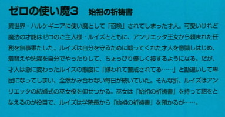
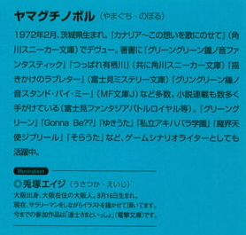

| [ヤマグチノボル] ゼロの使い魔03 | |
| ヤマグチノボル | |
| (2015) | |
|
ゼロの使い魔３〈始祖の祈祷書〉
ヤマグチノボル
|



底本データ
一頁18行 一行40文字 段組１段
文庫判15センチ
ISBN:4840111960
ゼロの使い魔３始祖の祈祷書
異世界・ハルケギニアに使い魔として「召喚」されてしまった才人。可愛いけれど魔法の才能はゼロのご主人様・ルイズとともに、アンリエッタ王女から頼まれた任務を無事果たした。ルイズは自分を守るために戦ってくれた才人を意識しはじめ、着替えや洗濯を自分でやったりして、ちょっぴり優しく接するようになる。だが、才人は急に変わったルイズの態度に「嫌われて警戒されてる......」と勘違いして卑屈になってしまい、全然かみ合わない毎日が続いていた。そんな折、ルイズはアンリエッタの結婚式の巫女役を仰せつかる。巫女は『始祖の祈祷書』を持って詔をとなえるのが役目で、ルイズは学院長から『始祖の祈祷書』を預かるが......。
ヤマグチノボル（やまぐち・のぼる）
１９７２年２月、茨城県生まれ。『カナリア～この想いを歌にのせて』（角川スニーカー文庫）でデウュー。著書に『グリーングリーン鐘ノ音ファンタスティック』『つっぱれ有栖川』（共に角川スニーカー文庫）『描きかけのラブレター』（富士見ミステリー文庫）『グリーングリーン鐘ノ音スタンド・バイ・ミー』（ＭＦ文庫Ｊ）など多数。小説連載も多数手がけている（富士見ファンタジアバトルロイヤル等）。『グリーングリーン』『Gonna Be??』『ゆきうた』『私立アキハバラ学園』『魔界天使ジブリール』など、ゲームシナリオライターとしても活躍中。
◎兎塚エイジ（うさつか・えいじ）
大阪出身、大阪在住の大阪人。８月１６日生まれ。
現在、サラリーマンをしながらイラストを描かせて頂いています。
今までの参加作品は『導士さまといっしょ』（電撃文庫）です。
※ＩＮＤＥＸ※
※第一章 零番目の系統...........................11
※第二章 ルイズの恋煩い........................44
※第三章 始祖の祈祷書...........................81
※第四章 三つ巴の探りあい.....................103
※第五章 工廠と王室..............................140
※第六章 宝探し....................................150
※第七章 竜の羽衣.................................169
※第八章 コルベールの研究室..................182
※第九章 宣戦布告.................................203
※第十章 虚無.......................................220
登場人物
サイト
（平賀才人）
ルイズによってハルケゲニアに召還され、使い魔にされてしまった高校生。好奇心旺盛
ゼロのルイズ
（ルイズ・フランソワーズ・ル・ブラン・ド・ラ・ヴァリエール）
才人のご主人様。魔法は失敗してばかりのおちこぼれだが、貴族としての誇りは人一倍強い。
微熱のキュルケ
（キュルケ・アウグスタ・フレデリカ・フォン・アンハルツ・ツェルプストー）
その美貌とプロポーションで「なびかなかった男はいない」のが自慢。ルイズとは犬猿の仲。
雪風のタバサ
（本名？？）
キュルケと仲のいい、無口な少女。本を読むのが好きで、放っておくといつまででも読んでいる。
青銅のギーシュ
（ギーシュ・ド・グラモン）
やたらとキザぶっているルイズの同級生。使い魔のモグラを溺愛している。
シエスタ
魔法学院のメイド。才人に憧れていて、なにかと世話をやいてくれる。
第一章 零番目の系統
トリステインの王宮は、ブルドンネ街の突き当たりにあった。王宮の門の前には、当直の魔法衛士隊の隊員たちが、幻獣に跨り闊歩している。戦争が近いという噂が、二、三日前から街に流れ始めていた。隣国アルビオンを制圧した貴族派『レコン・キスタ』が、トリステインに侵攻してくるという噂だった。
よって、周りを守る衛士隊の空気は、ピリピリしたものになっている。王宮の上空は、幻獣、船を問わず飛行禁止令が出され、門をくぐる人物のチェックも激しかった。
いつもならなんなく通される仕立て屋や、出入りの菓子屋の主人までが門の前で呼び止められ、身体検査を受け、ディティクトマジックでメイジが化けていないか、『魅了』の魔法等で何者かに操られていないか、など、厳重な検査を受けた。
そんなときだったから、王宮の上に一匹の風竜があらわれたとき、警備の魔法衛士隊の隊員たちは色めきたった。
魔法衛士隊は三隊からなっている。三隊はローテーションを組んで、王宮の警護を司る。一隊が詰めている日は、他の隊は非番か訓練を行っている。今日の警護はマンティコア隊であった。マンティコアに騎乗したメイジたちは、王宮の上空にあらわれた風竜めがけていっせいに飛び上がる。風竜の上には五人の人影があった。しかも風竜は、巨大モグラをくわえている。
魔法衛士隊の隊員たちは、ここが現在飛行禁止であることを大声で告げたが、警告を無視して風竜は王宮の中庭へと着陸した。
桃色がかったブロンドの美少女に、燃える赤毛の長身の女、そして金髪の少年、眼鏡をかけた小さな女の子、そして黒髪の少年だった。少年は、身長ほどもある長剣を背負っている。
マンティコアに跨った隊員たちは、着陸した風竜を取り囲んだ。腰からレイピアのような形状をした杖を引き抜き、一斉に掲げる。いつでも呪文が詠唱できるような態勢をとると、ごつい体にいかめしい髭面の隊長が、大声で怪しい侵入者たちに命令した。
「杖を捨てろ！」
一瞬、侵入者たちはむっとした表情を浮かべたが、彼らにたいして青い髪の小柄な少女が首を振って言った。
「宮廷」
一行はしかたないとばかりにその言葉に頷き、命令されたとおりに、杖を地面に捨てた。
「今現在、王宮の上空は飛行禁止だ。ふれを知らんのか？」
一人の、桃色がかったブロンドの髪の少女が、とんっと軽やかに竜の上から飛び降りて、毅然とした声で名乗った。
「わたしはラ・ヴァリエール公爵が三女、ルイズ・フランソワーズです。怪しいものじゃありません。姫殿下に取り次ぎ願いたいわ」
隊長は口ひげをひねって、少女を見つめた。ラ・ヴァリエール公爵夫妻なら知っている。高名な貴族だ。
隊長は掲げた杖を下ろした。
「ラ・ヴァリエール公爵さまの三女とな」
「いかにも」
ルイズは、胸を張って隊長の目をまっすぐに見つめた。
「なるほど、見れば目元が母君そっくりだ。して、要件を伺おうか？」
「それは言えません。密命なのです」
「では殿下に取り次ぐわけにはいかぬ。要件も尋ねずに取り次いだ日にはこちらの首が飛ぶからな」
困った声で、隊長が言った、
「密命だもの。言えないのはしかたがないでしょう」
風竜の上から飛び降りた才人がそう言った。
隊長は、口を挟んできた才人の容姿を見て、苦い顔つきになった。見たこともない服装だし、鼻は低く、肌も黄色い。そして、背中に大きな剣を背負っている。
どこの国の人間だかはわからぬが、貴族ではないことは確かであった。
「無礼な平民だな。従者風情が貴族に話しかけるという法はない。黙っていろ」
才人は目を細めて、ルイズに向き直った。従者と言われて腹が立った。ほんとは従者ですらなく、使い魔なのだが、そのいかにも軽く見下した言い方にかちんときた。才人は背中に吊ったデルフの柄を握ると、ルイズに聞いた。
「なあルイズ。こいつ、やっちゃっていい？」
「なに強がってるのよ。ワルドに勝ったぐらいでいい気にならないで」
才人とルイズのやり取りを聞いて、隊長は目を丸くした。ワルド？ワルドというのは、あのグリフォン隊の隊長のワルド子爵のことだろうか？それを倒した？どういう意味だ？
なんにせよ「ワルドに勝った」とは聞き捨てならない。隊長は再び杖を構えなおした。
「貴様ら、何者だ？ とにかく、殿下に取り次ぐわけにはいかぬ」
硬い調子で隊長は言った。話がややこしくなりそうだった。ルイズは才人を睨んだ。
「な、なんだよ」
「あんたが余計なこと言うから疑われたじゃないの！」
「だって、あの髭オヤジ生意気なんだもの」
「いいから、あんたは黙ってなさいよね！」
その妙なやり取りを見て、隊長が目配せをする。一行を取り囲んだ魔法衛士隊の面々は、再び杖を構えた。
「連中を捕縛せよ！」
隊長の命令で、隊員たちが一斉に呪文を唱えようとしたとき......。
宮殿の入り口から、鮮やかな紫のマントとローブを羽織った人物が、ひょっこりと顔を出した。中庭の真ん中で魔法衛士隊に囲まれたルイズの姿を見て、慌てて駆け寄ってくる。
「ルイズ！」
駆け寄るアンリエッタの姿を見て、ルイズの顔が、薔薇を撒き散らしたようにぱあっと輝いた。
「姫さま！」
二人は、一行と魔法衛士隊が見守る中、ひっしと抱き合った。
「ああ、無事に帰ってきたのね。うれしいわ。ルイズ、ルイズ・フランソワーズ......」
「姫さま......」
ルイズの目から、ぽろりと涙がこぼれた。
「件の手紙は、無事、このとおりでございます」
ルイズはシャツの胸ポケットから、そっと手紙を見せた。アンリエッタは大きく頷いて、ルイズの手をかたく握り締めた。
「やはり、あなたはわたくしの一番のおともだちですわ」
「もったいないお言葉です。姫さま」
しかし、一行の中にウェールズの姿が見えないことに気づいたアンリエッタは、顔を曇らせる。
「......ウェールズさまは、やはり父王に殉じたのですね」
ルイズは目をつむって、神妙に頷いた。
「......して、ワルド子爵は？ 姿が見えませんが。別行動をとっているのかしら？それとも......、まさか......、敵の手にかかって？そんな、あの子爵に限って、そんなはずは......」
ルイズの表情が曇る。才人が、言いにくそうにアンリエッタに告げた。
「ワルドは裏切り者だったんです。お姫さま」
「裏切り者？」
アンリエッタの顔に、陰がさした。そして、興味深そうにそんな自分たちを、魔法衛士隊の面々が見つめていることに気づき、アンリエッタは説明した。
「彼らはわたくしの客人ですわ。隊長どの」
「さようですか」
アンリエッタの言葉で隊長は納得するとあっけなく杖をおさめ、隊員たちを促し、再び持ち場へと去っていった。
アンリエッタは再びルイズに向き直る。
「道中、何があったのですか？......とにかく、わたくしの部屋でお話ししましょう。他のかたがたは別室を用意します。そこでお休みになってください」
キュルケとタバサ、そしてギーシュを謁見待合室に残し、アンリエッタは才人とルイズを自分の居室に入れた。小さいながらも、精巧なレリーフがかたどられた椅子に座り、アンリエッタは机にひじをついた。
ルイズは、アンリエッタにことの次第を説明した。
道中、キュルケたちが合流したこと。
アルビオンへと向かう船に乗ったら、空賊に襲われたこと。
その空賊が、ウェールズ皇太子だったこと。
ウェールズ皇太子に亡命を勧めたが、断られたこと。
そして......、ワルドと結婚式をあげるために、脱出船に乗らなかったこと。
結婚式の最中、ワルドが豹変し......、ウェールズを殺害し、ルイズが預かった手紙を奪い取ろうとしたこと......。
しかし、このように手紙は取り戻してきた。『レコン・キスタ』の野望......、ハルケギニアを統一し、エルフから聖地を取り戻すという大それた野望はつまずいたのだ。
しかし......、無事、トリステインの命綱であるゲルマニアとの同盟が守られたというのに、アンリエッタは悲嘆にくれた。
「あの子爵が裏切りものだったなんて......。まさか、魔法衛士隊に裏切り者がいるなんて......」
アンリエッタは、かつて自分がウェールズにしたためた手紙を見つめながら、はらはらと涙をこぼした。
「姫さま......」
ルイズが、そっとアンリエッタの手を握った。
「わたくしが、ウェールズさまのお命を奪ったようなものだわ。裏切り者を、使者に選ぶなんて、わたくしはなんということを......」
才人は首を振った。
「王子さまは、もとよりあの国に残るつもりでした。お姫さまのせいじゃないよ」
「あの方は、わたしの手紙をきちんと最後まで読んでくれたのかしら？ねえ、ルイズ」
ルイズは頷いた。
「はい、姫さま。ウェールズ皇太子は、姫殿下の手紙をお読みになりました」
「ならば、ウェールズさまはわたくしを愛しておられなかったのね」
アンリエッタは、寂しげに首を振った。
「では、やはり......、皇太子に亡命をお勧めになったのですね？」
悲しげに手紙を見つめたまま、アンリエッタは頷いた。
ルイズは、ウェールズの言葉を思い出した。彼は頑なに「アンリエッタは私に亡命など勧めてはいない」と、否定した。やはりそれは、ルイズが思ったとおり嘘であったのだ。
「ええ。死んで欲しくなかったんだもの。愛していたのよ。わたくし」
それからアンリエッタは、呆けた様子でつぶやいた。
「わたくしより、名誉の方が大事だったのかしら」
才人は、違うと思った。名誉を守ろうとして、ウェールズはアルビオンに残ったわけじゃない、彼は、アンリエッタに迷惑をかけないために......、ハルケギニアの王家が、弱敵ではないことを反乱勢に示すために、アルビオンに残ったのだ。
「お姫さま、違いますよ。あの王子さまは、姫さまや、このトリステインに迷惑をかけないために、あの国に残ったんです。俺、そう聞きました」
ぼんやりとした顔で、アンリエッタは才人の方を見た。
「わたくしに迷惑をかけないために？」
「自分が亡命したら、反乱勢が攻め入る格好の口実を与えるだけだって王子さまは言ってました」
「ウェールズさまが亡命しようがしまいが、攻めてくるときは攻めよせてくるでしょう。攻めぬときには沈黙を保つでしょう。個人の存在だけで、戦は発生するものではありませんわ」
「......それでも、迷惑をかけたくなかったんですよ。きっと」
アンリエッタは、深いため息をつくと、窓の外を見やった。
才人は、ゆっくりと思い出すようにして言った。
「勇敢に戦い、勇敢に死んでいったと。それだけ伝えてくれって、王子さまは言ってました」
寂しそうに、アンリエッタは微笑んだ。薔薇のように綺麗な王女がそうしていると、空気まで沈うつに淀むようだった。才人は悲しくなった。
アンリエッタは美しい彫刻が施された、大理石削りだしのテーブルにひじをつき、悲しげに問うた。
「勇敢に戦い、勇敢に死んでいく。殿方の特権ですわね。残された女は、どうすればよいのでしょうか」
才人はなにも言えなかった。黙って、下を向いて、バツが悪そうにつま先で床をつついた。
「姫さま......。わたしがもっと強く、ウェールズ皇太子を説得していれば......」
アンリエッタは立ち上がり、申し訳なさそうにそう呟くルイズの手を握った。
「いいのよ、ルイズ。あなたは立派にお役目どおり、手紙を取り戻してきたのです。あなたが気にする必要はどこにもないのよ。それにわたくしは、亡命を勧めて欲しいなんて、あなたに言ったわけではないのですから」
それからアンリエッタは、にっこりと笑った。
「わたくしの婚姻を妨げようとする暗躍は未然に防がれたのです。わが国はゲルマニアと無事同盟を結ぶことができるでしょう。そうすれば、簡単にアルビオンも攻めてくるわけにはいきません。危機は去ったのですよ、ルイズ・フランソワーズ」
アンリエッタは努めて明るい声を出して言った。
ルイズはポケットから、アンリエッタにもらった水のルビーを取り出した。
「姫さま、これ、お返しします」
アンリエッタは首を振った。
「それはあなたが持っていなさいな。せめてものお礼です」
「こんな高価な品をいただくわけにはいきませんわ」
「忠誠には、報いるところがなければなりません。いいから、とっておきなさいな」
ルイズは頷くと、それを指にはめた。
その様子を見て、才人も、王子の指から抜き取った指輪のことを思い出した。ジーンズの後ろポケットに入ったそれを取り出すと、アンリエッタに手渡した。
「お姫さま、これ、ウェールズ皇太子から預かったものです」
アンリエッタは、その指輸を受け取ると、目を大きく見開いた。
「これは、風のルビーではありませんか。ウェールズ皇太子から、預かってきたのですか」
「そうです。王子さまは、最後にこれを俺に託したんです。お姫さまに渡してくれって」
ほんとは、斃れたウェールズの指から抜いてきたものだったけど......、才人はそう言った。
そう言ったほうが、アンリエッタの心の慰めになると思ったからだった。
アンリエッタは風のルビーを指に通した。ウェールズがはめていたものなので、アンリエッタの指にはゆるゆるだったが......、小さくアンリエッタが呪文を呟くと、指輪のリングの部分が窄まり、薬指にぴたりとおさまった。
アンリエッタは、風のルビーを愛しそうになでた。それから才人の方を向いて、はにかんだような笑みを浮かべた。
「ありがとうございます。優しい使い魔さん」
寂しく、悲しい笑みだったけど、才人に対する感謝の念がこもった笑みだった。その笑みの高貴さと美しさに打たれて、才人は、いえ、その、と口の中でもごもごと呟いた。
「あの人は、勇敢に死んでいったと。そう言われましたね」
才人は頷いた。
「はい。そうです」
アンリエッタは、指に光る風のルビーを見つめながら言った、
「ならば、わたくしは......、勇敢に生きてみようと思います」
王宮から、魔法学院に向かう空の上、ルイズは黙りっぱなしだった。キュルケが、いつたいウェールズから取り返してきた手紙に何が書いてあったのか、ルイズと才人から聞きだそうと、なんやかや話しかけてきたが、二人はしゃべらなかった。
「なあに？ あれだけ手伝わせて、どんな任務だったか教えてくれないの？おまけにあの子爵は裏切り者だっていうし。ワケわかんないわ」
キュルケは才人を、熱っぽい視線で見つめた。
「でも、ダーリンがやっつけたのよね？」
才人は、ルイズの顔をちらっと見てから、頷いた。
「う、うん。でも、逃げられたし......」
「それでもすごいわ！ ねえ、いったいどんな任務だったの？」
才人は頭をかいた。ルイズが黙っている以上、話すわけにはいかないのだった。
キュルケは眉をひそめ、それからギーシュの方を向いた。
「ねえギーシュ」
「なんだね？」
薔薇の造花をくわえて、ぼけっと物思いに耽っていたギーシュが振り向いた。
「あなた、アンリエッタ姫殿下が、あたしたちに取り戻せと命じた手紙の内容を知ってるんでしょ？」
ギーシュは、目をつむって言った。
「そこまではぼくも知らないよ。知ってるのはルイズだけだ」
「ゼロのルイズ！ なんであたしには教えてくれないの！ねえタバサ！あなたどう思う？なんかとっても、バカにされてる気がするわ！」
キュルケは、本を読んでいるタバサを揺さぶった。タバサはされるがままに、ガクガクと首を振った。
そんな風にキュルケが暴れたおかげで、バランスを崩した風竜は、がくんと高度を落とした。そのときの揺れでバランスを崩し、ギーシュは風竜の背中から落っこちた。ぎぃやぁあああああああ、と絶叫を残し、彼は落下したが、相手がギーシュだったので誰も気にしなかった。途中でギーシュは杖を振り、『レビテーション』で浮かぶことができたので、危うく命を落とすことは免れた。
ルイズもバランスを崩したが、才人がそっと手を伸ばして腰を抱き、体を支えてくれた。腰に回された手を見て、ルイズは顔を赤らめた。今朝、アルビオンから逃げ出してきたときに、才人は自分にキスをした。そのとき、自分は寝たフリをしたのだった。
なんでだろう。なんで寝たフリをしたんだろう。
好きなのかもしれない、と思ったけど、それは認めたくなかった。だって、才人は自分の使い魔だし、それに貴族じゃない。貴族じゃない人間に恋心を抱くなんて、想像したことすらなかった。貴族と平民は違う人間......、そう言われて育ってきたルイズにとって、自分の胸騒ぎは、戸惑いを生むだけだった。そばにいると、その気持ちが本当なのかどうか、確かめる余裕さえなかった。
結局、腰に回された手を見て、ルイズは怒ったような口調で言った。
「き、気安くさわったら、怒るんだから」
「お前、落ちそうだったんだぜ。ギーシュみたいに」
才人も、顔を赤らめて言った。
「いいのよ、ギーシュは落ちたって。ギーシュだし」
ルイズは、戸惑いからなんだかトチくるったことを言った。
「そ、そりゃ、あいつは落ちたっていいけどよ。お前が落ちたら困るだろ。魔法が使えないんだから」
「使い魔のくせに、ご主人様を侮辱するの？」
ルイズはふんっと顔をそむけた。でも、それほど怒ってないようだった。
「おまけになんだかなれなれしいし。失礼しちゃうわ。ほんとに。ふんとに」
ルイズはぶつぶつと文句を言ったが、才人の手をふりほどこうとはしない。それどころか、心もち体を預けてくるようにして、才人に寄り添ってきた。でも、顔は依然、そむけたままだ。才人は、ルイズの顔をちらっと盗み見た。
白い頬がほんのりと桃色に染まり、可憐なデイジーのような下唇を軽く噛んでいる。アンリエッタも綺麗だけど......、やっぱりルイズは可愛い、と思った。腰に回した手を確かめる。そして、気づく。ウエストなんか、俺の太ももぐらいしかないんじゃなかろか。
そんな硬い表情でよりそっていると、キュルケが振り向いて、まあ、と呟いた。
「いつの間にできてたの？ あなたたち」
ルイズは、気づいたように、はっ！ と顔を赤らめ、思いっきり才人を突き飛ばした。
「できてなんかないわよ！ ばかじゃないかしら！」
才人は、絶叫をたなびかせて、地面へと落ちていく。本を読んでいたタバサが、めんどくさそうに杖を振り、才人に『レビテーション』をかけた。
才人が地面にふんわりと降り立つと、先ほど落下したギーシュが、恨めしげな顔で歩いていた。そこは草原の中を走る、街道であった。
ギーシュは立ち止まると、いつものキザったらしい仕草で、才人に声をかけた。
「きみも落ちたのかね」
才人は、疲れた声で答えた。
「落とされた」
「で、彼女たちは、迎えに来てはくれんのかね」
才人は空を見上げた。青空の中、風竜はぐんぐん遠ざかっていく。
「......そうみたいだな」
「なるほど。では歩こう。まあ、半日も歩けばつくさ」
あまり気にした風もなく、ギーシュは歩き始めた。才人はなんとなく、こいつは大物かもしれないと思った。
「ところで、きみ、その、なんだ。聞きたいことがあるんだ。答えたまえ」
ギーシュは薔薇の造花をいじりながら才人に尋ねた。
「あんだよ」
「姫殿下は、その、ぼくのことをなにか噂しなかったかね？頼もしいとか、やるではないですかとか、追って恩賞の沙汰があるとか、その、密会の約束をしたためた手紙をきみに託したとか......」
才人はちょっとギーシュがかわいそうになった。アンリエッタはギーシュの『ギ』の字も話題に上らせなかったからだ。
「歩こうか」
才人は聞こえなかったフリをして、すたすたと歩き始めた。ギーシュがそのあとを追いかけてくる。
「その、何か噂しなかったかね？」
「さあ、ほら、歩こうぜ。健康にもいい」
「なあきみ、姫殿下は、ぼくのことを......」
ぽかぽかと太陽が照らす中、二人は魔法学院目指して歩いた。
かつては名城と謳われたニューカッスルの城は、惨状を呈していた。生き残ったものに絶望を感じさせ、死者に鞭打つ惨状である。城壁は度重なる砲撃と魔法攻撃で、瓦礫の山となり、無残に焼け焦げた死体が転がっている。
攻城に要した時間はわずかだったが、反乱軍......、いや、いまやアルビオンに王さまは存在しないのだから、反乱軍『レコン・キスタ』は、すでにアルビオンの新政府である......、の損害は想像の範囲を超えていた。三百の王軍に対して、損害は二千。怪我人も合わせれば、四千。戦死傷者の数だけみれば、どちらが勝ったのかわからないぐらいであった。
浮遊大陸の岬の突端に位置した城は、一方向からしか攻めることができない。密集して押し寄せたレコン・キスタの先陣は、魔法と大砲の斉射を何度も食らい、大損害を受けたのである。
しかし、所詮は多勢に無勢。一旦、城壁の内側へと侵入された堅城は、もろかった。王軍は、そのほとんどがメイジで護衛の兵を持たなかった。王軍のメイジたちは、群がるアリのような名もなき『レコン・キスタ』の兵士たちに一人、また一人と討ち取られ、散っていった。
敵に与えた損害は大きかったが......、その代償として、王軍は全滅した。文字通りの全滅であった。最後の一兵に至るまで、王軍は戦い、斃れた。
つまり、アルビオンの革命戦争の最終決戦、ニューカッスルの攻城戦は、百倍以上の敵軍に対して、自軍の十倍にも上る損害を与えた戦い......、伝説となったのであった。
戦が終わった二日後、照りつける太陽の下、死体と瓦礫が入り混じる中、長身の貴族が戦跡を検分していた。羽のついた帽子に、アルビオンでは珍しいトリステインの魔法衛士隊の制服。
ワルドであった。
彼の隣には、フードを目深にかぶった女のメイジ。
土くれのフーケであった。彼女は、ラ・ロシェールから船に乗り、アルビオンに渡ってきたのである。昨晩、アルビオンの首都、ロンディニウムの酒場でワルドと合流して、このニューカッスルの戦場跡へとやってきた。
周りでは、『レコン・キスタ』の兵士たちが、財宝漁りにいそしんでいる。宝物庫と思しき辺りでは、金貨探しの一団が歓声をあげていた。
長槍をかついだ傭兵の一団が、元は綺麗な中庭だった瓦礫の山に転がる死体から装飾品や武器を奪い取り、魔法の杖を見つけては大声ではしゃいでいる。
フーケは、その様子を苦々しげに見つめて、舌打ちをならした。
そんなフーケの表情に気づき、ワルドは薄い笑いを浮かべた。
「どうした、土くれよ。貴様もあの連中のように、宝石を漁らんのか。貴族から財宝を奪い取るのは、貴様の仕事じゃなかったのか」
「私とあんな連中をいっしょにしないで欲しいわね。死体から宝石を奪い取るのは、趣味じゃないわ」
「盗賊には、盗賊の美学があるということか」
ワルドは笑った。
「据え膳に興味はないわ。私は、大切なお宝を盗まれて、あたふたする貴族の顔を見るのが好きだったのよ。こいつらは......」
フーケは、ちらっと王軍のメイジの死体を横目で眺めた。
「もう、慌てることもできないわね」
「アルビオンの王党派は貴様の仇だろうが。王家の名の下に、貴様の家名は辱められたのではなかったか？」
ワルドが嘯くように言うと、フーケは冷たい、感情を抑えた声で頷いた。
「そうね。そうなんだけどね」
それから、ワルドの方を向いた。二の腕の中ほどから左腕が切断されている。主をなくした制服の袖が、ひらひらと風に揺られていた。
「あんたも随分と苦戦したようね」
ワルドは、変わらぬ調子の声で答えた。
「ウェールズと腕一本なら、安い取引だったと言わねばならんだろう」
「たいしたやつだね。あの『ガンダールヴ』。風のスクウェアのあんたの腕を、ぶった切っちまうなんてね」
「平民だと思って、油断したよ」
「だから言ったじゃない。あいつは私のゴーレムだってやっつけたんだ。でもまあ、この城にいたんじゃあ、生き残れはしなかっただろうけどね」
フーケがそう言うと、ワルドは冷たい微笑を浮かべた。
「ガンダールヴといえど、所詮は人だ。攻城の隊から、それらしき人物に苦戦したという報告は届いていない。やつは俺と戦って、力を消耗していた。おそらく、ただの平民に成り果てていただろうな。ガンダールヴを討ち取った兵は、それが伝説の使い魔と気づきもしなかっただろう」
フーケは、気がなさそうに鼻を鳴らした。サイトとか呼ばれていた、妙な格好の少年を脳裏に浮かべる。そんなに簡単に死ぬようなタマだろうか？
「で、その手紙とやらはどこにあるんだい？」
「この辺りだ」
ワルドは、杖で地面を指した。そこは、二日前まで礼拝堂であった場所だ。ワルドとルイズが結婚式を挙げようとした場所であり、ウェールズが命を失った場所であった。
しかし、今ではただの瓦礫の山となっていた。
「ふーん、あのラ・ヴァリエールの小娘......、あんたの元婚約者のポケットに、その手紙は入ってるんでしょう？」
「そうだ」
「見殺し？ 愛してなかったの？」
「愛するとか、愛さないとか、そういった感情は忘れたよ」
抑揚の変わらぬ声で、ワルドはそう言った。
呪文を詠唱し、杖を振った。小型の竜巻があらわれ、辺りの瓦礫が飛び散る。
徐々に、礼拝堂の床が見えてきた。
始祖ブリミルの像と、椅子に挟まれた間に、ウェールズの亡骸があった。椅子と像に挟まれていたおかげで、亡骸はつぶれていなかった。
「あらら。懐かしのウェールズさまじゃない」
フーケが驚いた声をあげた。元はアルビオンの貴族だったフーケは、ウェールズの顔を覚えていた。
ワルドは、自分が殺したウェールズの亡骸には目もくれず、ルイズと才人の死体を探した。
しかし......、どこにも死体は見つからない。
「ほんとにここで、あいつらは死んだの？」
そのはずだが、と呟いて、ワルドは辺りを注意深く探し始めた。
「ふーん......、あら、これってジョルジュ・ド・ラ・トゥールの『始祖ブリミルの光臨』じゃないの」
フーケが、床に転がった絵画を手に取った。
「と、思ったら複製か。ま、そうよね、こんな田舎の城の礼拝堂に......、って、ん？」
フーケは、絵画が転がっていた床の上に、ぽっこりと開いた直径一メイルほどの穴を見つけ、ワルドを呼んだ。
「ねえワルド。この穴、何かしら？」
ワルドは眉をひそめると、しゃがんでフーケが指した穴を覗き込む。ギーシュの使い魔である巨大モグラが掘った穴だったが、ワルドはそれを知らない。ワルドの頬を、穴の奥から吹く冷たい風がなぶる。
「もしかして、この穴を掘って、ラ・ヴァリエールの娘とガンダールヴは逃げたんじゃないの？」
フーケが言った。そうに違いない。ワルドの顔が、怒りでゆがむ。
「中に入って、追いかけてみる？」
「無駄だろう。風が入ってくるということは、空に通じているはずだ」
ワルドは苦々しい声で言った。そんな様子を見て、フーケがにっこりと微笑んだ。
「あんたも、そんな顔をするのね。ガーゴイルみたいに感情のない男だと思ったけど......、どうしてどうして、気持ちが顔に出るタイプ？」
からかうな、と言って、ワルドは立ち上がる。
遠くから、そんな二人に声がかけられた。
快活な、澄んだ声だった。
「子爵！ ワルド君！ 件の手紙は見つかったかね？アンリエッタが、ウェールズにしたためたという、その、なんだ、ラヴレターは......。ゲルマニアとトリステインの婚姻を阻む救世主は見つかったかね？」
ワルドは首を振って、あらわれた男に応えた。
やってきた男は、年のころ三十代の半ば。丸い球帽をかぶり、緑色のローブとマントを身に着けている。一見すると聖職者のような格好に見えた。しかしながら、物腰は軽く、軍人のようであった。高い鷲鼻に、理知的な色をたたえた碧眼。帽子の裾から、カールした金髪が覗いている。
「閣下。どうやら、手紙は穴からすり抜けたようです。私のミスです。申し訳ありません。なんなりと罰をお与えください」
ワルドは、地面に膝をつき、頭を垂れた。
閣下と呼ばれた男は、にかっと人懐こそうな笑みを浮かべ、ワルドに近寄るとその肩を叩いた。
「何を言うか！ 子爵！ きみは目覚ましい働きをしたのだよ。敵軍の勇将を一人で討ち取る働きをしてみせたのだ！ほら、そこに眠っているのは、あの親愛なるウェールズ皇太子じゃないかね？誇りたまえ！きみが倒したのだ！彼は、ずいぶんと余を嫌っていたが......、こうして見ると不思議だ、妙な友情さえ感じるよ。ああ、そうだった。死んでしまえば、誰もがともだちだったな」
ワルドは、セリフの最後に込められた皮肉に気づき、わずかに頬をゆがめた。それから、すぐに真顔に戻り、自分の上官に再び謝罪を繰り返した。
「ですが、閣下が欲しがっておられた、アンリエッタの手紙を手に入れる任務に失敗いたしました。私は閣下のご期待に添うことができませんでした」
「気にするな。同盟阻止より、確実にウェールズをしとめることの方が大事だ。理想は、一歩ずつ、着実に進むことにより達成される」
それから緑のローブの男は、フーケの方を向いた。
「子爵、そこの綺麗な女性を余に紹介してくれたまえ。未だ僧籍に身を置く余からは、女性に声をかけづらいからね」
フーケは、男を見つめた。ワルドが頭を下げているところを見ると、随分と偉いさんなのだろう。だがしかし、気に入らない。妙なオーラを放っている。禍々しい雰囲気が、ローブの隙間から漂ってくる。
ワルドは立ち上がると、男にフーケを紹介した。
「彼女が、かつてトリステインの貴族たちを震え上がらせた『土くれ』のフーケにございます。閣下」
「おお！ 噂はかねがね存じておるよ！お会いできて光栄だ。ミス・サウスゴータ」
かつて捨てた貴族の名を口にされたフーケは微笑んだ。
「ワルドに、わたしのその名前を教えたのは、あなたなのね？」
「そうとも。余はアルビオンのすべての貴族を知っておる。系図、紋章、土地の所有権......、管区を預かる司教時代にすべて諳んじた。おお、ご挨拶が遅れたね」
男は、目を丸く見開いて、胸に手を添えた。
「『レコン・キスタ』総司令官を務めさせていただいておる、オリヴァー・クロムウェルだ。元はこの通り、一介の司教に過ぎぬ。しかしながら、貴族議会の投票により、総司令官に任じられたからには、微力を尽くさねばならぬ。始祖ブリミルに仕える聖職者でありながら、『余』などという言葉を使うのを許してくれたまえよ？微力の行使には信用と権威が必要なのだ」
「閣下はすでに、ただの総司令官ではありません。今ではアルビオンの......」
「皇帝だ、子爵」
クロムウェルは笑った。しかし、目の色は変わらない。
「確かにトリステインとゲルマニアの同盟阻止は、余の願うところだ。しかし、それよりももっと大事なことがある。なんだかわかるかね？子爵」
「閣下の深いお考えは、凡人の私にははかりかねます」
クロムウェルは、かっと目を見開いた。それから、両手を振り上げると、大げさな身振りで演説を開始した。
「『結束』だ！ 鉄の『結束』だ！ ハルケギニアは我々、選ばれた貴族たちによって結束し、聖地をあの忌まわしきエルフどもから取り返す！それが始祖ブリミルより余に与えられし使命なのだ！『結束』には、なにより信用が第一だ。だから余は子爵、きみを信用する。些細な失敗を責めはしない」
ワルドは深々と頭を下げた。
「その偉大なる使命のために、始祖ブリミルは余に力を授けたのだ」
フーケの眉が、ぴくんと跳ねた。力？いったい、どんな力だというのだろうか？
「閣下、始祖が閣下にお与えになった力とはなんでございましょう？よければ、お聞かせ願えませんこと」
自分の演説に酔うような口調で、クロムウェルは続けた。
「魔法の四大系統はご存知かね？ ミス・サウスゴータ」
フーケは頷いた。そんなことは、子供でも知っている。火、風、水、土の四つである。
「その四大系統に加え、魔法にはもう一つの系統が存在する。始祖ブリミルが用いし、零番目の系統だ。真実、根源、万物の祖となる系統だ」
「零番目の系統......、虚無？」
フーケは青ざめた。今は失われた系統だ。どんな魔法だったのかすら、伝説の闇の向こうに消えている。この男は、その零番目の系統を知っているというのだろうか？
「余はその力を、始祖ブリミルより授かったのだ。だからこそ、貴族議会の諸君は、余をハルケギニアの皇帝にすることを決めたのだ」
クロムウェルは、ウェールズの死体を指差した。
「ワルド君。ウェールズ皇太子を、是非とも余の友人に加えたいのだが。彼はなるほど、余の最大の敵であったが、だからこそ死して後は良き友人になれると思う。異存はあるかね？」
ワルドは首を振った。
「閣下の決定に異論が挟めようはずもございません」
クロムウェルは、にっこりと笑った。
「では、ミス・サウスゴータ。貴女に、『虚無』の系統をお見せしよう」
フーケは、息を呑んでクロムウェルの挙動を見つめた。
クロムウェルは腰にさした杖を引き抜いた。
低い、小さな詠唱がクロムウェルの口から漏れる。フーケがかつて聞いたことのない言葉であった。
詠唱が完成すると、クロムウェルは優しくウェールズの死体に、杖を振り下ろす。
すると......、なんということであろう、冷たい躯であったウェールズの瞳が、ぱちりと開いた。フーケの背筋が凍りついた。
ウェールズは、ゆっくりと身を起こした。青白かった顔が、みるみるうちに生前の面影を取り戻していく。まるで萎れた花が水を吸うように、ウェールズの体に生気がみなぎっていく。
「おはよう、皇太子」
クロムウェルがつぶやく。
蘇ったウェールズは、クロムウェルに微笑み返した。
「久しぶりだね、大司教」
「失礼ながら、今では皇帝なのだ。親愛なる皇太子」
「そうだった。これは失礼した。閣下」
ウェールズは膝をつくと、臣下の礼を取った。
「きみを余の親衛隊の一人に加えようと思うのだが。ウェールズ君」
「喜んで」
「なら、友人たちに引き合わせてあげよう」
クロムウェルは歩き出した。そのあとを、ウェールズが生前と変わらぬ仕草で歩いていく。
フーケは呆然として、その様子を見つめていた。クロムウェルが思い出したように立ち止まり、振り向いて言った。
「ワルド君、安心したまえ。同盟は結ばれてもかまわない。どのみちトリステインは裸だ。余の計画に変更はない」
ワルドは会釈した。
「外交には二種類あってな、杖とパンだ。とりあえずトリステインとゲルマニアには温かいパンをくれてやる」
「御意」
「トリステインは、なんとしてでも余の版図に加えねばならぬ。あの王室には『始祖の祈祷書が眠っておるからな。聖地に赴く際には、是非とも携えたいものだ」
そう言って満足げに頷くと、クロムウェルは去っていった。
クロムウェルとウェールズが視界の外に去ったあと、フーケはやっとの思いで口を開いた。
「あれが、虚無......？ 死者が蘇った。そんなバカな」
ワルドがつぶやいた。
「虚無は生命を操る系統......。閣下が言うには、そういうことらしい。俺にも信じられんが、目の当たりにすると、信じざるを得まいな」
フーケは、震える声で、ワルドに尋ねた。
「もしかして、あんたもさっきみたいに、虚無の魔法で動いてるんじゃないだろうね？」
ワルドは笑った。
「俺か？ 俺は違うよ。幸か不幸か、この命は生まれつきのものさ」
それからワルドは、空を仰いだ。
「しかしながら......、あまたの命が聖地に光臨せし始祖によって与えられたとするならば......、すべての人間は『虚無』の系統で動いているとはいえないかな？」
フーケはぎょっとした顔になって、胸を押さえた。心臓の鼓動を確かめる。生きているという実感が、急に欲しくなったのだ。
「そんな顔をするな。これは俺の想像だ。妄想といってもよい」
ほっとフーケはため息をついた。それからワルドを恨めしげに見つめる。
「驚かせないでよ」
ワルドは右手で、なくなった左腕の辺りを撫でながら言った。
「でもな、俺はそれを確かめたいのだ。妄想に過ぎぬのか、それとも現実なのか。きっと聖地にその答えが眠っていると、俺は思うのだよ」
才人たちが、魔法学院に帰還してから三日後に、正式にトリステイン王国王女アンリエッタと帝政ゲルマニア皇帝、アルブレヒト三世との婚姻が発表された。式は一ヵ月後に行われるはこびとなり、それに先立ち、軍事同盟が締結されることとなった。
同盟の締結式は、ゲルマニアの首府、ヴィンドボナで行われ、トリステインからは宰相のマザリーニ枢機卿が出席し、条約文に署名した。
アルビオンの新政府樹立の公布が為されたのは、同盟締結式の翌日。両国の間には、すぐに緊張が走ったが、アルビオン帝国初代皇帝、クロムウェルはすぐに特使をトリステインとゲルマニアに派遣し、不可侵条約の締結を打診してきた。
両国は、協議の結果、これを受けた。両国の空軍力を合わせても、アルビオンの艦隊には対抗しきれない。喉元に短剣を突きつけられたような状態での不可侵条約であったが、未だ軍備が整わぬ両国にとって、この申し出は願ったりであった。
そして......、ハルケギニアに表面上は平和が訪れた。政治家たちにとっては、夜も眠れない日々が続いたが、普通の貴族や、平民にとってはいつもと変わらぬ日々が待っていた。
それは、トリステインの魔法学院でも例外ではなかった。
第二章 ルイズの恋煩い
アルビオンから帰ってきた翌朝から、ルイズの態度が変わり始めた。
一言でいうと、優しくなったのである。
朝起きた才人はいつものように、ルイズのために洗面器を用意した。中には水が張ってある。これでルイズは、いつも顔を才人に洗わせるのである。
めんどくさいが、才人がこの洗面器を忘れると大変なことになる。
いつだか、才人は洗面器を用意するのを忘れて飯を抜かれた。頭にきたので、次の日の朝、魔法学院の裏にある池で捕まえたカエルを洗面器の中に入れておいた。カエルが嫌いなルイズは、洗面器の中で泳ぐ赤い両生類を見て泣いてしまった。いきなり顔の前にあらわれたので、そりゃもう、びーびー泣いた。才人はさすがに謝ったが、自分をそんなイタズラで泣かせた才人をルイズは許さなかった。
ルイズは才人の飯を抜くだけでは気がすまず、鞭で叩こうとしたので、才人は部屋から逃げ出して、外で寝た。
洗面器一つとっても、そんな風にケンカばかりしていた二人だったが、アルビオン行きで何かが変わった。ルイズの中には、才人に対する優しい気持ちが芽生え、それは才人も同じだった。しかし、それにお互い気づいていなかった。
朝、才人はちょっと照れながら洗面器を用意した。低血圧のルイズは眠そうな顔をふにゃっと歪めたままベッドに腰掛けている。
床に洗面器を置き、才人が両手で水をすくったが、ルイズは動かない。やわらかい、桃色がかったブロンドの髪が、ふにゃふにゃと崩れて顔にかかっている。眠そうにふがふが目をこする。ルイズは、ぼんやりとした表情のまま、口を開いた。
「そこに置いといて。自分で洗うから、いいわ」
才人は驚いた。まさか、ルイズの口から「自分でやる」なんて言葉が出るとは思わなかったのだ。
「ルイズ？」
顔の前で、才人は手を振った。ルイズは拗ねたように唇を尖らせると、横を向いた。頬が染まっている。
なんだか怒ったような調子で、ルイズは言った。
「自分で洗うから、いいの。ほっといて」
ルイズは洗面器に手を入れ、水をすくうと思いきり顔を振って、顔を洗った。水が飛び散る。
「お前、顔を動かして顔を洗うタイプか」
才人がそういうと、ルイズははっとした顔になった。それから、頬を染めて怒る。
「い、いいじゃないのよ！」
「いや、いいけど......」
それから才人は、ルイズの着替えをクローゼットから取り出しな、下着をベッドのそばに置いて、後ろを向いた。その間に、ルイズは下着を身につけるのであった。
下着をつけ終わった頃を見計らって、才人は振り向いた。手にはルイズの制服を握っている。これを今からルイズに着せるのである。
才人が振り向くと、下着姿のルイズは慌てた顔になって、さっとシーツを体に巻きつけた。
「服、置いといて」
顔の下半分を、シーツで隠してルイズは言った。どうしたんだろう？と才人は思った。いつもなら、眠そうな顔をして、だらんと腕を伸ばし「早く着せなさいよね。ぐず」とか言いはなつのに......。
おまけに体をシーツで隠している。いつもなら、見られたってなんともないくせに、いきなり何を恥ずかしがってるんだろう。
「置いといて？ 着せなくていいのかよ」
才人がそういうと、ルイズはシーツから顔を出した。
「置いといてって言ってるじゃない！」
それからルイズは再びシーツに顔の下半分をうずめ才人をにらみ、う～～～～、と唸った。
なんか妙、と思った才人は、言われたままに服をルイズのそばに置いた。
「向こうむいてて」
「え？」
「向こうむいてなさいって言ってるの」
どうやら着替えるところを見られるのがイヤなようだ。それは年頃の少女なら、至極当然な感情だが、今までは見られたって平気な顔をしていたルイズである。
才人はいったいどうしたことだろうと思いながら、ルイズに背を向けた。
確かに、アルビオンではいろいろあった。婚約者だと思ってた人物は裏切りもので、幼馴染みのアンリエッタの恋人は死んでしまった。そして、ルイズ自身、死ぬような目にあっている。それらの事柄が、ルイズを変えたのかもしれない。
ルイズは変わったのかな？
才人はぼんやりとしながら、ルイズの唇の感触を思い出した。風竜の上、才人はこそっと寝ているルイズに唇を合わせてしまったのである。寝ている隙にキスするなんて、卑怯だし、いけないことだ。でも、あのときは我慢できなかった。そのぐらい、ルイズを愛しく感じてしまったのであった。
もしかして......、と才人は思った。ルイズ、あのキス、知ってるんじゃなかろか？でもって、俺に危険を感じ......、襲われると思って着替えを隠すようになったのではないだろうか？
才人はそこまで思って、いやいやと首を振った。
あのときルイズが起きていたのなら、黙っているはずがない。
起きる。怒る。殴る。
このハーモニーが炸裂したはずだ。
ベッドに忍び込んだときなんか、ひどかったじゃないか。
犬。俺、犬。鎖につながれ、『わん』と言え。
あ。そうか。
才人は気づいた。
アルビオンに行く二日前の夜、寝ているルイズに襲いかかったから、危険を感じてるんだ。
それって、キスどころの騒ぎじゃねえだろ。
ああ、だから、着替えを手伝わせなくなったのだ。
そこまで考え、才人は落ち込んだ。そりゃもう、激しく後悔した。あんなことしなきゃよかった。ルイズは俺に襲われたくないのだ。いや、それは当たり前だけど、つまり好きじゃないのだ。いや、それは当たり前なんだけど......。
当たり前なんだけど......、悲しい。
一縷の望みとか？ ない。ないのだ。俺はルイズに好かれてない。ただの使い魔。というか今では危険な使い魔。夜中に狼に変身する、いけない使い魔。そう思われてる。壁、作られてる。
暗雲が立ち込めてきた。心の中の、希望という名の才人が必死に呟く。
『でも、帰りの風竜の上で、ルイズは俺に寄り添ってきたじゃないか』
心の中の、絶望という名の才人が、冷たく答える。
『それ、気のせいだから。それが証拠に、キュルケに指摘されたら、俺を突き飛ばしませんでしたか？』
......ああ。そうだ。間違いない。ルイズはぜんぜんなんとも俺のことを思ってないのだ。
ルイズに対する自分の気持ちに気づいた分だけ、落ち込みは激しかった、才人は調子に乗るときはとことん調子に乗るが、落ち込むときはとことん落ち込む性格である。しかもその速度はマッハに近く、程度は底知らずであった。
「なにつぶやいてんの？」
いつの間にかぶつぶつと口の中でつぶやいていたらしい。
振り返ると、着替えの終わったルイズが、怪訝な顔で才人を見つめている。
わずか二十秒の間にそこまで考え、結論に至り、落ち込んでいた才人はあんぐりと口をあけ、幽霊のような声で答えた。
「すいましぇん。もう二度と、独り言はいたしましぇん」
「そうして。なんだか、気味が悪いし」
ルイズはじっとそんな才人を怪訝に見つめていたが、歩き出した。
「ほら、朝ごはん行くわよ」
「はいでしゅ......」
才人はしょぼんとしながら、あとに続いた。
アルヴィーズの食堂でも、驚くべきことが起こった。
いつものように、才人が床に座り込むと、目の前にスープの皿がなかった。才人は焦った。なにかルイズを怒らせて、飯を抜かれるようなことをしただろうか？いや、なにもない。
昨夜、学院に帰還した五人はオスマン氏にことの次第を報告した。アンリエッタから話を聞いていたオスマン氏は、才人たちの労をねぎらい、ほめてくれた。
それから才人たちは部屋に戻り......、すぐに眠りについたのである。怒らせるようなことは何もしていない。
才人は情けない顔で、椅子に座ったルイズを見上げた。ルイズはなぜか頬を染め、そっぽを向いたまま、言った。
「今日からあんた、テーブルで食べなさい」
「え？」
才人はきょとんとして、ルイズを見つめた。思いがけないルイズの言葉である。
「いいから。ほら、座って。早く」
呆然として、ルイズの隣に腰掛けた。そこにいつも座っている、かぜっぴきのマリコルヌがあらわれて、抗議の声をあげた。
「おい、ルイズ。そこは僕の席だぞ。使い魔を座らせるなんて、どういうことだ」
ルイズはきっとマリコルヌを睨んだ。
「座るところがないなら、椅子を持ってくればいいじゃないの」
「ふざけるな！ 平民の使い魔を座らせて、僕が椅子をとりに行く？そんな法はないぞ！おい使い魔、どけ！そこは僕の席だ。そして、ここは貴族の食卓だ！」
ふとっちょのマリコルヌは思いきり胸をそらせて、精一杯の虚勢を張った。ちょっと震えている。ギーシュを倒し、あのフーケをとっ捕まえた才人はなんと伝説の使い魔らしい、ということはすでに学院中の噂になっているのだった。
おまけにルイズたちと数日学院を留守にしている間に、なにかとんでもない手柄を立てたらしい、ということさえ、昨日の今日なのに噂されていた。
そんな才人だったので、マリコルヌは冷や汗をかきながら文句を言った。
才人はルイズにキケンな狼扱いされてる壁作られてる、と思い込んでいたから、激しく元気がなかったが、ナメた口をきかれたので反応した。立ち上がり、マリコルヌの胸倉をつかんだ。
そして、勢いはないが、妙な迫力を含んだ声でつぶやいた。
「おいぽっちゃり。俺になんか言ったか？」
すぐにびびったマリコルヌは虚勢を捨て、首をぶんぶんと左右に振った。
「言った、けど、いい。なんでもない」
才人は機嫌が悪かったので、歯をむいてマリコルヌをにらみつけた。
「ないです、だべ！」
「な、なんでもない、です。はい」
「だったら椅子とってこい。仲良く飯食おうぜ」
マリコルヌは椅子を取りにいくために、すっ飛んでいった。
ルイズは、すました顔で椅子に座り、食前の祈りの時間を待っている。
どうしたんだろう。いったい、どういう心境の変化なんだろうか。
なんでこいつ、こんなに優しいんだろう。何かのワナだろうか？
違う、と思った。ルイズはあのアルビオン行きで、何かが変わったのだ。
きっと......、傷つき、斃れ行く人たちを見て、心の中に優しい気持ちが芽生えたのに違いない。歴史の授業でやった江戸時代の将軍、徳川綱吉の『生類憐れみの令』を才人は思い出した。犬将軍綱吉は野良犬をあわれみ、これを苛めるものを罰したという。
それだ。
生類憐れみの令、トリステインにて発令。
発布人、ルイズ・フランソワーズ・ル・ブラン・ド・ラ・ヴァリエール。
対象、使い魔及び犬つまり俺。
才人はそこまで想像をめぐらせ、ルイズを生暖かい視線で見守った。
優しくなったネ。ルイズ。
女の子らしくなったネ。ルイズ。
そんなキミが眩しいヨ。
狼と警戒する、こんな俺にまで優しくしてくれるなんて......。
女の子らしく、キミは成長してるんだネ......。
ああ、きちんと、そんなキミをボクは見守るヨ。
もう二度と、襲ったりしないヨ。
地球に帰れるその日まで、キミを見守るヨ......。
ボクのこと、スキでもなんでもないキミだけど、優しくなってくれて嬉しいヨ......。
そんな風に眩しさと悲しみとせつなさが入り混じり、才人は湿度の高い微笑を浮かべた。ルイズはじっと自分を見つめている才人に気づき、顔を赤らめた。
「な、なにヘンな目で見てるのよ」
見つめ方が、ずばり気持ち悪かったことに気づき、才人ははっと焦り、顔を背け、膝の上で、拳を握り締めた。
いいか才人。貴様は犬どころの騒ぎじゃないぞ。あんなに素敵で清楚なルイズに比べたら、貴様なんか不細工なモグラに過ぎないじゃないか。モグラがこんな可愛い女の子を、見つめていいという法はない。
繰り返すが、才人は落ち込むのが早く、底なし沼である。だから、卑屈に才人はつぶやいた。
「キ、キモくてごめんなしゃい」
ルイズはぷいっとそっぽを向いた。
ああ、またヘンだと思われました。
ご主人様にこのモグラ、ヘンだと思われました。
才人はどんよりして、皿に盛られた料理を見つめた。朝から無駄に豪華なんだけど、やたらと色あせて見えた。
そして、いつもの祈りが行われ、朝食が始まった。才人はもそもそと料理を口に運んだ。おいしいのだが、せつなさで味がよくわからなかった。
教室にルイズが入っていくと、すぐにクラスメイトたちが取り囲んだ。ルイズたちは学院を数日空けていた間に、なにか危険な冒険をして、とんでもない手柄を立てたらしい、ともっぱらの噂であったからだ。
事実、魔法衛士隊の隊長と出発するところを何人かの生徒たちが見ていたのである。穏やかじゃない光景である。何があったのか、クラスメイトたちは聞きたくてうずうずしていたのであった。彼らは、朝食の席には教師たちがいるので遠慮していたのである。
キュルケとタバサとギーシュは、すでに席についていた。その周りも、やはりクラスメイトの一団が取り囲んでいる。
「ねえルイズ、あなたたち、授業を休んでいったいどこに行っていたの？」
腕を組んで、そう話しかけたのは香水のモンモランシーであった。
見ると、キュルケは優雅に化粧を直しているし、タバサはじっと本を読んでいる。
タバサはぺらぺらと話すような性格じゃないし、キュルケもお調子者ではあったが、何も知らないクラスメイトに自分たちの秘密の冒険を話すほど、口は軽くない。
クラスメイトたちは、押しても引いても自分のペースを崩さず何も話さない二人に業を煮やし、ギーシュと新たにあらわれたルイズに矛先を変えた。
ギーシュは、取り囲まれてちやほやされるのが大好きなので、調子に乗ったらしい。きみたち、ぼくに聞きたいかね？ぼくが経験した秘密を知りたいかね？困ったウサギちゃんだなー、あっはっは！と呟くなり足を組み、人差し指を立てたので、人壁をかきわけて近づいたルイズに頭をひっぱたかれた。
「なにをするんだね！」
「口が軽いと、姫さまに嫌われるわよ。ギーシュ」
アンリエッタを引き合いに出されたので、ギーシュは黙ってしまった。二人のそんな様子で、ますますクラスメイトたちは「なにかある」と思ったらしい。再びルイズを取り囲み、やいのやいのやり始めた。
「ルイズ！ ルイズ！ いったい何があったんだよ！」
「なんでもないわ。ちょっとオスマン氏に頼まれて、王宮までお使いに行ってただけよ。ねえギーシュ、キュルケ、タバサ、そうよね」
キュルケは意味深な微笑を浮かべて、磨いた爪の滓をふっと吹き飛ばした。
ギーシュは頷いた。
タバサはじっと本を読んでいた。
取り付く島がないので、クラスメイトたちはつまらなそうに、自分の席へと戻っていく。
みんなして隠し事をするルイズに頭にきたらしく、口々に負け惜しみを並べた。
「どうせ、たいしたことじゃないよ」
「そうよね、ゼロのルイズだもんね。魔法のできないあの子に何か大きな手柄が立てられるなんて思えないわ！フーケを捕まえたのだって、きっと偶然なんでしょう？あの使い魔が、たまたま破壊の杖の力を引き出して......」
見事な巻き毛を揺らして、モンモランシーがイヤミったらしく言った。
ルイズは悔しそうに唇をきゅっと噛み締めたが、何も言わなかった。
才人はカッとなった。この巻き毛女、よくもまあ、俺のルイズを侮辱してくれたな、と思った。いや『俺の』じゃないけど。このモグラにゃ、そんな可能性すらありませんけど。まあいい。
相手が女でも、やるときはやる才人である。
すました顔で去っていこうとするモンモランシーの足に向かって、さりげなく自分の足を差し出した。モンモランシーはツンとすまして上を向いていたので、足元に気づかず、才人の足にひっかかりすっころんだ。
「きゃあ！」
びたーんと床に真正面から転んだモンモランシーは、鼻を真っ赤にして怒り狂った。
「何をするのよ！ 平民のくせに貴族を転ばせるなんてどういうこと！」
ルイズが横から口を出した。
「あんたがよそ見してるのが悪いんでしょ」
「なによ！ 平民の肩の持つわけ？ ルイズ！ゼロのルイズ！」
モンモランシーがそう騒ぐと、ルイズは言い放った。
「サイトは平民かもしれないけど、わたしの使い魔よ。洪水のモンモランシー。彼を侮辱するのは、わたしを侮辱することと同じことよ。文句があるならわたしに言いなさい」
ルイズがそういうと、モンモランシーはふんっ！とつまらなそうに唸り、去っていった。才人は、自分をかばってくれたそんなルイズがとても眩しく見えて、思わず目を細め、うっとりと生暖かく見つめた。
ルイズは才人がそんな風に自分を見ているのに気づき、顔を赤らめて横を向いた。
「な、なに見てるのよ」
才人はまた、はっ！ と自分の見つめ方のキモさに気づき、ルイズに謝った。この不細工モグラ、またやってしまった、と思いつめた。
「ご、ごめんなしゃい」
ルイズは今朝から才人の様子がおかしいことに気づいた。なんだか、ルイズに遠慮するように、小さくなっている。なによ、と思った。せっかく優しくしてあげてるのに。しゃべりかたもヘンだ。だいたい「しゃい」ってなによ。気持ち悪いのよ。
ルイズは才人になにか言おうとしたが、教室にミスタ・コルベールが入ってきたので、しかたなく席についた。授業が始まった。
「さてと、皆さん」
コルベールは禿げ上がったあたまを、ぽんと叩いた。彼は昨日まで、土くれのフーケが脱獄した一件で、城下に裏切り者が！すわトリステインの一大事！と怯えていた。
が、今朝になってオスマン氏に呼び出され「とにかくもう大丈夫じゃ」と言われたので安心して、いつもののんきな彼に戻っていた。もともと彼は政治や事件にはあまり興味がない。
興味があるのは、学問と歴史と......、研究である。だから彼は授業が好きだった。自分の研究の成果を、存分に開陳できるからである。
そして本日、彼は嬉しそうに、でんっ！と机の上に妙なものを置いた。
「それはなんですか？ ミスタ・コルベール」
生徒の一人が質問した。
果たしてそれは、妙な物体であった。長い、円筒状の金属の筒に、これまた金属のパイプが延びている。パイプはふいごのようなものに繋がり、円筒の頂上には、クランクがついている。そしてクランクは円筒の脇にたてられた車輪に繋がっていた。
そしてさらにさらに、車輪は扉のついた箱に、ギアを介してくっついている。
いったいなんの授業をおっぱじめる気だろう？と、生徒たちは興味深くその装置を見守った。
コルベールはおほん、ともったいぶった咳をすると、語り始めた。
「えー、『火』系統の特徴を、誰かこのわたしに開帳してくれないかね？」
そういうと、教室を見回す。教室中の視線が、キュルケに集まった。ハルケギニアで『火』といえば、ゲルマニア貴族である。その中でもツェルプストー家は名門であった。そして彼女も、二つ名の『微熱』の通り、『火』の系統が得意なのであった。
キュルケは授業中だというのに、爪の手入れを続けていた。ヤスリで磨く爪から視線をはずさず、気だるげに答えた。
「情熱と破壊が『火』の本領ですわ」
「そうとも！」
自身も『炎蛇』の二つ名を持つ、『火』のトライアングルメイジであるコルベールは、にっこりと笑って言った。
「だがしかし、情熱はともかく、『火』が司るものが破壊だけでは寂しいと、このコルベールは考えます。諸君、『火』は使いようですぞ。使いようによっては、いろんな楽しいことができるのです。いいかねミス・ツェルプストー。破壊するだけじゃない。戦いだけが『火』の見せ場ではない」
「トリステインの貴族に、『火』の講釈を承る道理がございませんわ」
キュルケは自信たっぷりに言い放つ。コルベールは、キュルケのイヤミにも動じず、にこにことしている。
「でも、その妙なカラクリはなんですの？」
キュルケは、きょとんとした顔で、机の上の装置を指差す。
「うふ、うふふ。よくぞ聞いてくれました。これは私が発明した装置ですぞ。油と、火の魔法を使って、動力を得る装置です」
クラスメイトはぽかんと口をあけて、その妙な装置に見入っている。才人は、その装置をどっかで見たことあるような気がしたので、持ち前の好奇心を発揮してじっと見入った。
コルベールは続けた。
「まず、この『ふいご』で油を気化させる」
コルベールはしゅこっ、しゅこっ、と足でふいごを踏んだ。
「すると、この円筒の中に、気化した油が放り込まれるのですぞ」
慎重な顔で、コルベールは円筒の横に開いた小さな穴に、杖の先端を差し込んだ。
呪文を唱える。すると、断続的な発火音が聞こえ、発火音は、続いて気化した油に引火し、爆発音に変わった。
「ほら！ 見てごらんなさい！ この金属の円筒の中では、気化した油が爆発する力で上下にピストンが動いておる！」
すると円筒の上にくっついたクランクが動き出し、車輪を回転させた。回転した車輪は箱についた扉を開く。するとギアを介して、ぴょこっ、ぴょこっと中からヘビの人形が顔を出した。
「動力はクランクに伝わり車輪を回す！ ほら！するとヘビくんが！顔を出してぴょこびょこご挨拶！面白いですぞ！」
生徒たちは、ぼけっと反応薄げにその様子を見守っている。熱心にその様子を見ているのは才人だけだった。
誰かがとぼけた声で感想を述べた。
「で？ それがどうしたっていうんですか？」
コルベールは自慢の発明品が、ほとんど無視されているので悲しくなった。おほんと咳をすると、説明を始めた。
「えー、今は愉快なヘビくんが顔を出すだけですが、たとえばこの装置を荷車に載せて車輪を回させる。すると馬がいなくても荷車は動くのですぞ！たとえば海に浮かんだ船のわきに大きな水車をつけて、この装置を使って回す！すると帆がいりませんぞ！」
「そんなの、魔法で動かせばいいじゃないですか。なにもそんな妙ちきりんな装置を使わなくても」
生徒の一人がそういうと、みんなそうだそうだと言わんばかりに頷きあった。
「諸君！ よく見なさい！ もっともっと改良すれば、なんとこの装置は魔法がなくても動かすことが可能になるのですぞ！ほれ、今はこのように点火を『火』の魔法に頼っておるが、例えば火打石を利用して、断続的に点火できる方法が見つかれば......」
コルベールは興奮した調子でまくしたてたが、生徒たちは「いったいそれがどうしたっていうんだ？」と言わんばかりの表情であった。コルベールの発明のすごさに気づいているのは、教室中見回しても、才人だけであった。
「先生！ それ、素晴らしいですよ！ それは『エンジン』です！」
才人は思わず立ち上がって、叫んだ。教室中の視線が一斉に注がれる。
「えんじん？」
コルベールはきょとんとして、才人を見つめた。
「そうです。俺たちの世界じゃ、それを使って、さっき先生が言った通りのことをしてるんです」
「なんと！ やはり、気づく人は気づいておる！おお、きみはミス・ヴァリエールの使い魔の少年だったな」
コルベールは、彼が確か、伝説の使い魔『ガンダールヴ』のルーンを手の甲に浮かび上がらせた少年であることを思い出した。あの件はオスマン氏が「わしに任せなさい」と言ったので、しばらく忘れていたが......、さきほどの発言と合わせ、才人に改めて興味を抱いた。
「きみはいったい、どこの国の生まれだね？」
身を乗り出して、コルベールは才人に尋ねる。
ルイズがそんな才人のパーカーの裾を引っ張り、軽くにらんでみせた。
「......余計なこと言うんじゃないの。怪しまれるわよ」
才人はそれもそうだと思って、再び席に座った。
「きみは、いったい、どこの生まれなのだね？うん？」
しかし、コルベールは目を輝かせて才人に近づいた。隣に座ったルイズが、代わりに答える。
「ミスタ・コルベール。彼は、その......、東方の......、ロバ・アル・カリイエの方からやってきたんです」
コルベールは驚いた顔になった。
「なんと！ あの恐るべきエルフの住まう地を通って！いや、『召喚』されたのだから、通らなくてもハルケギニアへはやってこれるか。なるほど......、エルフたちの治める東方の地では、学問、研究が盛んだときく。きみはそこの生まれだったのか。なるほど」
コルベールは納得したように頷いた。
才人は「なにそれ？」といった顔でルイズの方を向いた。ルイズは、「わたしに合わせなさい」というように、才人の足を踏んづけた。
「そ、そうです。俺はその、ロバなんとかからやってきたんです」
コルベールはうんうんと頷くと、装置の方へ戻った。そして、再び教壇に立ち、教室を見回す。
「さて！ では皆さん！ 誰かこの装置を動かしてみないかね？なあに！簡単ですぞ！円筒に開いたこの穴に、杖を差し込んで『発火』の呪文を断続的に唱えるだけですぞ。ただ、ちょっとタイミングにコツがいるが、慣れればこのように、ほれ」
コルベールはふいごを足で踏み、再び装置を動かした。爆発音が響き、クランクと歯車が動き出す。そしてヘビの人形がぴょこぴょこ顔を出す。
「愉快なヘビくんがご挨拶！ このように！ご挨拶！」
しかし、誰も手を挙げようとしない。コルベールはなんとか自分の装置に対する生徒の興味を引こうと思い、『愉快なヘビくん』を採用したのだが、まったくウケなかったようだ。
コルベールはがっかりして、肩を落とした。すると、モンモランシーが、ルイズを指差した。
「ルイズ、あなた、やってごらんなさいよ」
コルベールの顔が輝いた。
「なんと！ ミス・ヴァリエール！ この装置に興味があるのかね？」
ルイズは困ったように、首をかしげた。
「土くれのフーケを捕まえ、なにか秘密の手柄を立てたあなたなら、あんなこと造作もないはずでしょ？」
ルイズは気づいた。モンモランシーは、自分に失敗させて恥をかかせようというのだ。
おそらく、最近ルイズが派手な手柄を立て、舞踏会の主役になったり、ちやほやされてるのが気に入らないのだ。モンモランシーが自分に輪をかけて嫉妬深く、そして目立ちたがり屋であることをルイズは思い出した。
モンモランシーは挑発を続けた。
「やってごらんなさい？ ほら、ルイズ。ゼロのルイズ」
ゼロと呼ばれてルイズはかちんときた。モンモランシーごときにナメられては、黙っていられない。
ルイズは立ち上がると、無言でつかつかと教壇に歩み寄った。才人はルイズのそんな様子を見て、モンモランシーを睨みつけた。
「おいモンモン」
「モンモンですって！ わたしはモンモランシーよ！」
「ルイズを挑発すんなよ！ 爆発すんだろうが！」
言ってから、才人はしまった、と思った。教壇の上のルイズが才人のセリフを聞きつけ、目尻を吊り上げた。前列の席に座った生徒たちが、こそこそと椅子の下に隠れる。
才人のセリフで、ルイズの実力と結果と二つ名の由来を思い出したコルベールは、その決心を翻そうとして、おろおろと説得を試みた。
「あ、いや、ミス・ヴァリエール。その、なんだ、うむ。また今度にしないかね？」
「わたし、洪水のモンモランシーに侮辱されました」冷たい声で、ルイズは言った。鳶色の瞳が、怒りで燃えている。
「ミス・モンモランシーには、私からよく注意しておくよ。だから、その、杖をおさめてくれんかね？いやなに、君の実力を疑うわけではないが、魔法はいつも成功するというわけではない。ほら、言うではないか。ドラゴンも火事で死ぬ、と」
ルイズはきっ！ とコルベールを睨んだ。
「やらせてください。わたしだって、いつも失敗しているわけではありません。たまに、成功、します。たまに、成功、するときが、あります」
ルイズは自分に言い聞かせるように、区切って言った。声が震えている。才人はこうなったらルイズは誰にも止められない、と思った。ルイズは完全に怒ると、声が震えるのだ。
コルベールは天井を見上げ、嘆息した。
ルイズはコルベールがしていたように、足でふいごを踏んだ。気化した油が、円筒の中に送り込まれる。
それから、目をつむり、大きく深呼吸すると、おもむろに円筒に杖を差し込んだ。
「ミス・ヴァリエール......。おお......」
コルベールが、祈るようにつぶやいた。
ルイズは朗々と、可愛らしい鈴の音のような声で、呪文を詠唱した。
教室中の全員がぴきーんと緊張する。
期待通り、順当に円筒は装置ごと爆発して、ルイズとコルベールを黒板に叩きつけた。生徒たちから悲鳴があがる。爆発は油に引火して、辺りに炎を振りまいた。生徒たちは逃げ惑った。
椅子や机が燃える中、ルイズはむっくりと立ち上がった。見るも無残な格好である。制服は焼け焦げ、可愛らしい清楚な顔は煤だらけ。しかしまあ、さすがである。大騒ぎの教室を意に介した風もなく、腕を組む。そして呟いた。
「ミスタ・コルベール。この装置、壊れやすいです」
コルベールは気絶していたので、答えることができなかった。代わりに生徒たちが口々にわめいた。
「お前が壊したんだろ！ ゼロ！ ゼロのルイズ！いい加減にしてくれよ！」
「というか燃えてるよ！ 消せよ！」
モンモランシーが立ち上がり、呪文を唱えた。『水』系統の呪文である、『ウォーター・シールド』であった。あらわれた水の壁が、炎を消し止めた。
クラスメイトたちの喝采が飛ぶ。
それからモンモランシーは勝ち誇ったように、ルイズに言った。
「あら、もしかして、余計なお世話だったかしら？なにせあなたは優秀なメイジだもんね。あのぐらいの火、どうってことないものね」
ルイズは悔しそうに、きっと唇を噛み締めた。
その夜......。
教室の後片付けが終わったのは夜だった。燃えた教室の机を取り替え、水浸しになった床を拭き上げる作業は大変だった。才人とルイズはくたくたになって、部屋に戻ってきた。
才人は藁束の上にどてっと寝転がった。
ルイズもベッドの上に座り込んだ。そろそろ寝る時間である。いつもの癖で、ルイズの着替えを取ろうとクローゼットに向かったら、ルイズ、立ち上がって何かをおっぱじめた。
「な、なにしてんの？」
才人がたずねても、ルイズは頬を染めたきり答えない。手にシーツを握っている。それを、天井から吊り下げはじめた。
ルイズはシーツで作ったカーテンでベッドの上を遮ると、ベッドから下りてクローゼットに向かった。ぽかんと口をあけてルイズを見守る才人を尻目に、着替えを取り出すと再びベッドの上に向かう。シーツのカーテンの中に入り込む。ごそごそとベッドの上から音がする。ルイズ、着替えているようだ。
才人は落ち込みながら、藁束の中に入り込んだ。
そんなに俺に見られたくないのか。安心してくれ。見たからってもう、ヘンな気にはならないよ。なるけど、ならないよ。つうか見ないよ。そんなことしなくても、俺はもう見ないヨ。俺はキミが考えてるような狼じゃないヨ......。モグラだ。
モグラの分際で襲ったけど。そりゃ調子にのって一回襲ったさ。惚れてるなんて、このモグラ、勘違いしたからね。
でも、もうそんなことしないよルイズ......。
ボクはアタタカク、キミを見守るヨ......。
この藁束の中カラ、コノ不細工モグラ、キミヲミマモルヨ......。
才人がそんな風に半分泣きながら藁束の中で自虐的に悶々としていると、カーテンが外された。
ネグリジェ姿のルイズが、月明かりに浮かんだ。髪の毛をブラシですいている。煌々と光る月明かりのなか、髪をすくルイズは神々しいほどに清楚に美しく、可愛らしく、藁束の中の才人の鼓動を、爆発しそうなほど、高鳴らせた。
髪をすくと、ルイズはベッドに横たわった。
机の上に置かれたランプの明かりを、杖を振って消した。魔法のランプであった。持ち主の消灯の合図に応じる魔法が付与されている。なんてことない魔法だが、これでも高価なものらしい。窓から差し込む月明かりだけが部屋を照らすと、途端に幻想的な雰囲気になった。
才人は寝ようと思い、目を閉じた。
すると、もぞもぞとルイズがベッドの上から身を起こし、才人に声をかけた。
「ねえサイト」
「はいでしゅ」
返事をすると、しばしの間があった。
それから、言いにくそうにルイズが言った。
「いつまでも、床ってのはあんまりよね。だから、その、ベッドで寝てもいいわ」
才人の体が固まった。
「なんですと？」
「勘違いしないで。ヘ、ヘンなことしたら殴るんだから」
才人は感激した。ああ、ルイズ、ほんとに優しいじゃないか。別人みたいだ。やっぱり、あのつらい体験がキミを変えたんだね......、こんなキモいモグラな俺に優しくしてくれるなんて......、と激しく感激しながら、才人はルイズの好意を受けることにした。
一歩ベッドに近づくごとに、鼓動が、倍ぐらいのスピードで速くなっていく。
ルイズは窓の方を向いて、ベッドの端の方で毛布にくるまり丸まっていた。
「い、いいの？ モグラ、いいの？」
才人がそういうと、ルイズは拗ねたような声で言った。
「いいっていってるじゃないの。同じこと言わせないで。あとモグラってなによ」
もぞもぞと、才人はベッドの端に潜り込み、毛布をかぶった。
「ごめんなしゃい」
ルイズは怒ったような声で「モグラと『しゃい』はやめて」と言った。
「ど、どうして？」
「気持ち悪いのよ。あと、その妙に卑屈な態度もやめて」
そんな風にルイズに言われても、ああ、と、才人は感激した。狼と警戒する俺を、いっしょのベッドに寝させるほど優しいルイズに、モグラの分際で俺はなんてことをしたんだろうと思った。
調子にのって、惚れてると勘違いして、襲ってしまった。謝らなきゃ。そりゃ、あのときは別にルイズを『守る』なんて決めてなかったけど......、でも、謝らなきゃ。
才人は、呟くように言った。
「ごめん、その......、この前は襲うような真似して」
ルイズは答えない。
寝てるのだろうか？ と思ったけど、寝息は聞こえてこない。才人は続けた。
「俺......、この前、決めたんだ。あの、ウェールズ皇太子に約束した。お前を守るって。でも、それは敵からだけじゃなくて......、その、例えば俺の欲望からもってことだよな。それからも、守んなきゃ、お前をちゃんと守ってるって言えないよな。だからごめん。謝ります」
才人は思ったことを、そのまま言った。
ルイズは、小さな声で答えた。
「いいわよ。もう、そのことは」
才人は、きゅっと毛布の端を握り締めて、苦しそうに呟いた。
「もうしないから」
「当たり前じゃないの」
それからルイズは、決心したように口を開いた。
「でも、わたしも、あんたに謝らなきゃ。ごめんね、勝手に召喚したりして」
「い、いいよ。よくないけど、いいよ」
「きちんと帰る方法、探すから。でも、どうすればいいのか、わかんないの。異世界なんて、聞いたことないし」
「ありがとう」
才人は素直に、礼を言った。なんか、きちんと謝れたことでほっとするような、そんな気分になっていた。
ルイズは、もぞもぞと動きながら、才人に尋ねた。
「あんたたちの世界って......、魔法使いがいないのよね」
「いない」
「月が、一つしかないのよね」
「ない」
「ヘンなの」
ルイズは言った。
「ヘンじゃねえよ。こっちの方がヘンだ。大体、魔法使いって。ナメてる」
「なによそれ。まあいいわ。で、あんたって向こうで何してたの？」
「高校生」
「高校生って、なに？」
「まあ、お前らがやってることとあんまり変わらねえよ。勉強するのが仕事だ。よくわかんねけど。そんな感じ」
「それで、大きくなったら、なにになるの？」
今日のルイズは、質問攻めだ。どうしたんだろうと思いながら、才人は答えた。
「サラリーマンかな？ 普通だったら」
「サラリーマンってなに？」
めんどくさくなってきたが、才人は答えた。
「働いて、給料をもらうんだ」
「ふぅん。よく、わかんないけど。あんたはそれになりたいの？」
才人は黙ってしまった。将来、なにになりたいかなんて、考えたこともなかった。毎日、のほほんと、好きなことをして過ごしていた。将来は、別に暗くも明るくもなかった。ただ、ずっとこんな毎日が続くんだうなあと思いながら、ぼんやりと学校に通ってた。だから、才人は答えに困ってしまった。
「わかんね。あんまりそういうこと、考えたことなかったし」
「あのワルドが言ってたわ。あんたは伝説の使い魔だって。あんたの手の甲にあらわれたのは『ガンダールヴ』の印だって」
「うん。みたいだな。ま、俺にはよくわかんないけど。あの剣......、デルフリンガーも、そのガンダールヴが持ってた剣らしいぜ」
「それって、ほんとなのかしら」
「まあ、ほんとなんだろうな。じゃなけりゃ、あんな風に武器を使いこなせることなんてできないよ」
「だったら、どうしてわたしは魔法ができないの？あんたが伝説の使い魔なのに、どうしてわたしはゼロのルイズなのかしら。いやだわ」
「そんなの俺にわかるわけないだろ」
そしてルイズはしばらく黙っていたが......、ちょっと真面目な声で口を開いた。
「あのね、わたしね、立派なメイジになりたいの。別に、そんな強力なメイジになれなくてもいい。ただ、呪文をきちんと使いこなせるようになりたい。得意な系統もわからない、どんな呪文を唱えても失敗なんてイヤ」
才人は昼間の授業を思い出した。いつものように、ルイズは失敗していた。
「小さい頃から、わたし、ダメだって言われてた。お父さまも、お母さまも、わたしには何にも期待してない。クラスメイトにもバカにされて。ゼロゼロって言われて......。わたし、ほんとに才能ないんだわ。得意な系統なんて、存在しないんだわ。魔法唱えても、なんだかぎこちないの。自分でわかってるの。先生や、お母さまや、お姉さまが言ってた。得意な系統の呪文を唱えると、体の中に何かがうまれて、それが体の中を循環する感じがするんだって。それはリズムになって、そのリズムが最高潮に達したとき、呪文は完成するんだって。そんなこと、一度もないもの」
ルイズの声が、小さくなった。
「でもわたし、せめて、みんなができることを普通にできるようになりたい。じゃないと、自分が好きになれないような、そんな気がするの」
ルイズは落ち込んでいるようで、でもなんと言って慰めればいいのかわかんなくて、才人は困ってしまった。
しばらく時間が経って、才人はやっとのことで口を開いた。
「別に......、魔法ができなくたって、お前は普通だろ。いや、その......、普通どころじゃなくて。可愛いし。それに最近は優しいところもあるし。立派なところだってあるし。別に、魔法ができなくたって、たいした人物だと......」
しどろもどろにそこまで言ったあと、才人は思いきって、ルイズの方を向いた。才人は、うっ、と息を呑んだ。ルイズ、こちらの方を向いて、あどけない寝顔を見せていた。才人が何を言おうか考えている間に寝入ってしまったらしい。手は軽く握られ、桃色がかったブロンドが月明かりに溶け、キラキラと輝いている。
うっすらと開いた小さな桃色の唇の隙間から、寝息が漏れていた。
「くー......」
その唇を見ていると、再びそこに自分のそれを重ねあわせたい衝動に才人は駆られた。思わず上半身を傾け、顔を伸ばす。
でも、ふっと気がつき、体を止めた。恋人でもない女の子に、寝ている隙にキスをするなんてのは卑怯だ。よくねえ。俺は、キミの恋人にはしてもらえないけれど......、ちゃんと守るよ。だから安心してくれルイズ。
傍から見たら煮えた感じの生暖かい微笑を浮かべてルイズを見つめたあと、才人は目をつむった。ルイズの寝息を子守唄に、才人は眠りの世界へと落ちていった。
寝たフリをしていたルイズは、才人の寝息で、ぱちりと目を開けた。
そして眉をひそめ、「寝てるし」と呟いた。
ルイズはきゅっと枕を抱きしめて、唇を噛んだ。ほんとに極端なんだから、と思う。襲うときはバカみたいに襲ってきたくせに、卑屈なときはとことん卑屈になる。
意味わかんない。なに考えてるのか、さっぱりわからない。
ルイズは胸に手を置いた。やっぱり、そばにいると胸が高鳴る。となると、この前、確かめようと思った気持ちはやっぱり本物なのだろうか？
才人が妙に感じるほど優しくなったのは、自分を何度も助けてくれた才人に対する、ちょっとした恩返しのつもり......。でも、それだけじゃない。
異性に対するこんな気持ちは初めてで、ルイズはどうしていいのかわからないのだった。
着替えを才人に手伝わせなくなったのは、そのせいだ。意識しだしたら、急に肌を見られるのが恥ずかしくなった。ほんとだったら、寝起きの顔だって見せたくない。
いつごろから、こんな風な気持ちを才人に抱くようになったのだろう？
たぶん、あのときからだ、とルイズは思う。
フーケのゴーレムにつぶされそうになったとき、才人に抱きかかえられた。心臓が跳ねた。死ぬかもしれないってときなのに、ばくんと跳ねた。
一番嬉しかったのは、ワルドに殺されそうになったとき、才人が飛び込んできてくれたことだ。でも、一番どきどきしたのは......、風竜の上で、唇を重ねてきたとき。あれからもう、まともに才人の顔が見られない。
才人は自分のことを、どう思ってるんだろう？嫌な女の子？意地悪で、意地っ張りで、わがままなご主人様？それとも好意を抱いてるんだろうか？
キスしてきたんだから、そうよね。それともギーシュみたいなただの女たらしなんだろうか？どっちなんだろう。それが知りたい。とにかく、なんで人が寝てるのになんにもしてこないのよ、と思うのだった。
もちろん、今だって襲ってきたら、思いきり股間を蹴り上げてやるつもりだった。
でも、でも......。
ルイズは、う～～～～、と捻って、才人を枕で叩いた。起きない。
それからきょろきょろと辺りを見回す。
月以外に自分を見ているものはいない。思いきってルイズは才人の顔に自分の顔を近づけた。鼓動のリズムが、さらに速度を増していく。そっと、才人の唇に自分のそれを合わせる。ほんの二秒ぐらい。触れるか、触れないか、ぐらいのキス。才人が寝返りをうった。
ルイズは慌てて顔を離し、ばっと毛布の中に飛び込んで枕を抱きしめた。
なにやってんのかしら、わたし。
使い魔相手に。
バカじゃないのかしら。どうかしてるわ。
寝ている才人の顔を見た。かっこいいところがあると思えば、妙に卑屈になったり調子にのったりワケがわかんない、異世界から来た男の子。そしてルイズの使い魔。伝説の使い魔......。どうなんだろ。やっぱり好きなのかな。これって好きなのかしら。
心の中でそんなことを呟きながら、ルイズはそっと唇を指でなぞった。そこだけ、熱した鉄に押し当てたように熱い。
どうすれば、その問いの答えが見つかるんだろう。
結局わかんなくって......、いやだわ、もう、と呟いて......、ルイズは目をつむった。
第三章 始祖の祈祷書
オスマン氏は王宮から届けられた一冊の本を見つめながら、ぼんやりと髭をひねっていた。古びた革の装丁がなされた表紙はボロボロで、触っただけでも破れてしまいそうだった。色あせた羊皮紙のページは、色あせて茶色くくすんでいる。
ふむ......、と呟きながら、オスマン氏はページをめくる。そこには何も書かれてはいない。およそ、三百ページぐらいのその本は、どこまでめくっても、真っ白なのであった。
「これがトリステイン王室に伝わる、『始祖の祈祷書』か......」
六千年前、始祖ブリミルが神に祈りをささげた際に詠み上げた呪文が記されていると伝承には残っているが、呪文のルーンどころか、文字さえ書かれていない。
「まがい物じゃないのかの？」
オスマン氏は、胡散臭げにその本を眺めた。偽物......、この手の『伝説』の品にはよくあることである。それが証拠に、一冊しかないはずの『始祖の祈祷書』は、各地に存在する。金持ちの貴族、寺院の司祭、各国の王室......、いずれも自分の『始祖の祈祷書』が本物だと主張している。本物か偽物かわからぬ、それらを集めただけで図書館ができると言われているぐらいだ。
「しかし、まがい物にしても、ひどい出来じゃ。文字さえ書かれておらぬではないか」
ォスマン氏は、各地で何度か『始祖の祈祷書を見たことがあった。ルーン文字が躍り、祈祷書の体裁を整えていた。しかし、この本には文字一つ見当たらない。これではいくらなんでも、詐欺ではないか。
そのときノックの音がした。オスマン氏は、秘書を雇わねばならぬな、と思いながら、来室を促した。
「鍵はかかっておらぬ。入ってきなさい」
扉が開いて、一人のスレンダーな少女が入ってきた。桃色がかったブロンドの髪に、大粒の鳶色の瞳。ルイズであった。
「わたくしをお呼びと聞いたものですから......」
ルイズは言った。オスマン氏は両手を広げて立ち上がり、この小さな来訪者を歓迎した。そして、改めて、先日のルイズの労をねぎらった。
「おお、ミス・ヴァリエール。旅の疲れはいやせたかな？思い返すだけで、つらかろう。だがしかし、おぬしたちの活躍で同盟が無事締結され、トリステインの危機は去ったのじゃ」
優しい声で、オスマン氏は言った。
「そして、来月にはゲルマニアで、無事王女と、ゲルマニア皇帝との結婚式が執り行われることが決定した。きみたちのおかげじゃ。胸を張りなさい」
それを聞いて、ルイズはちょっと悲しくなった。幼馴染みのアンリエッタは、政治の道具として、好きでもない皇帝と結婚するのだ。同盟のためにはしかたがないとはいえ、ルイズはアンリエッタの悲しそうな笑みを思い出すと、胸が締めつけられるような気がした。
ルイズは黙って頭を下げた。オスマン氏は、しばらくじっと黙ってルイズを見つめていたが、思い出したように手に持った『始祖の祈祷書』をルイズに差し出した。
「これは？」
ルイズは、怪訝な顔でその本を見つめた。
「始祖の祈祷書じゃ」
「始祖の祈祷書？ これが？」
王室に伝わる、伝説の書物。国宝のはずだった。どうしてそれを、オスマン氏が持っているのだろう？
「トリステイン王室の伝統で、王族の結婚式の際には貴族より選ばれし巫女を用意せねばならんのじゃ。選ばれた巫女は、この『始祖の祈祷書』を手に、式の詔を詠みあげる習わしになっておる」
「は、はあ」
ルイズは、そこまで宮中の作法に詳しくはなかったので、気のない返事をした。
「そして姫は、その巫女に、ミス・ヴァリエール、そなたを指名したのじゃ」
「姫さまが？」
「その通りじゃ。巫女は、式の前より、この『始祖の祈祷書』を肌身離さず持ち歩き、詠みあげる詔を考えねばならぬ」
「えええ！ 詔をわたしが考えるんですか！」
「そうじゃ。もちろん、草案は宮中の連中が推敲するじゃろうが......。伝統というのは、面倒なもんじゃのう。だがな、姫はミス・ヴァリエール、そなたを指命したのじゃ。これは大変に名誉なことじゃぞ。王族の式に立ち会い、詔を詠みあげるなど、一生に一度あるかないかじゃからな」
アンリエッタは、幼い頃、共に過ごした自分を式の巫女役に選んでくれたのだ。ルイズはきっと顔をあげた。
「わかりました。謹んで拝命いたします」
ルイズはオスマン氏の手から、『始祖の祈祷書』を受け取った。オスマン氏は目を細めて、ルイズを見つめた。
「快く引き受けてくれるか。よかったよかった。姫も喜ぶじゃろうて」
その日の夕方、才人は風呂の用意をしていた。トリステイン魔法学院に、風呂は、ある。大理石でできた、ローマ風呂のようなつくりであった。プールのように大きく、香水が混じった湯が張られ、天国気分との話だったが、もちろん才人は入れない。そこには貴族しか入ることを許されないのであった。
学院内で働く平民用の風呂もあるにはあったが、貴族のそれに比べると、かなり見劣りがした。平民用の共同風呂は、掘っ立て小屋のようなつくりのサウナ風呂である。焼いた石が詰められた暖炉の隣に腰かけ、汗を流し、十分に体が温まったら、外に出て水をあび、汗を流すのだった。
そんな風呂だったから、才人は一日入っただけで嫌になってしまった。日本で育った才人にとっては、風呂釜にたっぷり湯を張り、そこにつかるのが風呂である。サウナでは物足りなかった。
困った才人は、コック長のマルトー親父に頼み込み、古い大釜を一つもらった。それを風呂にしたのだった。五右衛門風呂の要領で、釜の下にくべた薪を燃やし、蓋を沈めて底板にして入るのである。
才人のその風呂は、ヴェストリの広場の隅っこにしつらえられていた。この広場は、人があまり来ないので、都合がいいのであった。
日が翳り、二つの月がうっすらと姿を見せてきた。湯が沸いたので、ばっと服を脱ぎ捨て、才人は蓋を踏みながら大釜につかった。
「あー、いい湯だな、こりゃ」
タオルを頭にのせ、鼻歌を歌う。
大釜の横の壁に立てかけたデルフリンガーが、才人に声をかけた。
「いい気分みてえだね」
「ああ、いい気分だ」
「ところで相棒、この前はなんであの娘っ子をてごめにしなかったんだね？」
才人は、生暖かい視線で、デルフリンガーを見つめた。
「その目はやめてくれ。気味わりいよ相棒」
「なあ伝説の剣」
「いかにも俺は伝説の剣だが、どうしたね？」
「お前は六千年も生きてきて、誰かを守ろうとか、大事に思ったことは、なかったのか？」デルフリンガーは軽く震えた。
「守るのは俺じゃねえ。俺を握ったやつが、誰かを守るのさ」
「可哀想なやつだなあ......」
才人は心底同情する声で言った。
「可哀想なもんかね。逆に気楽でいいや」
「そっか。ところでお前は、なんか覚えてないのか？その『ガンダールヴ』のこと。どんな格好してたのとか、いったい、どんなことをしてたのかとか......」
才人は持ち前の好奇心を発揮して、デルフリンガーに尋ねた。
「覚えてね」
「あらま」
「何分大昔のことでな。それより、相棒、誰か来たみてえだぜ」
月に照らされて、人影があらわれた。
「誰？」
才人が声をかけると、人影はびくっ！ として、持っていた何かを取り落とした。がちゃーん！と月夜に陶器の何かが割れる音が響き渡る。
「わわわ、やっちゃった......。また、怒られちゃう......、くすん」
その声で、才人は暗がりからあらわれた人物に気づいた。
「シエスタ!?」
月明かりに照らされて姿を見せたのは、アルヴィーズの食堂で働く、メイドのシエスタだった。仕事が終わったばかりなのか、いつものメイド服だったが、頭のカチューシャをはずしていた。肩の上で切りそろえられた黒髪が、艶やかに光っていた。
シエスタはしゃがむと、落っこちた何かを一生懸命に拾っている。
「な、なにやってるの？」
才人が声をかけると、シエスタは振り向いた。
「あ！ あのっ！ その！ あれです！ とても珍しい品が手に入ったので、サイトさんにご馳走しようと思って！今日、厨房で飲ませてあげようと思ったんですけどおいでにならないから！わあ！」
慌てた様子で、シエスタは言った。シエスタの隣にはお盆がある。そこにはティーポットとカップがのっていた。どうやらシエスタは声をかけられた拍子に驚いて、カップを一個、落として割ってしまったらしい。
「ご馳走？」
風呂釜につかりながら、才人は言った。シエスタは、才人が素っ裸なことに気づいたらしい。ちょっと恥ずかしげに目をそらす。
「そうです。東方、ロバ・アル・カリイエから運ばれた珍しい品とか。『お茶』っていうんです」
「お茶ぁ？」
そんなもの、珍しくもなんともない。シエスタは、ティーポットから、割れなかったカップに注ぐと才人に差し出した。
「ありがとう」
才人はそれを口に運んだ。お茶のいい香りが鼻腔をくすぐる。口に含むと、日本で飲んだ緑茶とさほど変わらない味がした。
才人は、急に懐かしさに襲われた。ああ、日本。懐かしい祖国。大釜の風呂の中で、才人は思わず目頭をぬぐった。
「ど、どうなさいました！ だいじょうぶですか！」
シエスタが、風呂釜に身を乗り出してきた。
「い、いや、ちょっと懐かしかっただけだから。平気だよ。うん」
そういって再び、カップを口に運ぶ。お風呂でお茶なんて妙な組み合わせだが、どちらも才人を郷愁にひたらせた。
「懐かしい？ そっか、サイトさんは、東方のご出身なんですね」
シエスタははにかんだ笑みを見せた。
「ま、まあそんな感じかな。でも、よく俺がここにいるのがわかったね」
才人がそういうと、シエスタは顔を赤らめた。
「え、えと、その。たまにここで、こうやってお湯につかっているのを見てたもんですから......」
「覗いてたの？」
サイトがきょとんとした声でいうと、シエスタは慌てて首を振った。
「いえ、その、そういうわけじゃ！」
釜の周りはこぼれたお湯でぬかるんでいたので、慌てた拍子にシエスタは足をすべらせた。わっ、とわめいて前のめりに釜の中に滑り落ちる。
「きゃあああああッ！」
シエスタの悲鳴が、どぽーんと釜の中に飛び込む音でかき消された。
「だいじょうぶ？」
サイトは呆然として尋ねた。
「だ、だいじょぶですけど......、わーん、びしょびしょだぁ......」
びしょぬれのシエスタが、お湯から頭を出した。メイド服がぬれて、悲惨なことになっている。それから、才人が裸なことに気づいたらしい。顔を赤らめて下を向いた。
才人は慌てた。
「ご、ごめん！ つってもこれお風呂だし！」
「い、いえ、その、すいませんっ！」
謝りつつも、シエスタは風呂から出ようとはしない。才人も、こうなったら開き直ることにした。別に見られて減るもんじゃないし、出ろ出ろ騒ぐのも、なんだか男らしくない。
こういうときは、泰然自若。それが男らしいのでは？と才人は思った。どっちかというと才人はアホだった。
「うふふ」
メイド服のまま、大釜につかってシエスタは笑った。笑う状況じゃないのだが、笑った。
「ど、どうしたの？」
もしかしてサイズを笑われたのでは？ と急に不安になった才人は水面下を見つめたが、暗いのでお湯の中は見えないのだった。
「いえ、でも、気持ちいいですね。これがサイトさんの国のお風呂なんですか？」
才人は安心しながら答えた。
「そうだよ。普通は服を着ながら入ったりはしないけど」
「あら？ そうなんですか？ でも、考えてみればそうですよね。じゃあ、脱ぎます」
「はい？」
サイトは目を丸くしてシエスタに尋ねた。
「今、なんとおっしゃいました？」
シエスタは、しばらく恥ずかしそうにもじもじしていたが、何故か開き直ったらしい。唇を軽く噛んだあと、決心したように才人を見つめた。
「脱ぎます、と言ったんです」
「あの、シエスタさん？ 僕、男なんですけど......」
才人は唖然として、尋ねた。
「大丈夫です。サイトさんが、襲ったりするような人じゃないこと、知ってますから」
何かと耳が痛い一言だったが、才人は頷いた。
「いや、まあ、そりゃそんなことはしないけど......」
「ですよね。わたしもこの『お風呂』にちゃんと入ってみたいんです。気持ちいいし」
そして、え？ と才人が見守る中、シエスタはお湯から出ると服を脱ぎ始めた。才人は慌てて目をそらした。
「ま、まずいよ！ シエスタ！ ちょっと！ やっぱまずいって！」
といいつつ、「やめて」とはいえないのが、才人の弱いところであり、本音であった。
「で、でも、びしょびしょだし......、このまま帰ったら部屋長に怒られちゃう。火で乾かせばすぐに乾くと思うし」
おとなしそうだけど、シエスタは一旦決めると大胆になるタイプらしい。ぽんぽんブラウスのボタンやスカートのホックをはずしていく。気持ちのいい脱ぎっぷりであった。
シエスタは脱いだメイド服や下着を、薪を使って火のそばに干した。それから、再びお湯の中に入ってきた。シエスタの足が目の端に飛び込んでくる。いつもスカートの中に隠れて見えなかったシエスタの生足である。白くて、健康そうな足だった。ああ、顔をそっちに向ければ、全身が拝めたりしてしまうのであろうか。
「うわあ！ 気持ちいい！ あの共同のサウナ風呂もいいけど、こうやってお湯につかるのも気持ちいいですね！貴族の人たちが入っているお風呂みたい。そうですね、羨ましいならこうやって自分で作ればいいんだわ。サイトさんは頭がいいですね」
「そ、そんなことないけど」
才人は顔をそむけながら、答えた。急にお湯が熱くなったように感じる。隣に素っ裸の女の子がいる。そんな状況、これまでになくって、サイトはのぼせて倒れそうになった。シエスタは、はにかんだ笑みを浮かべて言った。
「そんなに照れないでください。わたしも照れるじゃないですか。こっち向いても大丈夫ですよ。ほら、ちゃんと胸は腕で隠してるから......、それに、水の中は暗くて見えないから、平気ですよ」
サイトは喜び半分、戸惑い半分の気持ちで前を向いた。
シエスタは、才人の前にちょこんと座ってお湯につかっている。暗いおかげで、確かに水面の下の肢体は見えない。なんとなくほっとした。
でも、才人は息を呑んだ。
暗がりの中のシエスタ、黒髪が濡れ、艶やかに光っている。
こうやって間近で見ると、シエスタがとても可愛らしいことに気づく。今まであまり気に留めなかったが、ルイズやアンリエッタとは違う、野に咲く可憐な花の魅力がある。大きな黒い瞳は親しみやすさを演出していたし、低めの鼻も愛嬌があって可愛い。
「ねえ、サイトさんの国ってどんなところなんですか？」
「俺の国？」
「うん、聞かせてくださいな」
シエスタが身を乗り出して、無邪気に聞いてくる。あ、きみ、そんなに身を乗り出したら見えるじゃないか、あ、ああ......、と才人はパニックに陥った。
「え、えっと！ 月が一つで、魔法使いがいなくって、そんでもって、電気はスイッチで消して、空を飛ぶときは飛行機で飛んで......」
才人がしどろもどろにそういうと、シエスタは頬を膨らませた。
「いやだわ。月が一つだの、魔法使いがいないだの、わたしをからかってるんでしょう。村娘だと思って、バカにしてるんですね」
「か、からかってなんかないよ！」
才人は思った。ほんとのこと言ったら混乱させるだけだ。何せ、才人が異世界からやってきたことを知っているのは、今のところルイズとオスマン氏と、アンリエッタだけなのだから。
「じゃあ、ちゃんとほんとのこと言ってくださいな」
シエスタは、才人を上目遣いで見つめた。そんなシエスタの黒い髪と瞳は、才人に懐かしい日本の女の子を思い出させた。もちろん、顔のつくりは日本人のそれとは違う。でも、素朴で懐かしい感じの魅力を放っていて、才人をどぎまぎさせた。
「そ、そうだな......、食生活が違うかな」
才人は当たり障りのない範囲で、日本のことを話した。シエスタは、目を輝かせて、その話に聞き入った。
つまらない話だと思うのに、シエスタは一生懸命に聞いている。いつしか、時を忘れて才人はシエスタに、故郷の話をしていた。
しばらく経つと、シエスタは胸を押さえて立ち上がった。才人は慌てて目をそらす。しかし、一瞬、腕の隙同からシエスタの胸が目に入り、鼻血がでそうになった。一言でいうと、着やせするタイプらしい。鼻を押さえて、横を向いている才人のそばで、シエスタは乾いた服を身につけ、才人にぺこりと礼をした。
「ありがとうございます。とても楽しかったです。このお風呂も素敵だし、サイトさんの話も素敵でしたわ」
シエスタは嬉しそうに言った。
「また聞かせてくれますか？」
才人は頷いた。
シエスタはそれから、頬を染めて俯くと、はにかんだように指をいじりながら言った。
「えっとね？ お話も、お風呂も素敵だけど、一番素敵なのは......」
「シエスタ？」
「あなた、かも......」
「な、なんですとッ!?」
シエスタは小走りに駆けていった。
才人はその異国の少女らしい本気か冗談かわからないベタなセリフと、長湯のせいでぐっとのぼせて、大釜にぐったりと寄り添った。
湯からあがって、ルイズの部屋に戻ると、ルイズはベッドの上でなにかやっていた。才人の姿を見ると、慌ててそれを本でかくした。見たことのない、古ぼけた大きい本であった。
なにやってんだ？ と思ったが、ルイズのことなのであまり気にしなかった。隠すぐらいだから、聞いても教えてくれないだろう。それより才人の頭の中は、さっきのシエスタの肌のことでいっぱいである。腕の隙間から覗いた着やせの証明と、去り際のベタなセリフが、才人をもんもんとさせていた。
才人は雑念を振り払いながら洗濯物の入ったかごに近寄った。これから、洗濯に向かうのである。お風呂の残り湯を利用して洗濯すると、指が冷たくないのである。
しかし、そこはからっぽだった。
「ルイズ、洗濯物どうした」
才人が尋ねると、ルイズは首を振った。
「もう、洗った」
「洗ったってお前......」
そして才人はルイズを見て、うっ！ とびっくりした。なんとルイズ、才人がお風呂に行く前に部屋に脱いでいった才人のナイロンパーカーを着用に及んでいる。お風呂に行くときは、才人はいつもそのナイロンパーカーを脱いで、Ｔシャツだけで行くのであった。お風呂に入ると、体が熱くなるからであった。
ルイズ、たぶん下着の上に直に着ているのだろう。袖も丈もぶかぶかなので、見ようによっては妙なワンピース姿にも見えた。
「お前、なんで俺の一張羅着てんだよ！」
才人がそういうと、ルイズは口元をナイロンパーカーの中にうずめた。なぜか頬を染めて、ルイズは言った。
「だって......、洗濯したら、着るのなくなっちゃったんだもん」
「あるじゃん！ いっぱい！」
才人はクローゼットをあけた。そこにはルイズの服がたくさん入っている。一応ルイズは貴族なので、高価そうなドレスやらが並んでいた。
「だって、それはよそいきの服だもん」
ルイズはベッドに正座して、拗ねたような口調で言った。
「普段着あるじゃん」
才人は地味めのワンピースを手に取った。
「そんなの着たくないもん」
「でも、俺それしかないのよ。返してよ」
しかし、ルイズは脱ごうとしない。それどころか、立てた指でシーツをこねくり回している。
「これって、軽くて着心地がいいわね。なにでできてるの？」
なるほど。着心地がいいので気にいったのか、と才人は納得した。しかたないので、諦めることにした。部屋の中なら、Ｔシャツ一丁でも寒くはない。
「ナイロン」
「ないろん？」
「俺の世界にはそういう生地があるんだよ。石油から作るんだ」
「せきゆ？」
「海の底にプランクトンが溜まって、長年かけて、油になるんだ。その油で作るんだ」
「ぷらんくとん？」
ルイズはきょとんとした目つきで、子供みたいに才人の言葉を鸚鵡返しにした。パーカーに顔の下半分が隠れてるので、どんな表情をしているのかわからない。そんな格好を見て、う、ちょっと可愛いじゃねえかこいつ、と才人は思った。
おまけに自分で洗濯までするなんてルイズすごい。ありえない。才人はなんだか怖くなった。今までのルイズからは考えられない行為である。
頬も赤いし、さすがに熱があるんじゃなかろか病気じゃなかろか、と心配になって、才人は確かめることにした。
才人が近寄ると、ルイズはびくっ！ と震えた。そして、う～～～～、と捻った。
そんなに嫌うなよと思いながら才人がルイズの肩を捕まえ、額を近づけると、ルイズは体をこわばらせつつも、おとなしく目をつむった。やっぱり体の調子が悪いのだろうか、と才人は思った。
「熱はないみたいだな」
才人がそういってくっつけた額を離すと、ルイズはなぜか拳をぎゅっと握り締めた。
「どうした？」と尋ねると、ルイズはぷいっと後ろを向いて、ごそごそと布団に潜り込んでしまった。
「おい」と才人がつつくと、ルイズは「寝る」と言って、黙ってしまった。
まあ、熱はないようだしほっとくか、と思って才人は藁束の中に潜り込んだ。
そのままじっとしていると、枕が飛んできた。
「なんなんすか？」
才人が尋ねると、
「今投げた枕持ってきなさい。ベッドで寝ていいって言ってるじゃない。ばか」
ルイズの拗ねた声が飛んできた。
優しいんだか、相変わらず生意気なんだかよくわからないルイズの態度である。才人はどうしたんだろう、と思いながら、ルイズのベッドに潜り込んだ。
ルイズはなんだかもぞもぞと布団の中で動いていたが、そのうちにおとなしくなった。
なんだよ、と思ったけど昨日からこうだし。とにかく、今はシエスタのことで頭がいっぱいだった。シエスタの別れ際の言葉が頭の中をめぐる。
確かにシエスタは「一番素敵なのはあなたかも......」と言ったよね。
それってある意味告白？ いや、からかわれてるだけなんだろうか？そうだよなあ。俺ってモテたか？モテたためしないよなあ。冷静になってみれば、唯一好意を表してくれてるようにみえるキュルケだって、絶対俺のことからかってるだけだし。
ああ、でも、シエスタ可愛かった。ルイズも可愛いけど、シエスタはまた別の魅力があるなあ......。
素朴、純朴、でも着やせ。キュルケほどじゃないけど、脱ぐとすごいんです、か。ちくしょう。あ、あのやろう。許せねえ。ななな、なにそれ。くそ。参ったな。俺、参ったな。
今まであまり意識していなかった分、衝撃は大きかった。ぐらぐらと才人の気持ちは揺らいだ。
そんな風に魅力的な女の子があらわれると、とりあえず地球に帰るのは今度でいいか、とまで思ってしまう。今度もなにも、帰れる方法の手がかりさえつかんでないのだが。
ぼーっとした頭で、ルイズのことも考える。ルイズも好きだ。でも、ルイズは貴族で、俺のことなんかなんとも思ってないし。それに守るって決めた存在なのだ。それって恋人とは、ちょっと違うのかもしれない。
恋人にするならやはり、なびいてくれそうな女の子が......。いや、シエスタだってからかってるだけかもしれないし。ああ、どうなんだろ。
いろんなことを考えるうちに眠くなって、才人は幸せな気分で眠りの世界に落ちていった。
ルイズの部屋の窓の外ではタバサのシルフィードがぷかぷかと浮いていた。その上には、例によってキュルケとタバサの姿があった。タバサは月明かりを頼りに本を読んでいる。キュルケは窓の隙間からルイズの部屋の様子をじっと見つめていた。
キュルケはつまらなそうに鼻をならした。
「なによー、ホントに仲良くなってるじゃないの」
アルビオンから帰る風竜の上、頬を染めて才人に寄り添っていたルイズの顔が浮かぶ。ルイズ、まんざらでもなさそうだった。
「まったく、あたしだって、そりゃ、本気じゃないわよ？でもねー、あそこまであたしのアプローチ拒まれると、ついつい気になっちゃうのよね」
今まで、自分の求愛を拒んだ男はいない。それがキュルケの自慢であった。ほんとはそんなこともないのだが、キュルケのいいところは自分に都合の悪いことはすぐに忘れてしまう点である。
キュルケはいらついていた。さっき、平民の娘といっしょにお風呂にまで入っていた。あたしを無視して二股。キュルケのプライドががさがさ揺らぐ。ルイズに負け、平民の娘までにも負けたのでは、『微熱』の二文字が泣く。それにルイズが才人になびいているようなら、是が非でも奪い取らねばならない。ラ・ヴァリエールから恋人を奪うのは、これフォン・ツェルプストーの伝統なのであるからして。
「うーん、陰謀は得意じゃないけど、少し作戦練ろうかしら。ねえタバサ」
タバサは本を閉じて、キュルケを指差した。
「嫉妬」
キュルケは頬を染めた。珍しいことである。それからタバサの首をしめてがしがしと振った。
「い、言ってくれるじゃないの！ 嫉妬じゃないわよ！あたしが嫉妬なんかするわけないじゃない！ゲーム！これは恋のゲームなのよ！」
それでもタバサは堪えない。同じセリフを繰り返した。
「嫉妬」
第四章 三つ巴の探りあい
魔法学院の東の広場、通称『アウストリ』の広場のベンチに腰かけ、ルイズは一生懸命に何かを編んでいた。春の陽気が、いつしか初夏の日差しに変わりつつある今日だが、ルイズの格好は春の装いとあまり変わらない。この辺は夏でも乾燥しているのだった。
アルビオンから帰ってきて、十日ばかりが過ぎていた。今はちょうど昼休み。食事を終えたルイズは、デザートも食べずに広場にやってきて、こうやって編み物をしているのだった。ときおり、手を休めては『始祖の祈祷書』を手に取り、白紙のページを眺めて、姫の式に相応しい詔を考える。
周りでは、他の生徒がめいめいに楽しんでいる。ボールで遊んでいる一団がいた。魔法を使い、ボールに手を触れずに木に吊り下げたかごにいれて、得点を競う遊びだ。ルイズはその一団をちらっと眺めたあと、せつなげなため息をついて、作りかけの自分の作品を見つめた。
傍からみるとその様子は、一幅の絵画のようだった。ルイズはほんとに、黙って座っているだけでさまになる美少女なのである。
ルイズの趣味は編み物である。小さい頃、魔法がダメならせめて器用になるように、と母に仕込まれたのであった。
しかし、天はルイズに編み物の才能は与えなかったようである。
ルイズは一応、セーターを編んでいるつもりであった。しかし、出来上がりつつあるのはどう贔屓目に見てもねじれたマフラーである。というか複雑に毛糸が絡まりあったオブジェにしか見えない。ルイズは、恨めしげにそのオブジェを眺めて、再びため息をついた。
あの、厨房で働くメイドの顔が思い浮かぶ。彼女が、才人にご飯を食べさせているのをルイズは知っていた。厨房でのその施しを、才人はルイズに知られてないと思っているようだったが、ルイズの目だって節穴ではない。
あの子はご飯が作れる。キュルケは美貌がある。じゃあ、自分にはなにがあるのだろう？そう思って、趣味の編み物に手を出してみたのだが......、あまりいい選択ではなかったようだ。
そんな風に作品を眺めて軽い鬱に入っていると、肩を誰かに叩かれた。振り向くと、キユルケがいた。ルイズは慌てて、傍らに置いた始祖の祈祷書で『作品』を隠した。
「ルイズ、なにしてるの？」
キュルケはいつもの小ばかにしたような笑みを浮かべ、ルイズの隣に座った。
「み、見ればわかるでしょ。読書よ、読書」
「でも、その本真っ白じゃないの」
「これは『始祖の祈祷書』っていう国宝の本なのよ」
ルイズは説明した。
「なんでそんな国宝をあなたが持ってるの？」
ルイズはキュルケに説明した。アンリエッタの結婚式で、自分が詔を詠みあげること。その際、この『始祖の祈祷書』を用いること......、等々。
「なるほど。その王女の結婚式と、この前のアルビオン行きって関係しているんでしょ？」
ルイズはちょっと考えたが、キュルケが一応、自分たちを先に行かせるために囮になってくれたことを思い出し、頷いた。
「あたしたちは、王女の結婚が無事行われるために、危険を冒したってわけなのねえ。名誉な任務じゃないの。つまり、それってこないだ発表されたトリステインとゲルマニアの同盟が絡んでるんでしょ？」
なかなか鋭いキュルケであった。ルイズは、憮然とした表情で言った。
「誰にも言っちゃダメなんだからね」
「言うわけないじゃない。あたしはギーシュみたいにおしゃべりじゃないもの。ところで、二人の祖国は同盟国になったのよ？あたしたちもこれからは仲良くしなくっちゃ。ねえ、ラ・ヴァリエール」
キュルケは、ルイズの肩に手を回した。そして、わざとらしい微笑を浮かべる。
「聞いた？ アルビオンの新政府は、不可侵条約をもちかけてきたそうよ？あたしたちがもたらした、平和に乾杯」
ルイズは気のない声で相槌をうった。その平和のために、アンリエッタは好きでもない皇帝の元へ嫁ぐのである。しかたのないこととはいえ、明るい気分にはなれなかった。
「ところで、さっきまで何を編んでいたの？」
ルイズは、頬をばら色に染めた。
「な、何も編んでなんかないわ」
「編んでた。ほら、ここでしょ？」
キュルケは、さっと始祖の祈祷書の下から、ルイズの作品を取り上げた。
「か、返しなさいよ！」
ルイズは取り返そうともがいたが、キュルケに体を押さえられてしまった。
「こ、これなに？」
キュルケはぽかんと口をあけて、ルイズの編んだオブジェを見つめた。
「セ、セーターよ」
「セーター？ ヒトデのぬいぐるみにしか見えないわ。それも新種の」
「そんなの編むわけないじゃないの！」
ルイズはキュルケの手から、やっとの思いで編み物を取り返すと、恥ずかしそうにうつむいた。
「あなた、セーターなんか編んでどうする気？」
「あんたに関係ないじゃない」
「いいのよルイズ。あたしはわかってるわ」
キュルケは、再びルイズの肩に手を回すと、顔を近づけた。
「使い魔さんになにか編んでいるんでしょう？」
「あ、編んでないわよ！ ばかね！」ルイズは顔を真っ赤にして怒鳴った。
「あなたってほんとにわかりやすいのね。好きになっちゃったの？どうして？」
ルイズの目を覗き込むようにして、キュルケは尋ねた。
「す、好きなんかじゃないわ。好きなのはあんたでしょ。あんなバカのどこがいいのかしんないけど」
「あのねルイズ。あなたって嘘つくとき、耳たぶが震えるの。知ってた？」
ルイズは、はっとして耳たぶをつまんだ。すぐに、キュルケの嘘に気づき、慌てて手を膝の上に戻す。
「と、とにかく、あんたなんかにあげないんだから。サイトはわたしの使い魔なんだからね」
キュルケはにやっと笑って言った。
「独占欲が強いのはいいけれど、あなたが今心配するのは、あたしじゃなくってよ？」
「どういう意味よ」
「ほら......、なんだっけ。あの、厨房のメイド」
ルイズの目が吊りあがった。
「あら？ 心当たりがあるの？」
「べ、べつに......」
「今、部屋に行ったら、面白いものが見られるかもよ？」
ルイズはすっくと立ち上がった。
「好きでもなんでもないんじゃないの？」
楽しげな声で、キュルケが言うとルイズは、
「わ、忘れ物取りにいくだけよ！」と怒鳴って駆け出した。
才人は部屋の掃除をしていた。箒で床をはき、机を雑巾で磨く。最近、ルイズが洗濯や身の回りの世話を自分でやるようになったので、仕事といえば掃除ぐらいだ。
掃除はあっというまに終わってしまった。もともとルイズの部屋にはあまり物がない。クローゼットの隣には引き出しのついた小机。
水差しの載った丸い小さな木のテーブルに椅子が二脚、そしてベッド、本棚ぐらいなものである。ルイズはわりと勉強家なので、本棚にはずっしりと分厚い本が並んでいる。
そのうちの一冊を手に取った。見たことのない文字が並んでいる。当たり前だ、と思って本棚に戻したとき、才人は不意に気づいた。
どうして、俺とルイズたちは会話を交わせるのだろう？
使ってる言葉が違う。それなのに、言葉が通じてる。
部屋の壁に立てかけたデルフリンガーが、呆然と立ちすくむ才人に尋ねた。
「どうしたね。相棒」
「デルフ！ どうしてお前の言葉が俺にわかるんだ？」
才人はデルフリンガーに駆け寄った。
「そりゃ、通じなかったら、困るだろうが」
「俺は『異世界』から来たんだぜ？ それなのに、お前たちの言葉がわかるんだよ！意味わかんねえ！」
才人は、三十年ほど前にオールド・オスマンを助けた人物のことを思い出した。才人の世界の人間である。その人も、オスマンと言葉を交わしていたらしい。
「相棒は、どこを通ってこのハルケギニアにやってきたね？」
「どこって、ヘンな光のゲートをくぐって......」
「だとしたら、そのゲートとやらにその答えが隠されてるんだろうさ」
デルフリンガーはこともなげに言った。
「じゃあ、あのゲートなんなの？」
「知らね」
才人は呆れて言った。
「お前って、伝説のくせに何も知らないんだからよ。伝説ならちょっとは知っててもよさそうなもんだ。俺が帰れる方法とか......」
恨めしげに才人は言った。
「おりゃあ、忘れっぽいし、どうでもいいことには興味がねえんだ。ま、伝説にあんまり期待しちゃいけねえよ」
デルフがそう言ったとき、扉がノックされた。
誰だろう、と才人は思った。ルイズならノックなんかしないで入ってくる。キュルケかギーシュだろうか？
「開いてるよ」才人がそういうと、扉ががちゃりと開いて、シエスタがひょっこり顔を見せた。
「シ、シエスタ」
「あ、あの......」
いつものメイド服なんだけど、いつもと違って見えた。カチューシャでまとめた黒髪が、さらさらと額の上を泳いでいる。そばかすの浮いた頬が、親しみのある魅力を放っている。
シエスタは大きな銀のお盆を持っていた。その上に、料理がたくさん並んでいた。
「あのですね、その、最近サイトさん厨房に来ないじゃないですか」
才人は頷いた。ルイズが、好きなだけ食べさせてくれるようになったので、厨房への足が遠のいたのだった。
「だから、おなかすいてないかなって。ちょっと、心配になって、それで......」
シエスタはお盆を持ったままもじもじした。その仕草が、なんだかとても可愛らしくって、才人は胸が熱くなった。
「あ、ありがとう。でも、最近は食糧事情が改善されて、そんなにおなかがすかなくなったんだよ。ルイズが席で食べていいって言うから」
「そうだったんですか？ 最近わたし、先生方のテーブルの給仕ばっかりしてたから、気づきませんでした。じゃあ、余計なお世話だったかしら......」
シエスタは、しゅんとうなだれた。
「そ、そんなことないよ！ もってきてくれたの、とても嬉しいよ！それに、ちょうどおなかすいてたし！」
さっき、アルヴィーズの食堂で、おなかいっぱい食べたばかりだったのだが、才人はそう言った。
「ほんとですか？」
シエスタの顔が輝いた。
「じゃあ、おなかいっぱい食べてくださいな」
小さなテーブルの上に、所狭しと料理が並んでいる。シエスタが、にこにこしながら隣に座っている。才人はおなかを撫でた。さきほど、しこたま腹に詰め込んだ自分がうらめしい。しかし、シエスタの好意を無駄にするわけにはいかない。
才人は覚悟を決めて、料理を口に運び始めた。
「おいしいですか？」シエスタが、尋ねてくる。
「おいしいよ。うん。すごくうまい」
それは嘘じゃない。でも、おなかがすいてたらもっとうまかったに違いない。
「えへへ、たくさん食べてくださいね」
シエスタはがつがつと食べる才人を、うっとりした目で見つめている。
「く、食い方汚いかな」
才人は心配になって尋ねた。
「そ、そんなことないです！ 逆です。いいなあって思って！そんな風に、一生懸命に食べてもらったら、お料理も、作った人も幸せだなあって！」
シエスタは顔を真っ赤にしながら、目を大きく見開いて手を振った。
「そ、そっか......」
そんなシエスタが可愛い。才人は料理の味がわからなくなってきた。
「それ、わたしが作ったんです......」
シエスタは、はにかんだ表情で言った。
「そ、そうなの？」
「ええ。無理言って、厨房に立たせてもらったんです。でも、こうやってサイトさんが食べてくれるから、お願いした甲斐がありました」
才人はぐっと胸につまった。やっぱり、シエスタ、俺のこと。ああ、やっぱり、シエスタ、俺のこと。と、妄想が頭の中をぐるぐる回る。
微妙な空気が、二人の間に流れた。シエスタが、慌てた調子で言った。
「サ、サイトさんっ！」
「は、はいっ！」
「あ、あのっ！」
それからシエスタは、言葉を選ぶようにして口を開いた。
「この前の、その、お話とっても楽しかったです！特にあれ！なんでしたっけ！ひこうき！」
才人は頷いた。お風呂の中で、才人は地球の、日本の話をシエスタにしたのだった。シエスタはあまり世間に詳しくない村娘なので、才人の話を異国の話として捉えてくれた。だから、異世界の話だと断りを入れなくても、信じてくれた。
「ああ、飛行機、ね」
「そうです！ 魔法ができなくても空が飛べるってすばらしいわ！つまり、わたしたち平民でも、鳥みたいに自由に空を飛べるってことでしょう？」
「空飛ぶ船があるじゃん」
「あれは浮いてるだけです」
きっぱりとそう言いきったあと、シエスタは身を乗り出してきた。
「あのね？ わたしの故郷も素晴らしいんです。タルブの村っていうんです。ここから、そうね、馬で三日くらいかな......。ラ・ロシェールの向こうです」
才人は料理を口に運びながら、相槌をうった。
「へえ」
「何にもない、辺鄙な村ですけど......、とっても広い、綺麗な草原があるんです。春になると、春の花が咲くの。夏は、夏のお花が咲くんです。ずっとね、遠くまで、地平線の向こうまでお花の海が続くの。今頃、とっても綺麗だろうな......」
シエスタは思い出に浸るように、目をつむって言った。
「わたし、一度でいいから、そのひこうきとやらで、あのお花の海の上を飛んでみたいな」
「へええ」
「そうだ！」
シエスタは、胸の前で、手を合わせて叫んだ。才人は驚いて後ろに倒れそうになった。
「な、なんだよいきなり」
「サイトさん、わたしの村に来ませんか？」
「え？ ええええ？」
「あのね、今度お姫さまが結婚なさるでしょう？それで、特別にわたしたちにお休みが出ることになったんです。でもって、久しぶりに帰郷するんですけど......。よかったら、遊びに来てください。サイトさんに見せたいんです。あの草原、とっても綺麗な草原」
「う、うん」
「あとね？ わたしの村にはとってもおいしいシチュー料理があるの。ヨシェナヴェっていうんです！普通の人が見向きもしない山菜で作るんだけど、とってもおいしいの！是非、サイトさんにも食べて欲しいわ」
「ど、どうして俺に見せたいの？ 食べさせたいの？」
シエスタは、恥ずかしそうにうつむいた。
「......サイトさん、わたしに『可能性』を見せてくれたから」
「可能性？」
「そうです。平民でも、貴族に勝てるんだって。わたしたち、なんのかんの言って、貴族の人たちに怯えてくらしてる。でも、そうじゃない人がいるってこと、なんだか自分のことみたいに嬉しくって。わたしだけじゃなくって、厨房のみんなもそう言ってて」
そんな人に、わたしの故郷を見て欲しいんです、とシエスタは言った。
「そ、そっか......」
才人も照れてしまった。別に俺なんかすごくない。たまたま伝説の使い魔とやらになってしまっただけだ。そんな風にシエスタに褒められるほどのことじゃない。
「もちろん、あの、それだけじゃなくて。ただ、サイトさんに見せたくって......。でも、いきなり男の人なんか連れていったら、家族のみんなが驚いてしまうわ。どうしよう......」
シエスタは、ぽんと膝を叩いた。それから、激しく顔を赤らめて呟いた。
「そうだ。だ、旦那さまよって、言えばいいんだわ」
「は、はい？」
「け、結婚するからって言えば、喜ぶわ。みんな。母さまも、父さまも、妹や弟たちも......、みんな、きっと、喜ぶわ」
「シエスタ？」
シエスタは、才人が呆然として自分を見つめているのをみて、はっと我に返り、首を振った。
「ご、ごめんなさい！ そ、そんなの迷惑ですよね！っていうか！サイトさんが遊びに来るって決まったわけじゃないのに！あは！」
才人も照れて、しどろもどろになりながら、言った。
「シ、シエスタって、たまに大胆なときがあるよね。お、お風呂のときとか」
シエスタは再び頬を染めた。
「だ、誰の前でも大胆になるわけじゃありません」
「え？」
「家を出るとき、母さまに言われました。シエスタや、これと決めた男の人以外に、肌を見せてはいけませんよって」
シエスタはそっと手を伸ばして、才人の手を握り締めた。
才人の心臓が、音を立てて鳴り出した。
「み、見たいっておっしゃってくだされば、かか、隠さなかったのに」
「じょ、冗談、だよ、ね？」
才人はやっとの思いで、それだけ口にした。
「冗談なんかじゃありません。今だって......」
「今だって、なな、なんでしょう」
シエスタは、顔をあげると、まっすぐに才人を見つめた。
「わたしって、魅力ないですか？」
「そ、そんなことは、ない」
魅力はある。ありすぎる。
「ほんと？」
シエスタは、上目遣いで才人を見つめた。やめてくれ、と思った。黒い瞳。吸い込まれそうに感じた。
「じゃあどうして、お風呂のときは何もしてくださらなかったの？」
うひゃあ。
シエスタは、悲しそうに目を伏せた。ああ、そんな顔しないで。なんか、とても悪いことをしてしまった気分になるじゃないですか。
「......わたし、魅力ないんだわ。そうよね、あなたのそばには、あんなに可愛らしい、ミス・ヴァリエールが......、貴族の女の子がいるんだもの。わたしなんか所詮、村娘だもの」
シエスタは自信をなくしたように、ため息をついた。
「そ、そんなことない！」
「サイトさん」
「きみは十分、魅力的です。保証する。なぜって、脱いだらすごいから」
普通だったら殴られる煮えた才人のセリフだが、シエスタも十分に煮えきっていたので、感動した。どっちもどっちであった。
だから自信を持ってデザートを運ぶといいとかなんとか、才人がワケのわからないことをまくし立ててる隙に、シエスタは目をつむると、決心したように立ち上がった。
大きく深呼吸すると、エプロンに手をかけた。つい、とそれを肩からはずす。
「シエスタ！」才人は驚いて、大声をあげた。
しかし、シエスタはおとなしそうに見えて、一旦決めるととことん大胆になる性格なのだった。後ろのリボンを解き、エプロンを床に落とした。今度はブラウスのボタンを一個ずつはずしていく。
「シエスタ！ まずい！ まずいですって！」
才人は首を振って叫んだ。
「あ、安心してください。責任とれなんて言いませんから」
ブラウスのボタンが真ん中辺りまではずされた。シエスタの、白いふくよかな谷間が目に飛び込んでくる。ああ、やっぱり何気に大きいと思いながら、才人はシエスタに飛び掛った。
首を振りながら才人は怒鳴った。
「ま、待った！ やっぱりちょっと待った！ 考えなきゃ！そーゆーことは！」
「きゃ」
才人に肩をつかまれたシエスタはバランスを崩した。
二人の後ろにはルイズのベッドがあった。
シエスタは、才人に押し倒されるような格好で、ベッドに倒れこんだ。
「ご、ごめん......」
才人の真下に、ブラウスをはだけたシエスタがいた。シエスタは、胸の前で手を組むと、ゆっくりと目をつむった。
絶妙のタイミングで、ルイズがドアを開けて入ってきた。
それから、十秒の間に、実にさまざまなことが起こった。
ルイズは、シエスタをベッドの上に押し倒している才人を発見した。これが一秒。
ルイズは、シエスタのブラウスがはだけているのを確認した。これが二秒。
シエスタと才人は慌てて立ち上がった。これが三秒。
シエスタは顔を真っ赤にして、ボタンをつけ始めた。シエスタはこれに三秒を費やした。
そして、ルイズにぺこりと頭を下げて部屋を飛び出していった。ここまでで七秒。
才人が、シ、シエスタ、ちょっと待って！ と怒鳴った。これで八秒。
やっとの想いで、ルイズが硬直からとけた。これで九秒。
才人がとりあえず説明させてくれ、とルイズに言ったのと、ルイズの鋭いハイキックが才人のこめかみに炸裂したのが同時で、十秒。
てなわけで、ルイズがドアを開けた十秒後には、才人は床に転がっていた。
例によって、ルイズは才人の頭を踏みつけた。声が震えている。体も震えていた。
「なにしてんの。あんた」
「違う。その、違うの。ルイズ、違うんです」
「人のベッドの上で、なにしてたの？」
「話せば長くなって。その、シエスタがお風呂にお茶を持ってきてくれて......」
「いいわけはいいのよ。とにかく、使い魔のくせに、ご主人様のベッドの上であんなことをしてたってのが、わたしはどうにも許せないわ」
「だから、違うんだってばさ。そんなつもりじゃ......」
「今度という今度はあたまにきたわ」
ルイズの目から、涙がぽろっと落ちた。
才人は立ち上がると、ルイズの肩をつかんだ。
「俺の話をきけよ。誤解だっつの」
「もういい」
ルイズはきっと才人を睨んだ。
「なにがいいんだよ」
才人は、どうしてルイズがこんなに怒るのかわからなかった。だって、俺のことなんかなんとも思ってないじゃないか。泣くほどのことかよ。
「出てって」
「あのなあ。さっきのは不可抗力で......」
「いいの！ 出てって！ あんたなんかクビよ！」
さすがに才人もかちんときた。勝手に召喚しといて、クビはないだろう。俺はどうすりゃいいんだ。
「くび？」
「そうよ！ クビよクビ！ あんたなんかその辺で野垂れて死んじゃえばいいのよ！」
いくらなんでもひどいセリフだと才人は思った。そんなに俺とシエスタが自分のベッドの上にいたのが許せないのだろうか。なんにもしてないのに。
「貴族の部屋をなんだと思ってるのよ！」
そうか。
才人はルイズが貴族だったことを思い出した。シエスタと俺がベッドの上にいたからこんなに怒ってるんじゃない。『平民』の俺とシエスタが、ベッドの上にいたから許せないのだ。
優しくなったと思ってたのに。なんだよ、あれはただの気まぐれだったんだな。
「わかったよ」
才人は憮然とした声で言った。
「わかったら早く出てって。あんたの顔なんか見たくもない」
無言で才人はデルフリンガーをつかむと、部屋から出て行った。
一人、部屋に残されたルイズはベッドの上に倒れこんだ。
毛布を引っつかみ、頭からかぶった。
ひどい、とルイズは思った。
「今日だけじゃないわ。わたしが授業を受けてる間にあの子を連れ込んで、いっつもあんなことしてたんだわ。知らないのは、わたしだけだったのね。ひどい。許せない」
ルイズは唇を噛んだ。
あのとき確かめようと思った気持ちは、嘘で塗り固められていたのだった。
涙がぽろっとあふれて、頬をつたった。
「なによ。キスしたくせに。だいっきらい」
自分に言い聞かせるように、ルイズは何度も呟いた。
「......キスしたくせに」
ヴェストリの広場の片隅に、見慣れないテントのようなものを見つけたのは、ヴェルダンデを捜していたギーシュだった。隣には何故か大きな釜が置いてある。ギーシュは、このテントと大釜はいったいなんだろう？と思った。
棒と、ボロ布で作られている粗末なテントの周りには、食べかすらしい骨や果物の皮が散らばっている。どうやら人が住んでいるらしい。
ギーシュが、いったい誰が住んでいるのだろう？と首をかしげながらそのテントを見ていると、入り口から愛する使い魔がひょこひょこ出てきた。
「ヴエルダンデ！ ここにいたのか！」
ギーシュはすさっ！ と立て膝になり、巨大モグラにほお擦りした。モグモグ、と巨大モグラは嬉しそうに鼻をひくつかせた。
「ヴェルダンデ、いったい、こんなところでなにをしているんだね？」
テントの中から、誰かが這いずり出てきてモグラを呼んだ。
「モグラ、おいで。俺とお前はともだちだろう？」
果たしてそれは才人であった。よれよれだった。手にはワインの壜が握られている。目は酔いでにごっていた。
「なにをしてるんだねきみは」
ギーシュは呆れた声で言った。才人はワインを一口含むと、ギーシュを無視してモグラを呼んだ。
「おいで、モグラっち。俺にはお前しか心許せるともだちがいないんだよ」
巨大モグラは、困ったように才人とギーシュを見比べた。
「ヴェルダンデ、バカがうつるから、そこに行ってはいけないよ。ところで、なんでヴェルダンデが、きみのともだちなんだね？」
ギーシュが尋ねると、才人はぐたっと地面に横たわり、死にそうな声で言った。
「俺はモグラだからだ。情けない、しがない、惨めなモグラだからだ」
「なにがあったのかは知らないけど、ヴェルダンデをきみといっしょにしないで欲しいな」
ギーシュはテントの中を覗き込んだ。そこにはデルフリンガーと、何故かキュルケのサラマンダーがいた。
「きゅるきゅる」
「なんだよテメエ」
サラマンダーとデルフリンガーが、ギーシュを見て捻った。
藁束が床に敷き詰められている。カップが一個転がっている。それでテントの中はすべてであった。
ギーシュは入り口の布を無言で戻すと、才人に向き直った。
「ルイズに部屋から追い出されたのかね」
才人は地面に横たわったまま、頷いた。
「それでこのテントを作ったのかね」
才人は再び頷いた。
「寂しくなって、人の使い魔を集めて酔っ払っていたのかね」
才人は大きく頷いた。
ギーシュは目をつむると、頷いた。
「んー、きみはあれだな、ろくでなしだな」
「じゃあ俺にどうしろと。出てけと言われても、行くとこねえし。帰るアテもねえし。飲むしかねえし」
才人は壜から直接ワインをあおった。
その場に誰かが小走りでやってきた。シエスタであった。
「わ！ 遅くなってすいません！ はい、お昼ご飯です！」
どうやら才人の世話は、この厨房のメイドが焼いているらしかった。パンやハムの入った籠をテントの前に置いた。そして、才人が握ったワインの壜を取り上げた。
「まあ！ もうこんなに飲んじゃったんですか！一日一本って言ってるのに！」
シエスタは、腕を組んで怒った。
「ご、ごめんなしゃい......」
才人は、しゅんとなってうつむいた。
シエスタは、テントに顔を突っ込むと、中の連中に向かって怒鳴った。
「あなたたち！ 飲みすぎないように注意してあげてねって言ったじゃない！」
「きゅるきゅる」
「すまねえ」
中からすまなさそうな、デルフリンガーとサラマンダーの鳴き声が聞こえてくる。
それからシエスタは、ギーシュがぽかんと口をあけている前で、そそくさとテントの周りを掃除すると、地面に横たわった才人を立たせた。
「じゃあ、また夕方になったら来ますからね！飲みすぎちゃダメですよ！」
「ふあい」と才人が冴えない返事をした。
そして来たときと同じような、忙しげな小走りでシエスタは去っていった。
ギーシュはそんな様子を見ていたが、造花の薔薇をくわえたまま、悩ましげに言った。
「そりゃ、二股かけたらルイズも怒るだろうさ」
「二股もなにも！ なんにもねえよ！ ルイズとも！あのシエスタとも！」
ルイズには寝ている隙にキスしたが、それは言わなかった。まあ、何もないと言っていいだろう。
「ま、どうでもいいが、きみはここで暮らすつもりかね」
「悪いか」
「学院の美観を著しく損ねているのだが」
「うるせえ」
「先生たちに見つかったら、すぐに出て行けと言われてしまうよ」
才人は無言でワインをあおると、モグラを抱き捕まえてテントの中に引き返していった。困った目で、モグラはギーシュを見つめた。
「こら、だからヴェルダンデを放したまえ！」
さて一方、こちらはルイズの部屋である。才人を放り出してから、三日が過ぎている。その間ルイズは、気分が悪いといって授業を休んでベッドに潜り込み、もんもんとしていた。
考えているのは追い出した使い魔のことである。キスしたくせにキスしたくせにキスしたくせに、と布団の中で何度も想う。プライドが傷つけられて悔しくて悲しくて、ほんとにおなかが痛いぐらいである。
部屋の片隅を見ると、才人が使っていた藁束が散らばっている。それを見てると、ルイズは悲しくなった。捨てようかと思ったけど、捨てられなかった。
そんな風にしていると、ドアがノックされた。才人が戻ってきたのだ、と思った。悲しみが、喜びに変わる。それから、その喜びに怒りを感じる。なんで喜んでるのよ、わたし。なによ、今さら戻ってきたって入れてあげないんだから。
ドアががちゃりと開いた。
ルイズはがばっと跳ね起きて、怒鳴った。
「ばか！ 今さら......、え？」
入ってきたのは、キュルケであった。燃えるような赤毛を揺らし、キュルケはにやっと笑った。
「あたしで、ごめんなさいね」
「な、なにしに来たのよ！」
ルイズは再びベッドに潜り込んだ。つかつかとやってきて、キュルケがベッドに座り込んだ。がばっと毛布をはいだ。ルイズは、ネグリジェ姿のまま、拗ねたように丸まっている。
「あなたが三日も休んでいるから、見にきてあげたんじゃないの」
キュルケは呆れたような、ため息をついた。さすがに良心が痛む。まさか、食事の現場を見たぐらいで、ほんとに追い出してしまうとは思わなかったのだった。
ケンカになって、二人の仲がちょっと離れればいいぐらいに思ってたのだが、ルイズの初心さ加減はキュルケの想像を超えていた。
「で、どーすんの。使い魔追い出しちゃって」
「あんたに関係ないじゃない」
キュルケは冷たい目で、ルイズを見つめた。薔薇のような頬に、涙の筋が残っている。どうやら何度も泣いていたようだ。
「あなたって、バカで嫉妬深くて、高慢ちきなのは知ってたけど、そこまで冷たいとは思わなかったわ。仲良く食事してたぐらい、いいじゃないの」
「それだけじゃないもん。よりにもよって、わたしのベッドで......」
ルイズは、ぽつりと言った。
「あらま。抱き合ってたの？」
ルイズは頷いた。よほどショックだったようだ。ご飯を持ってきた子を押し倒すなんて、才人もわりとやるじゃない、とキュルケは思った。
「まあ、好きな男が他の女と自分のベッドの上で抱き合ってたら、ショックよねー」
「好きなんかじゃないわ！ あんなの！ ただ、貴族のベッドを......」
「そんなの言い訳でしょ。好きだから、追い出すほど怒ったんでしょ」
いちいち図星なキュルケのセリフだったが、ルイズは認めずに唇を尖らせた。
「しょうがないじゃないの。あなた、どうせ何もさせてあげなかったんでしょ。そりゃ、他の子といちゃつきたくもなるってものよ」
ルイズは黙ってしまった。
「ラ・ヴァリエール、あなたって、ヘンな子ね。キスもさせてあげない男のことで、泣いたり怒ったり。そんな相手とじゃ、勝負にもなんにもならないわ」
つまらなそうにそういうと、キュルケは立ち上がった。
「サイトは、あたしがなんとかしてあげる。初めは、あなたから取り上げるのが楽しくってちょっかいかけてたけど......、殴られたり蹴られたり追い出されたり、なんだか今は彼がかわいそう。彼は、あなたのおもちゃじゃないのよ？」
ルイズはきゅっと唇を噛んだ。
「使い魔はメイジにとってパートナーよ。それを大事にできないあなたは、メイジ失格ね。まあ、ゼロだししかたないのかもね」
キュルケは去っていった。ルイズは何も言い返せなかった。
ルイズはくやしくて、せつなくて、ベッドに潜り込んだ。そして、幼い頃のように、うずくまって泣いた。
才人のテントの前に、キュルケがやってきたのは夜も更けた頃だった。
ボロテントの中からは、酔っぱらいの声が聞こえてくる。きゅるきゅるとサラマンダーのフレイムの鳴き声も混じっている。そういえば、先ほど自室ではフレイムの姿を見かけなかった。キュルケが街に出かけて部屋を空けている間に、ここに遊びに来ていたようだ。
キュルケがテントの入り口の布をがばっと開けると、中は惨状を呈していた。
ギーシュは、モグラに突っ伏して泣いている。才人はフレイムの頭を抱きしめ、ワインの壜を片手にくだを巻いていた。
「そうらぁ！ おまえの言うとおりら！ おんにゃはバカばっかりら！」
才人が大声で怒鳴った。しこたま酔っているのか、ろれつが回っていない。
「ぼくはねー、モンモランシーにだって、あのケティにだってなにもしてないんだ。ケティは手を握っただけだし、モンモランシーだって、軽くキスしただけさ！それなのに......、それなのに......。ぼくわねー！」
ギーシュはさめざめと泣いていた。酔うと泣くタイプらしい。キュルケはため息をついた。まったく、男はどうしてこうバカなんだろうか？
「おんにゃはばか！」
「ぼくわねー！」
デルフリンガーが、入ってきたキュルケを見て声をあげた。
「ジェントルメン、客だぜ」
「きゃくぅ？」
才人は酔ってにごった目で、キュルケを見つめた。
「キュルケ？」
キュルケは、微笑を浮かべて言った。
「楽しそうね。あたしも交ぜてくれない？」
才人はこれ以上ないというほど酔っていて、女を見ただけで怒りを覚えた。すっくと立ち上がると、キュルケに向き直った。
「そのでっかいおっぱい、見せてくれたら、入れてあげてもよい」
ギーシュが立ち上がり、拍手をした。
「断然同意だ！ トリステイン貴族の名にかけて！断然！同意であります！」
キュルケは返事をする代わりに杖を抜くと、呪文を詠唱した。
「酔いは冷めて？」
キュルケがそういうと、正座をした才人とギーシュは頷いた。
周りは焼け焦げている。才人とギーシユも焼け焦げていた。才人の髪と、ギーシュの自慢のシャツは、キュルケの炎の魔法でボロボロになっていた。水で酔いをさますのは聞いたことがあるけれど、炎でさます羽目になるとは思わなかった。
「じゃあさっさと出かける用意して」
「出かける用意？」
ギーシュと才人は、顔を見合わせた。
「そうよ。ねえサイト」
キュルケは、ダーリンと呼ばずに、名前を呼んだ。
「な、なに？」
「あなた、一生こんなところでテントを張ってくすぶる気？」
「だって......、追い出されちゃったし、帰る方法も見つからないし......」
帰る方法？ とキュルケとギーシュが、顔を見合わせた。才人は首を振った。
「い、いやその！ なんだっけ、その、東方のロバなんとかに」
「ああ、そうよね、あなたはそこの生まれなのよね」
納得したようにキュルケは頷いたので、才人はほっと胸を撫で下ろした。
キュルケは、才人の頬を撫でながら言った。
「貴族になりたくない？」
「きき、貴族？」
ギーシュが、呆れた声で言った。
「キュルケ、彼は平民だぞ？ メイジじゃない彼が貴族になれるわけないじゃないか」
「トリステインはそうよね。法律で、きっちり平民の『領地の購入』と『公職につくこと』の禁止がうたわれているわ」
「そのとおりだ」
「でも、ゲルマニアだったら話は別よ？ お金さえあれば、平民だろうがなんだろうが土地を買って貴族の姓を名乗れるし、公職の権利を買って、中隊長や徴税官になることだってできるのよ」
「だからゲルマニアは野蛮だっていうんだ」
ギーシュが、吐きすてるように言った。
「あら『メイジでなければ貴族にあらず』なんつって、伝統やしきたりにこだわって、どんどん国力を弱めているお国の人に言われたくないセリフだわ。おかげでトリステインは、一国じゃまるっきしアルビオンに対抗できなくて、ゲルマニアに同盟を持ちかけたって話じゃないの」
才人はぽかんと口をあけて、キュルケの話を聞いていたが、やっとのことで口を開いた。
「あー、なんだキュルケ。つまり、その、俺にお金の力で貴族になれ、と。お前の国で」
「その通りよ」
「そんな金、ねえよ。俺は文無しだぜ？」
「だから、探すんじゃないの」
キュルケは手に持った羊皮紙のたばを、才人の顔にたたきつけた。
「なにこれ？」
ギーシュと才人は、その束を見つめた。地図らしきものが描いてある。
「宝の地図よ」
「宝ぁ？」
ギーシュと才人のきょとんとした声が重なった。
「そうよ！ あたしたちは宝探しに行くのよ！そんで見つけた宝を売ってお金にする！サイト、あなた......、なんでも好きなことができるわよ？」
才人はごくんと唾をのんだ。キュルケは、優しく才人を抱きしめ、自分の胸に押しつけた。窒息しそうになり、才人は震えた。
「ねえ、貴族になれたら......、きちんと手順をふんで、あたしにプロポーズしてね？あたし、そういう男の人が好きよ。平民でも貴族でも、なんだっていいの。困難を乗り越えて、ありえない何かを手にしちゃう男の人......、そういう人が好き」
キュルケはいろっぽく笑った。
地図を見つめていたギーシュが、胡散臭げに呟いた。
「なあキュルケ、このたくさんの地図、どう見ても胡散臭いんだけど......」
「そりゃあ、魔法屋、情報屋、雑貨屋、露天商......、いろいろ回ってかき集めてきたんだもの」
「どうせまがい物に決まってるよ。こうやって『宝の地図』と称して、適当な地図を売りつける商人を何人も知ってるぜ？騙されて破産した貴族だっているんだ」
「そんなんじゃダメよ！」
キュルケは、拳に握り締めて叫んだ。
「そりゃ、ほとんどはクズかもしれないけど、中には本物が混じってるかもしれないじゃないの！」
うむむむ、とギーシュは顎に手をやって、唸った。言われてみればそうかもしれないと思い始めていた。
「サイト、行きましょ。こんなとこに寝てたってしかたがないでしょ？お宝見つけて、追い出したルイズを見返して......、あたしにプロポーズしてね？」
才人の頭の中で、何かがはじけた。ルイズを見返す、それはなんとも甘い響きを伴っていた。貴族だなんだと威張りやがって......、助けた恩も忘れやがって......。才人は決心した。
「よしきた。その話、のった」
「そうこなくっちゃ！」
キュルケが才人をぎゅうっと強く抱きしめる。そこに誰かが飛び込んできた。
「ダメですダメですダメですっ！」
「シエスタ？」
メイド服のシエスタだった。
「サイトさんが結婚するなんてダメですっ！」
シエスタは、才人を引っ張った。
「あなた、好きな男の幸せを願わないの？」
キュルケにそう言われると、シエスタは、はっ！とした顔になり、才人を見つめた。それから首を振る。
「貴族になるだけが幸せじゃないわ。わたしの村にいらして。そのお金でブドウ畑を買いましょう！」
「ブドウ畑？」
「わたしの村では、良質のブドウがたくさん採れるんです！素敵なワインを二人で作りましょう！銘柄はサイトシエスタ！二人の名よ！」
キュルケとシエスタは、ぐいぐいと才人を引っ張った。二人の女の子の間で、こうやって引っ張り合いになるのは生まれて初めてで、才人はうっとりと頬を染めた。たぶんもう、二度とこんなことないに違いない。ギーシュが、つまらなそうに言った。
「ふん、宝なんか見つかるもんか」
「あらギーシュ。素敵なお宝を見つけてプレゼントしたら、姫さまも見直すかもよ？」
ギーシュは立ち上がった。
「諸君、行くぞ」
「わ、わたしも連れてってください！」シエスタは叫んだ。自分がついていなかったら、キュルケは才人を派手に誘惑するに違いない。
「ダメよ。平民なんかつれてったら、足手まといじゃない」
「バカにしないでください！ わ、わたし、こう見えても......」
シエスタは、拳を握り締めて、わなわなと震えた。
「こう見えても？」
キュルケは、まじまじとシエスタを見つめた。自信ありげな態度である。もしかしたら、この平民、才人と同じようになにかとんでもない能力を秘めているのかもしれない。
「料理ができるんです！」
「知ってるよ！」
その場の全員が、シエスタにつっこんだ。
「でも！ でもでも、食事は大事ですよ？ 宝探しって、野宿したりするんでしょう？保存食料だけじゃ、物足りないに決まってます。わたしがいれば、どこでもいつでもおいしいお料理が提供できますわ」
確かにその通りだった。ギーシュもキュルケも貴族なので、まずい食事には耐えられない。
「でも、あなたお仕事あるでしょう？ 勝手に休めるの？」
「コック長に『サイトさんのお手伝いをする』って言えば、いつでもお暇はいただけますわ」
厨房を切り盛りするコック長のマルトー親父は、才人のことが大好きだった。たぶん、シエスタが言った通りになるだろう。
「わかったわ、勝手にしなさい。でも、言っとくけど、今から向かう廃墟や、遺跡や森や洞窟には、危険がいっぱいよ？怪物や魔物がわんさかいるのよ？」
「へ、平気です！ サイトさんが守ってくれるもの！」
そういってシエスタは、才人の腕をつかむ。脱いだらすごいメイドの胸がおしつけられ、才人は夢見心地になった。
キュルケは頷くと、一同を見回した。
「じゃあ準備して。そうと決まったら出発よ！」
第五章 工廠と王室
アルビオン空軍工廠の街ロサイスは、首都ロンディニウムの郊外に位置している。革命戦争（と、レコン・キスタでは先ほど終結した内戦を呼んでいる）の前からここは、王立空軍の工廠であった。したがって、様々な建物が並んでいる。巨大な煙突が何本も立っている建物は、製鉄所だ。その隣には、フネの建造や修理に使う、木材が山と詰まれた空き地が続いている。
赤レンガの大きな建物は、空軍の発令所だ。そこには誇らしげに『レコン・キスタ』の三色の旗が翻っている。
そして、ひときわ目立つのは、天を仰ぐばかりの巨艦であった。
雨よけのための布が、巨大なテントのように、停泊したアルビオン空軍本国艦隊旗艦『レキシントン』号の上を覆っている。全長二百メイルにも及ぶ巨大帆走戦艦がこれまた巨大な盤木にのせられ、突貫工事で改装が行われていた。
アルビオン皇帝、オリヴァー・クロムウェルは、供のものを引きつれ、その工事を視察していた。
「なんとも大きく、頼もしい艦ではないか。このような艦を与えられたら、世界を自由にできるような、そんな気分にならんかね？艤装主任」
「わが身には余りある光栄ですな」
気のない声で、そう答えたのは、『レキシントン』号の艤装主任に任じられた、サー・ヘンリ・ボーウッドであった。彼は革命戦争のおり、レコン・キスタ側の巡洋艦の艦長であった。その際、敵艦を二隻撃破する功績を認められ、『レキシントン』号の改装艤装主任を任されることになったのである。艤装主任は、艤装終了後、そのまま艦長へと就任する。王立であった頃からのアルビオン空軍の伝統であった。
「見たまえ。あの大砲を！」
クロムウェルは、舷側に突き出た大砲を指差した。
「余のきみへの信頼を象徴する、新兵器だ。アルビオン中の錬金魔術師を集めて鋳造された、長砲身の大砲だ！設計士の計算では......」
クロムウェルのそばに控えた、長髪の女性が答えた。
「トリステインやゲルマニアの戦列艦が装備するカノン砲の射程の、おおよそ一・五倍の射程を有します」
「そうだな、ミス・シェフィールド」
ボーウッドは、シェフィールドと呼ばれた女性を見つめた。冷たい妙な雰囲気のする、二十代半ばぐらいの女性であった。細い、ぴったりとした黒いコートを身にまとっている。見たことのない、奇妙ななりだった。マントもつけていない、ということはメイジではないのだろうか？
クロムウェルは満足げに頷くと、ボーウッドの肩を叩いた。
「彼女は、東方の『ロバ・アル・カリイエ』からやってきたのだ。エルフより学んだ技術で、この大砲を設計した。彼女は、未知の技術を......、我々の魔法の体系に沿わない、新技術をたくさん知っておる。きみもともだちになるがいい、艤装主任」
ボーウッドはつまらなそうに頷く。彼は心情的には、実のところ王党派であった。しかし彼は、軍人は政治に関与すべからずとの意思を強く持つ生粋の武人であった。
上官であった艦隊司令が反乱軍側についたため、しかたなくレコン・キスタ側の艦長として革命戦争に参加したのである。アルビオン伝統のノブレッス・オブリージュ......、高貴なものの義務を体現するべく努力する彼にとって、未だアルビオンは王国であるのだった。彼にとって、クロムウェルは忌むべき王権の纂奪者であった。
「これで、『ロイヤル・ソヴリン』号にかなう艦は、ハルケギニァのどこを探しても存在しないでしょうな」
ボーウッドは、間違えた振りをして、この艦の旧名を口にした。その皮肉に気づき、クロムウェルは微笑んだ。
「ミスタ・ボーウッド。アルビオンにはもう『王権（ロイヤル・ソヴリン）』は存在しないのだ」
「そうでしたな。しかしながら、たかが結婚式の出席に新型の大砲をつんでいくとは、下品な示威行為と取られますぞ」
トリステイン王女とゲルマニア皇帝の結婚式に、国賓として初代神聖皇帝兼貴族議会議長のクロムウェルや、神聖アルビオン共和国（新しいアルビオンの国名だ）の閣僚は出席する。その際の御召艦が、この『レキシントン』号であった。
親善訪問に新型の武器をつんでいくなど、砲艦外交ここに極まれり、である。
クロムウェルは、何気ない風を装って、つぶやいた。
「ああ、きみには『親善訪問』の概要を説明していなかったな」
「概要？」
また陰謀か、とボーウッドは頭が痛くなった。
クロムウェルは、そっとボーウッドの耳に口を寄せると、二言、三言口にした。
ボーウッドの顔色が変わった。目にみえて、彼は青ざめた。そのぐらいクロムウェルが口にした言葉は、ボーウッドにとっての常軌を逸していた。
「バカな！ そのような破廉恥な行為、聞いたことも見たこともありませぬ！」
「軍事行動の一環だ」
こともなげに、クロムウェルは呟いた。
「トリステインとは、不可侵条約を結んだばかりではありませんか！このアルビオンの長い歴史の中で、他国との条約を破り捨てた歴史はない！」
激昂して、ボーウッドはわめいた。
「ミスタ・ボーウッド。それ以上の政治批判は許さぬ。これは、議会が決定し、余が承認した事項なのだ。きみは余と議会の決定に逆らうつもりかな。いつからきみは政治家になった？」
それを言われると、ボーウッドはもう、何も言えなくなってしまった。彼にとっての軍人とは物言わぬ剣であり、盾であり、祖国の忠実な番犬であった。誇りある番犬である。それが政府の......、指揮系統の上位に存在するものの決定なら、黙って従うより他はない。
「......アルビオンは、ハルケギニア中に恥をさらすことになります。卑劣な条約破りの国として、悪名をとどろかすことになりますぞ」
ボーウッドは苦しげに、そう言った。
「悪名？ ハルケギニアは我々レコン・キスタの旗の下、一つにまとまるのだ。聖地をエルフどもより取り返した暁には、そんな些細な外交上のいきさつなど、誰も気にとめまい」
ボーウッドは、クロムウェルにつめよった。
「条約破りが些細な外交上のいきさつですと？あなたは祖国をも裏切るつもりか！」
クロムウェルの傍らに控えた一人の男が、すっと杖を突き出して、ボーウッドを制した。フードに隠れたその顔にボーウッドは見覚えがあった。驚いた声でボーウッドは呟いた。
「で、殿下？」
果たしてそれは、討ち死にしたと伝えられる、ウェールズ皇太子の顔であった。
「艦長、かつての上官にも、同じセリフが言えるかな？」
ボーウッドは咄嗟に膝をついた。ウェールズは、手を差し出した。その手に、ボーウッドは接吻した。刹那、青ざめる。その手は氷のように冷たかった。
それからクロムウェルは、供の者たちを促し、歩き出した。ウェールズも従順にそのあとに続く。
その場に取り残されたボーウッドは、呆然と立ち尽くした。
あの戦いで死んだはずのウェールズが、生きて動いている。ボーウッドは、『水』系統のトライアングルメイジであった。生物の組成を司る、『水』系統のエキスパートの彼でさえ、死人を蘇らせる魔法の存在など、聞いたことがない。
ゴーレムだろうか？ いや、あの体にはきちんと生気が流れていた。『水』系統の使い手だからこそわかる、生物の、懐かしいウェールズの体内の水の流れが......。
未知の魔法に違いない。そして、あのクロムウェルはそれを操れるのだ。彼は、まことしやかに流れている噂を思い出し、身震いした。
神聖皇帝クロムウェルは、『虚無』を操る、と......。
ならばあれが『虚無』なのか？
......伝説の『零』の系統。
ボーウッドは、震える声で呟いた。
「......あいつは、ハルケギニアをどうしようというのだ」
クロムウェルは、傍らを歩く貴族に話しかけた。
「子爵、きみは竜騎兵隊の隊長として、『レキシントン』に乗り組みたまえ」
羽帽子の下の、ワルドの目が光った。
「目付け、というわけですか？」
首を振って、クロムウェルはワルドの憶測を否定した。
「あの男は、決して裏切ったりはしない。頑固で融通がきかないが、だからこそ信用できる。余は魔法衛士隊を率いていた、きみの能力を買っているだけだ。竜にのったことはあるかね？」
「ありませぬ。しかし、わたしに乗りこなせぬ幻獣はハルケギニアには存在しないと存じます」
だろうな、と言ってクロムウェルは微笑んだ。それから、不意にクロムウェルはワルドの方を向いた。
「子爵、きみはなぜ余に付き従う？」
「わたしの忠誠をお疑いになりますか？」
「そうではない。ただ、きみはあれだけの功績をあげながら、何一つ余に要求しようとはしない」
ワルドはにっこりと笑った。そして、最近取り付けたばかりの義手をいじる。
「わたしは、閣下がわたしに見せてくださるものを、見たいだけです」
「『聖地』か？」
ワルドは頷いた。
「わたしが探すものは、そこにあると思いますゆえ」
「信仰か？ 欲がないのだな」
元聖職者でありながら、信仰心などかけらも持たぬクロムウェルはそう言った。
ワルドは、首から下げられたペンダントをいじった。それは古ぼけた銀細工のロケットだった。ぱちりと開く。
その中には、綺麗な女性の肖像が描かれていた。小さな肖像だ。それを見ていると、ワルドの心が......、冷えきっていると他人に思わせる胸の奥が、熱く騒いだ。
しばし極小の肖像を見つめたあと、ワルドは呟いた。
「いえ、閣下。わたしは世界で一番、欲深い男です」
一方、こちらはトリステインの王宮。アンリエッタの居室では、女官や召使が、式に花嫁がまとうドレスの仮縫いでおおわらわであった。太后マリアンヌの姿も見えた。彼女は、純白のドレスに身を包んだ娘を、目を細めて見守っていた。
しかし、アンリエッタの表情は、まるで氷のよう。仮縫いのための縫い子たちが、袖の具合や腰の位置などを尋ねても、あいまいに頷くばかり。そんな娘の様子を見かねた太后は、縫い子たちを下がらせた。
「愛しい娘や。元気がないようね」
「母さま」
アンリエッタは、母后の膝に頬をうずめた。
「望まぬ結婚なのは、わかっていますよ」
「そのようなことはありません。わたしは、幸せ者ですわ。生きて、結婚することができます。結婚は女の幸せと、母さまは申されたではありませんか」
そのセリフとは裏腹に、アンリエッタは美しい顔を曇らせて、さめざめと泣いた。マリアンヌは、優しく娘の頭を撫でた。
「恋人がいるのですね？」
「『いた』と申すべきですわ。速い、速い川の流れに、アンリエッタは流されているような気分ですわ。すべてがわたしの横を通り過ぎてゆく。愛も、優しい言葉も、何も残りませぬ」
マリアンヌは首を振った。
「恋ははしかのようなもの。熱が冷めれば、すぐに忘れますよ」
「忘れることなど、できましょうか」
「あなたは王女なのです。忘れねばならぬことは、忘れねばなりませんよ。あなたがそんな顔をしていたら、民は不安になるでしょう」
諭すような口調で、マリアンヌは言った。
「わたしは、なんのために嫁ぐのですか？」
苦しそうな声で、アンリエッタは問うた。
「未来のためですよ」
「民と国の、未来のためですか？」
マリアンヌは首を振った。
「あなたの未来のためでもあるのです。アルビオンを支配する、レコン・キスタのクロムウェルは野心豊かな男。聞くところによると、かのものは『虚無』を操るとか」
「伝説の系統ではありませぬか」
「そうです。それがまことなら、恐ろしいことですよ、アンリエッタ。過ぎたる力は人を狂わせます。不可侵条約を結んだとはいえ、そのような男が、空の上からおとなしくハルケギニアの大地を見下ろしているとは思えません。軍事強国のゲルマニアにいたほうが、あなたのためなのです」
アンリエッタは、母を抱きしめた。
「......申し訳ありません。わがままを言いました」
「いいのですよ。年頃のあなたにとって、恋はすべてでありましょう。母も知らぬわけではありませんよ」
母娘はしっかりと抱き合った。
第六章 宝探し
タバサは息をひそめて、木のそばに隠れていた。目の前には、廃墟となった寺院がある。かつては壮麗を誇った円柱は崩れ、鉄の柵は錆びて朽ちていた。
明かり窓のステンドグラスは割れ、庭には雑草が生い茂っている。
ここは数十年前にうち捨てられた開拓村の寺院であった。荒れ果て、今では近づく者もいない。しかし、明るい陽光に照らされたそこは、牧歌的な雰囲気が漂っている。旅する者がここを訪れたなら、昼飯の席をここに設けようなどと思うかもしれない。
そんな牧歌的な雰囲気が、突然の爆発音で吹き飛んだ。
キュルケの炎の魔法が、門柱の隣に立った木を、発火させたのだ。
木陰のタバサは杖を握りしめた。
中から、この開拓村がうち捨てられた理由が飛び出てくる。
それはオーク鬼だった。
身の丈は二メイルほどもある。体重は、標準の人間の優に五倍はあるだろう。醜く太った体を、獣から剥いだ皮に包んでいる。突き出た鼻を持つ顔は、豚のそれにそっくりだ。二本足で立った豚、という形容がしっくりくる体をいからせている。
その数はおおよそ十数匹。人間の子供が大好物という、困った嗜好を持つこのオーク鬼の群れに襲われた所為で、開拓民たちは村を放棄して逃げ出したのだった。村人たちは、領主に訴えたが、森の中に兵を出すことを嫌った領主は、要請を無視して放置した。そのような村は、ハルケギニアにははいてすてるほどあるのだった。
オーク鬼は、ぶひ、ひぐ、と豚の鳴き声で会話を交わし、門柱の辺りで燃える炎を指差した。それからめいめいに怒りの咆哮をあげる。
「ふぎぃ！ ぴぎっ！ あぎっ！ んぐぃぃいいいいいッ！」
手にもった棍棒を振り回し、オーク鬼たちはいきりたった。火がある。つまり近くに人間がいる。敵であり、餌である。
そんな様子を見つめながら、タバサは使う呪文を検討した。敵の数が思ったより多い。呪文は連発はできない。慎重にことを運ばないと、簡単に奇襲の優位は崩れてしまう。
そのとき、オーク鬼たちの前に、ふらりと陽炎が立ったかと思うと、青銅の戦乙女が七体、姿をあらわした。ギーシュのゴーレムだ。タバサは眉をひそめた。打ち合わせと違う。焦ったギーシュが先走ったのだ。
ギーシュの七つのワルキューレは、先頭のオーク鬼に向かって突進した。手に持った短槍を突き立てる。オーク鬼の腹に、槍の穂先がめり込んだ。
七体のワルキューレに襲いかかられたオーク鬼は、地面に倒れた。しかし、傷は浅い。厚い皮と脂肪が鎧となり、穂先は内臓まで達していなかった。倒れたオーク鬼はすぐに立ち上がり、些細な傷などものともしない生命力で棍棒を振り回した。周りにいたオーク鬼も、すぐに仲間に駆け寄り、槍を体にめり込ませようともがく青銅の戦乙女めがけて根棒を振るう。オーク鬼の振り回す棍棒は、大きさが人の体ほどもある。一撃を受けた華奢なゴーレムは、吹っ飛んで地面に打ちつけられ、バラバラになった。
タバサは呪文を詠唱した。杖を振る。『水』、『風』、『風』、水が一つ、そして風の二乗。二つの系統が絡み合い、呪文が完成する。空気中の水蒸気が凍りつき、何十本もの氷柱の矢となり、四方八方から手負いのオーク鬼を串刺しにした。タバサの得意の攻撃呪文、『ウィンディ・アイシクル』だ。手負いのオーク鬼は、一瞬で絶命し、倒れた。
タバサが隠れた場所から離れた木の上で状況を観察していたキュルケは、杖を振った。『炎』、『炎』、炎の二乗。『炎球』の呪文より一回りも大きい、炎の塊がオーク鬼を襲う。『フレイム・ボール』だ。狙われたオーク鬼は大柄な体に似合わない敏捷な動きで、その炎の塊をかわそうとした。しかし炎の塊は、糸に繋がれているかのように、オーク鬼をホーミングする。咆哮をあげる口の中に飛び込み、一瞬で頭を燃やし尽くした。
しかしタバサたちの効果的な攻撃はそこまでだった。強力な呪文は、続けざまには使えない。
仲間を斃されたオーク鬼たちは怯んだが、すぐに自分たちを襲っている人間が、数人のメイジのみということに気づいた。メイジとの戦いは一瞬で決まることを、オーク鬼たちは長い人間との戦いを通じて、覚えていた。負けるときは、ほんの一瞬で全滅してしまうはずだ。魔法攻撃で、自分たちは二匹倒されただけに過ぎない。
つまり、人間どもの攻撃は失敗したのだ。
怒りがすぐに恐怖を押しつぶす。オーク鬼たちは、嗅覚鋭い鼻をひくつかせ、人間たちの隠れている場所を探り当てた。
寺院の庭の外から、うまそうな若い人間の匂いは漂ってくる。
オーク鬼たちは走り出した。
すると、すっと門の前に剣を背負った一人の人間があらわれた。隣にサラマンダーの姿も見える。躊躇わずにオーク鬼たちは突進を続けた。サラマンダーは強敵だが、これだけの数でかかれば問題ない。
人間の戦士など問題外だ。オーク鬼一匹は、人間の戦士五人に匹敵すると言われている。きちんと訓練を受けた手練れの戦士でさえそれなのだから、あのような子供など、棍棒の一振りでかたがつく。
才人は傍らのサラマンダーに呟いた。
「俺は右からやる。フレイム、お前はキュルケのほうに向かう化け物どもを食い止めろ」
きゅるきゅると火トカゲは、口の端から炎をちらつかせ、頷いた。
巨大な豚の化け物が、群れをなして襲ってくる。生理的な恐怖が、心をパニックに陥らせようとする。手が震えた。洒落じゃすまねえ。なんだあれ。こええ。
オーク鬼は、首飾りを下げていた。よく見るとその首飾りは、荒縄で繋がった人の頭骨であった。やっぱりここは......、残酷で、俺の世界のルールが通用しない場所なのだ。むんと、オーク鬼が発する、獣のいやな悪臭が鼻をつく。
震える左手で、背負ったデルフリンガーをつかむ。手の甲のルーンが光る。怒りと、体の中から沸き起こる興奮が、才人の体を熱くさせる。人差し指でリズムを取るように柄を叩いて、心を落ち着かせる。跳躍のタイミングをはかる。
とん、とん、とん......。鼓動のリズム。
才人は目を見開いて、咆哮をあげて襲いかかってくるオーク鬼を見据えた。
オーク鬼は、人間の子供に向かって棍棒を振り下ろした。ぐしゃっと、手ごたえを感じる......、はずであった。しかし、棍棒が叩いたのは地面であった。
首をあげて辺りをうかがおうとしたが、視界がずり下がる。首が動かない。慌てて手で頭をささえようとして、そこにあったはずの頭がないことに気づく。
才人は棍棒が振り下ろされるより速く飛び上がり、目の前のオーク鬼の首を切り落とした。どう！と音をたて、首を失ったオーク鬼は地面に崩れ落ちる。
着地したあと、才人は手近なオーク鬼に向かって再び跳躍した。一瞬、何が起こったのか理解できずに固まっているオーク鬼の胴をなぎ払う。剣の勢いを利用して切り上げ、止めをさした。ちらりと左を見ると、炎を振りまきながら、火トカゲは一匹のオーク鬼と格闘している。フレイムはその力でオーク鬼を押さえつけ、頭に炎を吐きかけた。
一瞬で三匹の味方が斃されたオーク鬼たちは、警戒して才人を取り囲んだ。才人は剣を構えたまま、じろりとオーク鬼たちを冷たい視線で見据えた。ぞくっと、オーク鬼たちはドラゴンにでも睨まれたように感じた。本能が、ヤツは危険だ、と訴えかける。自分たちでは勝てない、そう教えてくる。オーク鬼たちは顔を見合わせた。
しかし、どう見てもヤツは人間ではないか。自分たちが負けることなどありえない。さっきのは......、何かの間違いだ。オーク鬼たちは本能の訴えを、今までの経験と常識で抑え込み、ぶぎぃ！ぴぎぃ！と、咆哮をあげて一斉に襲いかかった。
そしてそれが、彼らの命取りになった。
魔法の援護も加わり、才人とフレイムはオーク鬼をそれから二分で全滅させた。
ばっさばっさと、タバサの風竜が地面に降り立った。この風竜が傷ついたら、歩いて帰る羽目になるので、戦闘には参加させない取り決めであった。
木から下りてきたキュルケは、とりあえずギーシュを小突いた。
「あいたぁ！ なにをするんだね！」
「あんたの所為で、危ないところだったじゃないの！」
モグラのヴェルダンデが掘った落とし穴がある場所まで誘い込み、穴に落として中に用意した油を引火させ、一斉に燃やし尽くす作戦だったのだ。
「そんな調子よく、穴に落ちてくれるもんかね。戦は先手必勝。ぼくはそれを実践しただけだ」
ギーシュはぶつぶつと文句を言った。
「あんたのモグラが掘ったんでしょ！ 穴を信じなさいよ！」
「まあまあ、結果オーライでいいじゃん」
才人が言った。物陰で震えていたシエスタが駆け寄ってきて、感極まったように才人に抱きついた。
「すごい！ すごいです！ あの凶暴なオーク鬼たちが一瞬で！サイトさんすごいですっ！」
シエスタはそれから恐々と、オーク鬼の死体を見つめた。
「しっかし、あんなのがいるんじゃ、おちおち森にキノコ採りにも行けねえな」
才人は、デルフリンガーにこびりついたオーク鬼の血と脂を、むしった木の葉でぬぐった。まだ手が震えている。やはり、まだ俺は戦いに慣れてるわけじゃねえんだな、と思った。
相手は化け物とはいえ、生き物である。戦いなどとさらっと言うが、要は生き物との殺し合いである。勝ったって、気分はよくない。伝説の使い魔ガンダールヴの力があるとはいえ、生身の体だ。足を滑らせて棍棒の一撃を受けでもしたら......、あそこに転がっていたのは自分かもしれない。
シエスタが、才人の手が震えているのに気づき、そっと握ってきた。大丈夫？とその目が言っている。才人は無理に微笑んで、頷いた。
「すごいけど......、やっぱり、危ないことは、よくないですね」
シエスタが呟いた。
一方、あんな戦いのあとなのに、キュルケはけろっとしている。地図を眺めながら、口を開いた。
「えっとね、この寺院の中には、祭壇があって......、その祭壇の下にはチェストが隠されているらしいの」
「そしてその中に......」
ギーシュがごくりと唾を飲み込んだ。
「ここの司祭が、寺院を放棄して逃げ出すときに隠した、金銀財宝と伝説の秘宝『ブリーシンガメル』があるって話よ？」
キュルケは、得意げに髪をかきあげて言った。
「ブリーシンガメルってなんだ？」
ギーシュが尋ねた。キュルケは、地図につけられた注釈を読み上げた。
「えっとね、黄金でできた首飾りみたいね。『炎の黄金』で作られているらしいの！聞くだけでわくわくする名前ね！それを身につけたものは、あらゆる災厄から身を守ることが......」
その夜......、一行は寺院の中庭で、焚き火を取り囲んでいた。誰もかれも、疲れきった顔であった。ギーシュが、恨めしそうに口を開いた。
「で、その『秘宝』とやらはこれかね？」
ギーシュが指差したのは、色あせた装飾品と、汚れた銅貨が数枚であった。祭壇の下には、なるほどチェストはあった。しかし、中から出てきたのは、持ち帰る気にもならないガラクタばかりであった。
「この真鍮でできた、安物のネックレスや耳飾りが、まさかその『ブリーシンガメル』というわけじゃあるまいね？」
キュルケは答えない。ただ、つまらなそうに爪の手入れをしていた。タバサは相変わらず本を読んでいる。才人は寝転がって月を眺めている。
ギーシュはわめいた。
「なあキュルケ、これで七件目だ！ 地図をあてにお宝が眠るという場所に苦労して行ってみても、見つかるのは金貨どころかせいぜい銅貨が数枚！地図の注釈に書かれた秘宝なんかカケラもないじゃないか！インチキ地図ばっかりじゃないか！」
「うるさいわね。だから言ったじゃない。〝中〟には本物があるかもしれないって」
「いくらなんでもひどすぎる！ 廃墟や洞窟は化け物や猛獣の住処になってるし！苦労してそいつらをやっつけて、得られた報酬がこれじゃあ、割にあわんこと甚だしい」
ギーシュは薔薇の造花をくわえて、敷いた毛布の上に寝転がった。
「そりゃそうよ。化け物を退治したぐらいで、ほいほいお宝が入ったら、誰も苦労しないわ」
険悪な雰囲気がただよった。しかし、シエスタの明るい声が、その雰囲気を払ってくれた。
「みなさーん、お食事ができましたよー！」
シエスタは、焚き火にくべた鍋からシチューをよそって、めいめいに配り始めた。いい匂いが鼻を刺激する。
「こりゃうまそうだ！ と思ったらほんとにうまいじゃないかね！いったいなんの肉だい？」
ギーシュがシチューを頬張りながら呟いた。皆も、口にシチューを運んで、うまい！と騒ぎ始めた。シエスタは微笑んで言った。
「オーク鬼の肉ですわ」
ぶほっと、ギーシュがシチューを吐き出した。全員が、唖然としてシエスタを見つめた。
「じょ、冗談です！ ほんとは野うさぎです！わなを仕掛けて捕まえたんです」
それからシエスタは、皆が宝探しに夢中になっている間に、うさぎや鷓鴣をわなで捕まえ、ハーブや山菜を集め、シチューを作ったのだと説明した。ほっとした口調で、キュルケが言った。
「驚かせないでよね。でも、あなた器用ね。こうやって森にあるもので、おいしいものを作っちゃうんだから」
「田舎育ちですから」
シエスタははにかんで言った。
「これはなんていうシチューなの？ ハーブの使い方が独特ね。あと、なんだか見たこともない野菜がたくさん入ってるわ」
キュルケは、フォークで食べなれない野菜を突きまわしながら言った。
「わたしの村に伝わるシチューで、ヨシェナヴェっていうんです」
シエスタは、鍋をかきまぜながら、説明した。
「父から作り方を教わったんです。食べられる山菜や、木の根っこや......、父は、ひいおじいちゃんから教わったそうです。今ではわたしの村の名物です」
おいしい食事のおかげで、座は和んだ。学院を出発してから、十日ばかり過ぎている。才人は、ぼんやりと夜空を見上げて、今ごろルイズは何をしているんだろうなあ、と思った。
「サイトさん、おいしい？」
隣では、シエスタが微笑んでいる。才人は、シチューを頬張りながら、笑みをつくった。シエスタの笑顔は、どことなく懐かしい。山菜やキノコの入ったこのシチューの味も、なんとなく懐かしい。遠く離れた......、どのぐらい離れているのかもわからない、故郷を才人に思い出させた。
食事のあと、キュルケは再び地図を広げた。
「もう諦めて学院に帰ろう」
ギーシュがそう促したが、キュルケは首を振らない。
「あと一件だけ。一件だけよ」
キュルケは、何かにとりつかれたように、目を輝かせて地図を覗き込んでいる。そして、一枚の地図を選んで、地面に叩きつけた。
「これ！ これよ！ これでダメだったら学院に帰ろうじゃないの！」
「なんというお宝だね？」
キュルケは、腕を組んで呟いた。
「『竜の羽衣』」
皆が食事を終えたあと、シチューを食べていたシエスタが、ぶほっ、と吐き出した。
「そ、それホントですか？」
「なによあなた。知ってるの？ 場所は、タルブの村の近くね。タルブってどこらへんなの？」
キュルケがそういうと、シエスタは焦った声で呟いた。
「ラ・ロシェールの向こうです。広い草原があって......、わたしの故郷なんです」
翌朝、一行は空飛ぶ風竜の上で、シエスタの説明を受けていた。
シエスタの説明は、あんまり要領を得なかった。とにかく、村の近くに寺院があること。そこの寺院に『竜の羽衣』と呼ばれるモノが存在していること。
「どうして、『竜の羽衣』って呼ばれてるの？」
「それを纏ったものは、空を飛べるそうです」
シエスタは、言いにくそうに言った。
「空を？ 『風』系のマジックアイテムかしら？」
「そんな......、たいしたものじゃありません」
シエスタは、困ったようにつぶやいた。
「どうして？」
「インチキなんです。どこにでもある、名ばかりの『秘宝』。ただ、地元の皆はそれでもありがたがって......、寺院に飾ってあるし、拝んでるおばあちゃんとかいますけど」
「へぇええ」
それからシエスタは、恥ずかしそうな口調で言った。
「実は......、それの持ち主、わたしのひいおじいちゃんだったんです。ある日、ふらりとわたしの村に、ひいおじいちゃんはあらわれたそうです。そして、その『竜の羽衣』で、東の地から、わたしの村にやってきたって、皆に言ったそうです」
「すごいじゃないの」
「でも、誰も信じなかったんです。ひいおじいちゃんは、頭がおかしかったんだって、皆言ってます」
「どうして？」
「誰かが言ったんです。じゃあその『竜の羽衣』で飛んでみろと。でも、ひいおじいちゃん、飛べなくって。なんかいろいろ言い訳したらしいですけど、皆が信じるわけもなくて。おまけに『もう飛べない』と言ってわたしの村に住み着いちゃって。一生懸命働いてお金を作って、そのお金で貴族にお願いして、『竜の羽衣』に『固定化』の呪文までかけてもらって、大事に大事にしてました」
「変わり者だったのね。さぞかし家族は苦労したでしょうね」
「いや、『竜の羽衣』の件以外では、働き者のいい人だったんで。皆に好かれたそうです」
「それってようは村の名物なんだろ？ さっきのヨシェナヴェみたいな。そんなの、持ってきたらダメじゃん」と才人がいうと、
「でも......、わたしの家の私物みたいなものだし......、サイトさんがもし、欲しいって言うなら、父にかけあってみます」
とシエスタは、悩んだ声で呟いた。
才人はそんなインチキな代物いらないと思ったが、キュルケが解決策を打ち出した。
「まあ、インチキならインチキなりの売り方があるわよね。世の中にバカと好事家ははいて捨てるほどいるのよ」
ギーシュが呆れた声で言った。
「きみはひどい女だな」
一行を乗せて、風竜は一路タルブの村へと羽ばたいた。
さて一方、こちらは魔法学院。
ルイズは授業を休んでいた。今のような気分の時には、誰にも会う気がしない。ベッドの中に閉じこもり、食堂に食事に行くときと、入浴のときだけ部屋を出た。
ヴェストリの広場に才人がテントをはって生活していることは知っていたので、先日様子を見に行ったら、そこはもぬけのからだった。通りすがったモンモランシーに尋ねたら、才人やギーシュ、そしてキュルケとタバサは授業をサボって宝探しに出かけたという。先生たちはカンカンで、帰ってきたらキュルケたちに講堂の全掃除を命じるつもりらしい。
なんだ楽しそうじゃないの、と思ったら、ますます悲しくなった。自分だけ仲間はずれにされたような、そんな気分になってしまった。
そして今日もルイズはベッドの中で、泣いていた。空っぽの藁束を見ると、どうしても泣けてきてしまうのだった。
部屋がノックされた。
開いてますよ、と言ったらがちゃりと扉が開いた。ルイズは驚いた。あらわれたのが、学院長のオールド・オスマンであったからだ。ルイズは慌ててガウンをまとうと、ベッドから下りた。
「体の具合はどうじゃね？」
ルイズは気まずそうに、呟いた。
「ご、ご心配をおかけしてすいません。でも、たいしたことはありません。ちょっと、気分がすぐれないだけで......」
オスマン氏は椅子を引き出すと、腰掛けた。
「ずいぶん長く休んでいると、聞いたものでな。ちと心配になったが、顔色は悪くなさそうじゃの」
ルイズはええと頷いて、椅子に腰掛けた。物憂げな顔で、窓の外を眺めた。
「詔はできたかの？」
はっとして、ルイズはうつむいた。それから、申し訳なさそうに首を振った。
「その顔を見ると、まだのようじゃの」
「申し訳ありません」
「まだ式までは、二週間ほどある。ゆっくり考えるがいい。そなたの大事なともだちの式じゃ。念入りに、言葉を選び、祝福してあげなさい」
ルイズは頷いた。自分のことばかり考えて、詔を考えるのを忘れていたことを恥じた。ダメね、わたし。姫殿下は、わたしとの友情を思ってくださって、巫女の大役をくださったというのに......。
オスマン氏は立ち上がった。
「ところで、使い魔の少年はどうしたね？」
ルイズは長いまつげを伏せて、黙ってしまった。オスマン氏は、微笑を浮かべた。
「ケンカでもしたんじゃろう？」
きゅっとルイズは唇を噛んだ。
「若い時分は、些細なことでケンカになるものじゃ。歩み寄ることを若者は知らんからな、時として、その亀裂は修復ができないほどに開いてしまう。せいぜいそうならないように、気をつかうのじゃな」
そう笑うと、オスマン氏は去っていった。ドアが閉まったあと、ルイズは呟いた。
「些細なことじゃないもん」
それからルイズは、机に向かった。ここしばらく放っておいた、始祖の祈祷書を開く。そして、雑念を払うために目を閉じた。詔を考えるために、精神を集中させる。アンリエッタのために、精一杯素敵な詔を考えねばならない。
しばらくして、ルイズは目を開いた。おや？視界がぼやけた。そして白紙のページに、一瞬、文字のようなものが見えた。ん？とルイズは目を凝らす。
しかし次の瞬間、それは霞のようにページの上から消えていた。今のはなんだろう？と思って、ページを見つめた。しかし、もう、そこには何も見えない。
目が疲れてるのかしら、と思った。
それもこれも、全部才人の所為だわ、とルイズは呟いた。
第七章 竜の羽衣
才人は目を丸くして、『竜の羽衣』を見つめていた。
ここはシエスタの故郷、タルブの村の近くに建てられた寺院である。そこにこの『竜の羽衣』は安置されていた。というか、『竜の羽衣』を包み込むように、寺院が建てられた、といったほうが正しい。シエスタの曽祖父が建てたというその寺院の形は、才人に懐かしさを覚えさせた。寺院は、草原の片隅に建てられていた。丸木が組み合わされた門の形。石の代わりに、板と漆喰で作られた壁。木の柱......。白い紙と、縄で作られた紐飾り......。そして、板敷きの床の上に、くすんだ濃緑の塗装を施された『竜の羽衣』は鎮座していた。固定化のおかげか......、どこにも錆は浮いていない。作られたそのままの姿を『竜の羽衣』は見せていた。
キュルケやギーシュは、気のなさそうにその『竜の羽衣』を見つめていた。好奇心を刺激されたのか、珍しくタバサは興味深そうに見つめている。
才人があまりにも、呆けたように『竜の羽衣』を見ているので、シエスタが心配そうに言った。
「サイトさん、どうしたんですか？ わたし、何かまずいものを見せてしまったんじゃ......」
才人は答えない。ただ、感動したように『竜の羽衣』を見つめるばかり。
「まったく、こんなものが飛ぶわけないじゃないの」
キュルケが言った。ギーシュも頷く。
「これはカヌーかなにかだろう？ それに鳥のおもちゃのように、こんな翼をくっつけたインチキさ。大体見ろ、この翼を。どう見たって羽ばたけるようにはできていない。この大きさ、小型のドラゴンほどもあるじゃないか。ドラゴンだって、ワイバーンだって、羽ばたくからこそ空に浮かぶことができるんだ。なにが『竜の羽衣』だ」
ギーシュは『竜の羽衣』を指差して、もっともらしく頷いた。
「サイトさん、ほんとに......、大丈夫？」
心配そうに才人の顔を覗き込むシエスタの肩をつかんで、才人は熱っぽい口調で言った。
「シエスタ」
「は、はい？」
シエスタは頬を染めて、才人の目を見つめ返した。
「お前のひいおじいちゃんが残したものは、ほかにないのか？」
「えっと......、あとはたいしたものは......、お墓と、遺品が少しですけど」
「それを見せてくれ」
シエスタの曽祖父のお墓は、村の共同墓地の一画にあった。白い石でできた、幅広の墓石の中、一個だけ違うかたちのお墓があった。黒い石で作られたその墓石は、他の墓石と趣を異にしている。
墓石には、墓碑銘が刻まれていた。
「ひいおじいちゃんが、死ぬ前に自分で作った墓石だそうです。異国の文字で書いてあるので、誰も銘が読めなくって。なんて書いてあるんでしょうね」
シエスタが呟いた。才人はその字を読み上げた。
「海軍少尉佐々木武雄、異界ニ眠ル」
「はい？」
すらすらと才人が読み上げたので、シエスタは目を丸くした。
才人はシエスタを見つめた。シエスタは熱っぽく見つめられたので、またまた頬を染めた。
「い、いやですわ......、そんな目で見られたら......」
黒い髪、黒い瞳......。どことなく、懐かしい雰囲気......。そんな風に感じた理由に気づき、なるほど、と才人は思った。
「なあシエスタ、その髪と目、ひいおじいちゃん似だって言われただろ」と才人が言うと、シエスタは驚いた声をあげた。
「は、はい！ どうしてそれを？」
再び寺院に戻り、才人は『竜の羽衣』に触れてみた。すると左手の甲のルーンが光りだす。なるほど、こいつも『武器』には違いない。翼から突き出た機関砲の砲身を見つめて、才人はそう思った。ルーンが光ると、中の構造、操縦法が、才人の頭の中に鮮明なシステムとして流れ込んでくる。自分はこれを飛ばせるのだ、と思った。
燃料タンクを探しあて、そこのコックを開いてみた。なるほど、案の上そこはからっぽだった。どれだけ原型を留めていても、ガス欠じゃ飛ばすことはできない。
これに乗っていた人物は、どうやってこのハルケギニアに迷い込んでしまったのだろう？その手がかりが欲しい。なんでもいい。
そこに生家に帰っていたシエスタが戻ってきた。
「ふわ、予定より、二週間も早く帰ってきてしまったから、皆に驚かれました」
シエスタはいそいそと手に持った品物を、才人に手渡した。それは、古ぼけたゴーグルだった。海軍少尉だった、シエスタのひいおじいちゃんがつけていたんだろう。フーケのゴーレムを倒した際に使った『破壊の杖』の持ち主と同じ、過去の異世界からの闖入者。才人と同じ、異邦人。
「ひいおじいちゃんの形見、これだけだそうです。日記も、何も残さなかったみたいで。ただ父が言ってたんですけど、遺言を遺したそうです」
「遺言？」
「そうです。なんでも、あの墓石の銘を読めるものがあらわれたら、その者に『竜の羽衣』を渡すようにって」
「となると、俺にその権利があるってわけか」
「そうですね。そのことを話したら、お渡ししてもいいって言ってました。管理も面倒だし......、大きいし、拝んでる人もいますけど、今じゃ村のお荷物だそうです」
才人は言った。
「じゃあ、ありがたくもらうよ」
「それで、その人物にこう告げて欲しいと言ったそうです」
「なんて言ったの？」
「なんとしてでも『竜の羽衣』を陛下にお返しして欲しい、だそうです。陛下ってどこの陛下でしょう？ひいおじいちゃんは、どこの国の人だったんでしょうね」
才人は呟いた。
「俺と同じ国だよ」
「ほんとですか？ なるほど、だからお墓の文字が読めたんですね。うわぁ、なんか感激です。わたしのひいおじいちゃんと、サイトさんが同じ国の人だなんて。なんだか、運命を感じます」
シエスタはうっとりした顔で、そう言った。
「じゃあ、ほんとに。ひいおじいちゃんは、竜の羽衣でタルブの村へやってきたんですね......」
「これは竜の羽衣って名前じゃないよ」
「じゃあ、サイトさんの国では、なんて言うんですか？」
『竜の羽衣』と呼ばれるその姿を見つめながら、才人は幼い頃にプラモデルで作ったものを思い出した。どうしてそんな名前で呼ばれたんだろう。たぶん、そんな名前で呼んだほうが、通りと理解がよかったんだろう。『破壊の杖』もそうだった。
翼と胴体に描かれた、赤い丸の国籍標識を見つめた。もとは白い縁取りが為されていたらしいが、その部分が機体の塗料と同じ、濃緑に塗りつぶされている。そして、黒いつや消しのカウリングに白抜きで書かれた『辰』の文字。部隊のパーソナルマークだろうか。
すべてが懐かしい。才人の世界でも古いものだけに、余計に懐かしい。
六十年以上も前の戦闘兵器。物言わぬ機械。天かける翼......、『竜の羽衣』。
才人は言った。
「ゼロ戦。俺の国の、昔の戦闘機」
「ぜろせん？ せんとうき？」
「つまり、ひこうきだよ」
「こないだ、才人さんが言っていた、ひこうき？」
才人は頷いた。
その日、才人たちはシエスタの生家に泊まることになった。貴族の客をお泊めすると言うので、村長までが挨拶にくる騒ぎになった。
才人はシエスタの家族に紹介された。父母に兄弟姉妹たち。シエスタは、八人兄弟の長女だった。父母は、怪訝な顔で才人を見たが、わたしが奉公先でお世話になっている人よ、とシエスタが紹介すると、すぐに相好を崩し、いつまでも滞在してくれるようにと言った。久しぶりに家族に囲まれたシエスタは幸せそうで、楽しそうで、才人はうらやましくなった。
思えば、ルイズにも、キュルケにも、タバサやギーシュにだって、家族はいるだろう。自分にもいる。でも、こうやって会うことはできない。会いたくても、雲の彼方どころか、どこまで行けば会えるのかさえわからない。
夕方、才人は村のそばに広がる草原を見つめていた。夕日が草原の向こうの山の間に沈んでいく。辺りはほんとにだだっぴろい草原だった。シエスタが言ったとおり、所々には花が咲いている。なるほど、シエスタが『見せたい』と言ったとおり、綺麗な草原だった。
ゼロ戦に乗ってこの世界に迷い込んでしまったパイロットは......、おそらく帰る方法を探して空を飛んでいたんだろう。でも、途中で燃料がつきた。それでもって、この草原に着陸した。ここは、広くて平らで、着陸しやすそうだ。飛んでみろと言われて、再び飛ぶことができなかったのは、ガス欠だったせいだ。
草原を見つめ、遠く故郷へ想いを馳せている才人のもとへ、シエスタがやってきた。シエスタは、いつものメイド服と違う、茶色のスカートに、木の靴、そして草色の木綿のシャツ。広がる草原のような、陽の香りのする格好だった。
「ここにいたんですか。お食事の用意ができましたよ。父が、是非ごいっしょにって」
シエスタは、恥ずかしそうに言った。
「遊びに来てくださいって言ってたら、ほんとに来ることになっちゃいましたね」
目の前に広がる草原に向かって突き出すように、シエスタは両手を広げた。沈む夕日が、辺りを幻想的に染め上げている。
「この草原、とっても綺麗でしょう？これをサイトさんに見せたかったんです」
「うん」
それからシエスタは、うつむいて、手の指をいじりながら言った。
「父が言ってました。ひいおじいちゃんと、同じ国の人と出会ったのも、何かの運命だろうって。よければ、この村に住んでくれないかって。そしたら、わたしも......、その、ご奉公をやめて、いっしょに帰ってくればいいって」
才人は答えない。ただ、空の向こうをじっと見つめている。
考えていた。優しいシエスタのこと。それ以上何か優しいセリフを言われたら、ぐらっときてしまいそうになっていた。家族と団欒するシエスタを見て、寂しくなっていた。でも......、あのゼロ戦を見てから、やはり望郷の念がむくむくと持ち上がる。
じっと空を見て答えない、そんな才人を見て、シエスタは微笑んだ。
「でも、いいです。やっぱり、無理みたいね。サイトさん、まるで鳥の羽みたい。きっと、どこかに飛んでいってしまうんだわ」
才人はシエスタにほんとのことを話そうと思った。
「東から、飛んできたって、ひいおじいちゃん言ってたんだよな」
「え？ そ、そうですけど......」
シエスタは心配そうな表情になった。
「シエスタのひいおじいちゃんも、俺も、この世界の生まれじゃないんだ」
「東の、ロバ・アル・カリイエの方から、いらしたんですよね」
「そうじゃない。ほんとは、もっと遠くなんだ」
才人は、真面目な声で言った。
「ここじゃない、違う世界だ。俺は、そこの世界の人間なんだよ」
「からかってるのね。イヤなら......、わたしが嫌いなら、そうはっきり言えばいいのに」
シエスタは口を尖らせた。
「そうじゃない。からかってなんかいない」
「そこに待たせている人でもいるの？」
「いない。でも、家族が待ってる。俺は、いずれそこに帰らなくちゃいけない人間だ」
才人は、シエスタに向き直った。そして、言いにくそうに言った。
「だから、シエスタの言うとおりには、できないんだ」
才人の顔はどこまでも真面目だった。冗談を言っているわけではないんだと、シエスタは悟った。
「ここにいる間、俺の力で誰かを守ることはできる。でも、それだけだ。誰かと過ごす資格は、俺にはない。きっとない」
「でも、ひいおじいちゃんは......、そうしたんでしょう？」
才人は左手のルーンを見つめて言った。
「ひいおじいちゃんには、ガンダールヴの力はなかった。俺にはある。今まで、いろんな敵がいたけど、こいつの力がそいつらを破ってくれた。だからきっと、この力が導いてくれるような、そんな気がする」
「じゃ、じゃあ、待っててもいいですか？ わたしはただの、なんの取り柄もない女の子だけど、待つことぐらいはできる。もし、サイトさんががんばって、帰る方法とやらを探して......、それでも見つからなかったら......」
それから、シエスタは黙ってしまった。
もし、そうなったとしたら、どうなるんだろう？と才人は考えた。
シエスタを見ると、鼓動が高鳴る。可愛いし、脱いだらすごい。優しいし、料理もできる。素敵な女の子だ。でも、だからこそ、先のわからない約束はできない、と思った。
気を取り直すように、シエスタは微笑んだ。
「さっき、伝書フクロウが学院から届いたんです。サボりまくったものだから、先生方はカンカンだそうですよ？ミス・ツェルプストーや、ミスタ・グラモンは、顔を真っ青にしてました。あと、わたしのことも書いてありました。学院に戻らず、そのまま休暇をとっていいですって。そろそろ、姫さまの結婚式ですから。だから、休暇が終わるまで、わたしはここにいます」
才人は頷いた。
「あの......、『竜の羽衣』、飛ばせるんですか？」
ガソリンさえ用意できれば、なんとかなるかもしれない、と才人は思った。
「わからない。でも、相談できそうな人物がいるんだ。あれが飛ぶようになったら、東の地に行ってみたい。シエスタのひいおじいちゃんは、そこから飛んできたんだろう？なにかヒントがあるのかもしれない」
才人は、草原の向こうに沈もうとする夕日を見つめながら言った。
「そうですか、飛んだら、素敵だな。ねえ、あの『竜の羽衣』......、ゼロセンでしたっけ？それが飛んだら、一度でいいからわたしも乗せてくださいね」
才人は頷いた。
「そ、そんなの、何度だって乗せるよ。あれは、シエスタの家族のものなんだから」
翌朝、才人たちはゼロ戦を、ロープで作った巨大な網に載せた。ギーシュの父のコネで、竜騎士隊とドラゴンを借り受け、それで学院までゼロ戦を運ぶことになった。
ギーシュたちは、「どうしてこんなものを運ぶんだ？」と怪訝な顔をしていたが、才人がどうしても、と頼むので、しかたなく折れたのである。竜騎士隊を呼んだり、でかい網を作ったりしたので、運送代はバカみたいにかかった。
才人はもちろんそんなもの払えなくて、非常に困ってしまった。
しかし、学院の中庭にでんっ！ とあらわれたゼロ戦を見て、快く運送代を立て替えた人物がいた。
ミスタ・コルベールである。
第八章 コルベールの研究室
ミスタ・コルベールは、当年とって四十二歳。トリステイン魔法学院に奉職して二十年。『炎蛇』の二つ名を持つメイジである。彼の趣味......、というか生きがいは研究と発明である。彼は、ドラゴンに吊られて魔法学院の広場にあらわれたものを、研究室の窓から見つけて慌てて駆け寄った。それは、激しくコルベールの知的好奇心を刺激したのであった。「きみ！こ、これはなんだね？よければ私に説明してくれないかね？」
地面に下ろす作業を見守っていた才人は、コルベールを見て顔を輝かせた。
「よかった。先生に相談したいことがあるんです」
「私に？」
コルベールはきょとんとした。いったい、この平民の少年は何者なんだろう？あの日、ミス・ヴァリエールに召喚された、伝説の使い魔『ガンダールヴ』。ロバ・アル・カリイエの生まれで、コルベールの発明品を『素晴らしい』と唯一言ってくれた人物......。
「これは『ひこうき』っていうんです。俺たちの世界じゃ、普通に飛んでる」
「これが飛ぶのか！ はあ！ 素晴らしい！」
コルベールは、ゼロ戦のあちこちを、興味深そうに見て回った。
「ほう！ もしかしてこれが翼かね！ 羽ばたくようにはできておらんな！さて、この風車はなんだね？」
「プロペラです。これを回転させて、前に進むんです」
才人が答えると、コルベールは目をまん丸にして、才人に詰め寄った。
「なるほど！ これを回転させて、風の力を発生させるわけか！なるほどよくできておる！では、さっそく飛ばせてみせてくれんかね！ほれ！もう好奇心で手が震えておる！」
才人は困ったように頭をかいた。
「えとですね......、そのプロペラを回すためには、ガソリンが必要なんです」
「ガソリンとは、なんだね？」
「その、それを今から先生に相談しようと思ってたんです。ほらこの前、先生が授業でやっていた、発明品」
「愉快なヘビくんのことかね？」
「そうです！ あれを動かすために、油を気化させていたでしょう？」
「あの油が必要なのか！ なんの！ お安い御用だ！」
「いや、あれじゃ、ダメだと思うんです。ガソリンじゃなきゃ」
「がそりん？ ふむ......、油にもいろいろあるからのう」
それから才人は、自分たちをにやにやと見つめている竜騎士隊の連中に気づいた。ギーシュが近寄ってきて、才人に耳打ちした。
「取り込み中のところ、悪いのだが、あの方たちに運び賃を払わないと......」
「あいつらだって、貴族だろうが。金金って、うるせえな」
「きみ。軍人は、貧乏なんだよ」
才人はにっこりとコルベールに笑いかけた。
「先生、その前に、運び賃を立て替えてくれませんか？」
コルベールの研究室は、本塔と火の塔に挟まれた一画にあった。見るもボロい、掘っ立て小屋である。
「初めは、自分の居室で研究をしておったのだが、なに、研究に騒音と異臭はつきものでな。すぐに隣室の連中から苦情が入った」
コルベールはドアを開けながら、才人に説明した。
木でできた棚に、薬品のビンやら、試験管やら、秘薬をかき混ぜるつぼやらが雑然と並んでいる。その隣は壁一面の本棚だった。ぎっしりと、書物が詰まっていた。羊皮紙を球に貼りつけた天体儀に、地図などもあった。オリに入ったヘビやトカゲや、見たこともない鳥までいた。埃ともカビともつかぬ、妙な鼻をつく異臭が漂っている。才人は思わず、鼻をつまんだ。
「なあに、臭いはすぐに慣れる。しかし、ご婦人方には慣れるということはないらしく、この通り私は独身である」
聞いてもないことをコルベールは呟きながら、椅子に座った。そして、ゼロ戦の燃料タンクの底にこびりついていたガソリンを入れたつぼの臭いを嗅いだ。『固定化』の呪文をかけられたゼロ戦の中にあったガソリンなので、化学変化は起こしていなかった。
「ふむ......、嗅いだことない臭いだ。温めなくてもこのような臭いを発するとは......、随分と気化しやすいのだな。これは、爆発したときの力は相当なものだろう」
コルベールはそうつぶやくと、手近な羊皮紙を取り、さらさらとメモを取り始めた。
「これと同じ油を作れば、あの『ひこうき』とやらは飛ぶのだな？」
才人は頷いた。
「たぶん......。あと、壊れてなければですけど」
「おもしろい！ 調合は大変だが、やってみよう！」
コルベールはそれから、ぶつぶつと呟きながら、ああでもない、こうでもないと騒ぎながら、秘薬を取り出したり、アルコールランプに火をつけたりし始めた。
「きみは、サイトくんとか言ったかね？」
才人は頷いた。
「きみの故郷では、あれが普通に飛んでおると言ったな？エルフの治める東方の地は、なるほどすべての技術がハルケギニアのそれを上回っているようだな」
才人はどうしたものか、と思ったが、快くガソリンの調合を引き受け、運賃まで払ってくれたコルベールに嘘をつくのは、なんとなく悪い気がした。
「先生、実は、俺は......、この世界の人間じゃないんです。俺も、その飛行機も、いつだかフーケのゴーレムを倒した『破壊の杖』も......、ここじゃない、別の世界からやってきたんです」
コルベールの手が、ぴたりと止まった。
「なんと言ったね？」
「別の世界から来たと言ったんです」
まじまじとコルベールは、才人を見つめた。それから、感じ入ったように頷き、「なるほど」と呟いた。
「驚かないんですか？」
「そりゃあ、驚いたさ。でも、そうかもしれぬ。きみの言動、行動、すべてがハルケギニアの常識とはかけ離れている。ふむ、ますますおもしろい」
「先生は、変わった人ですね」
コルベールは呟いた。
「私は、変わり者だ、変人だ、などと呼ばれることが多くてな、未だに嫁さえこない。しかし、私には信念があるのだ」
「信念ですか？」
「そうだ。ハルケギニアの貴族は、魔法をただの道具......、何も考えずに使っている箒のような、使い勝手のよい道具ぐらいにしかとらえておらぬ。私はそうは思わない。魔法は使いようで顔色を変える。従って伝統にこだわらず、様々な使い方を試みるべきだ」
コルベールは頷いて、言葉を続けた。
「きみを見ていると、ますますその信念が固く、強くなるぞ。ふむ、異世界とな！ハルケギニアの理だけがすべての理ではないのだな！おもしろい！なんとも興味深いことではないか！私はそれを見たい。新たな発見があるだろう！私の魔法の研究に、新たな一ページを付け加えてくれるだろう！だからサイトくん。困ったことがあったら、なんでも私に相談したまえ。この炎蛇のコルベール、いつでも力になるぞ」
アウストリの広場に置かれたゼロ戦の操縦席に座って、才人は各部を点検していた。操縦桿を握ったり、スイッチに触れるたびに左手のルーンが光る。そのたびに頭の中に流れ込んでくる情報が、各部の状況を教えてくれるのだ。
操縦桿を動かすと、ワイヤーで繋がった翼のエルロンや尾翼の昇降蛇が、ぎっこん、ばったんと動いた。フットバーを踏むと、垂直尾翼の舵がぎこぎこと動く。
計器板の上の照準器のスイッチを入れると、ブンと音がして、ガラス板に円環と十字の光像を描いた。機体の左右に二個ついているらしい発電機は生きているようだ。光ったガンダールヴの印が、使い方を、構造を教えてくれる。才人は笑顔を浮かべた。
傍らに置いたデルフリンガーが、とぼけた声で言った。
「相棒、これは飛ぶんかね」
「飛ぶ」
「これが飛ぶなんて、相棒の元いた世界とやらは、ほんとに変わった世界だね」
周りでは生徒の何人かが、物珍しそうにそんな才人とゼロ戦を見つめている。しかし、すぐに興味を失い、去っていく。コルベールみたいに、これを見て興味を引かれる貴族は珍しいのだ、と思った。
そこに一人の、長い桃色のブロンドを誇らしげに揺らした少女があらわれた。
ルイズは、才人と乗っているものを、交互にじろっと見つめた。それから、怒ったように指を突き出して「なにこれ？」と呟いた。
才人は操縦席から顔をあげた。「ひこうき」と才人は言った。まだ仲直りしているわけではなかったので、そっぽを向いて言った。
「じゃあそのひこうきとやらから、あんたは降りてきなさい」
ルイズは、ぐっと唇を尖らせて、手を腰にやって、才人に命令した。無視して点検を続けていると、ルイズは翼の端を握って、ぶら下がってゼロ戦を振り始めた。
「降りてきなさいって言ってるでしょー！」
わかったよ、と呟いて、才人は降りて、ルイズの前に行った。
「どこ行ってたのよ」
「宝探し」
「ご主人様に無断で行くなんて、どういうつもり？」
ルイズは腕を組むと、才人を睨みつけた。ルイズ、なんだか目の下にくまができている。
「クビじゃなかったのかよ」
才人がそういうと、ルイズは下を向いた。それから、泣きそうな声で言った。
「べ、弁解する機会を与えないのは、ひ、卑怯よね。だから、言いたいことがあるんなら、今のうちにいいなさい」
「弁解もなにも、だから、あのときは、何もしてないよ。シエスタとのことだろ？あれは、シエスタが倒れそうになったから、支えてやろうとしたら、俺まで転んだんだ。それで、押し倒すように倒れちゃっただけだ」
なんだかテンパったシエスタが、いきなり服を脱ぎ始めた所為なのだが、シエスタの名誉のためにそれは言わないでおいた。
「じゃあ、なんにもないのね？」
「そうだよ。お前、どうかしてるよ。だいたい、部屋に来たのだってあのときが初めてだったんだ。そのぐらいで、その、お前の考えてるようなことになるかよ。でも、なんでそんなに怒るんだよ。シエスタとどうなろうが、お前には関係ないだろ？」
才人は言った。だって、ルイズは俺のことをただの使い魔としか思ってないはずだ。優しくなったのだって、生類憐れみの令みたいなもんだ。
「関係ないけど、あるわよ」
「どっちなんだよ」
ルイズは、才人をにらんで、う～～～～と唸った。
才人の袖をルイズは引っ張る。謝りなさいよ、とか、心配かけたくせになんで偉そうなのよ、とつぶやいたが、才人はもうルイズを見ていない。ゼロ戦を夢中で見つめている。
ルイズは、自分の早とちりだったことを感じた。そのおかげで、部屋にこもりきりになり、外にも出ないでいじいじしていたことが情けなかった。
悲しくなって、ルイズはとっておきの必殺技を出した。とにかく、疑問とか、怒りとか、言葉の矛盾とか、追い出したくせにとか、全部チャラにする女の子の必殺技だった。なんていうか、泣き出したのである。
目頭から、真珠の粒のような、大粒の涙がぽろっと流れた。それがきっかけで、ルイズはぼろぼろと泣きはじめた。
「一週間以上も、どこ行ってたのよ。もう、ばか、きらい」
ずるっ、えぐっ、ひっぐ、とルイズは、目頭を手の甲でごしごし拭いながら泣いた。
「な、泣くなよ」
才人は慌てて、ルイズの肩に手を置いた。そうすると、ルイズはますます強く泣き始めた。
「きらい。だいっきらい」
そこにキュルケたちがあらわれた。手にモップや雑巾を持っている。サボっていた罰で、魔法学院の窓拭きを命じられたのであった。才人は貴族でも生徒でもないので、関係がないのだった。
ギーシュは、泣いているルイズと、それを慰めている才人を見て、にやにや笑いを浮かべた。
「きみ、ご主人様を泣かせたら、いかんのじゃないのかね？」
キュルケがつまらなそうに、
「あら、もう仲直り？ おもしろくないの」とつぶやいた。
タバサが二人を指差して、
「雨降って地固まる」と、言った。
その夜......、ルイズは枕をきゅっとつかんで、ベッドの上に寝そべっていた。才人がパーカーを脱ぐと、服を脱いでそれを当然とばかりに着込んだ。一生懸命に、何か書物を読んでいる。才人はほぼ一週間ぶりのルイズの部屋を見回した。食器が転がっている。
「お前、授業休んでたんだってな」
寮の廊下ですれ違ったモンモランシーが言っていたのである。あんた授業休みすぎよ、というモンモランシーを無視して、ルイズは歩き去った。
才人がそういうと、ルイズはきっ！ と才人を睨みつけた。
「いいじゃないの」
「どこかからだの調子が悪いんか？」
心配そうに才人は言った。いったい誰の所為で授業を休んだと思ってるのと言おうとしたが、やはりプライドが邪魔して言えないルイズであった。毛布を頭からかぶり、ベッドに潜り込んでしまった。才人は頭をかいて、藁束を見つめる。これを捨てなかったんだなと思ったら、なんだかルイズを愛しく感じた。
それから三日が過ぎた。
ニワトリの鳴き声で、コルベールは目を覚ました。いつの間にか眠ってしまっていたようだ。この三日間というもの、授業を休み、研究室にこもりっぱなしであった。
彼の目の前には、アルコールランプの上に置かれたフラスコがあった。ガラス管が伸び、左に置かれたビーカーの中に、熱せられた触媒が冷えて凝固している。
最後の仕上げだ。コルベールは、才人からもらったガソリンの臭いを嗅ぎ、慎重に『錬金』の呪文を唱えた。臭いを強くイメージし、冷やされたビーカーの中に向かって唱えた。
ぼんっ、と煙をあげ、ビーカーの中の冷やされた液体が茶褐色の液体に変わる。その臭いを嗅ぐ。つん、と鼻をつくガソリンの刺激臭が漂う。コルベールはばたんとドアを開けると、外に飛び出して行った。
「サイトくん！ サイトくん！ できたぞ！ できた！調合できたぞ！」
コルベールは息せききって、ゼロ戦の点検をしていた才人に近寄る。
突き出したワインの壜の中に、茶褐色の液体があった。才人は風防の前にある、丸い燃料コックの蓋を開こうとした。鍵がかかっていたので、コルベールに『アンロック』をかけてもらった。開いた燃料弁にワインの壜、二本分のガソリンを入れる。
「まず、私はきみにもらった油の成分を調べたのだ」
コルベールが得意げに言った。
「微生物の化石から作られているようだった。それに近いものを探した。木の化石......、石炭だ。それを特別な触媒に浸し、近い成分を抽出し、何日間もかけて『錬金』の呪文をかけた。それでできあがったのが......」
「ガソリンですね」
コルベールは頷いて、才人を促した。
「早く、その風車を回してくれたまえ。わくわくして、眠気も吹っ飛んだぞ」
ガソリンを入れてしまうと、才人は再び操縦席に座り込んだ。エンジンの始動方法、飛ばし方が頭に鮮明な情報として流れ込んでくる。エンジンをかけるには、プロペラを回さなくてはならない。才人は風防から顔を出した。
「先生、魔法でこのプロペラを回せますか？」
「これかね？ これは、あの油が燃える力で回るのとはちがうのかね？」
「初めは......、エンジンをかけるために、中のクランクを手動で回す必要があるんです。回すための道具がないから、魔法でプロペラを直接お願いします」
コルベールは頷いた。才人は各部の操作を行った。
まずは燃料コックを、今ガソリンを入れたばかりの胴体のメインタンクに切り替える。
混合比レバー、プロペラピッチ・レバー、それらを最適な位置にあわす。ガンダールヴの力で、手が勝手に動き、それらの操作を行う。
カウル・フラップを開いた。滑油冷却器の蓋を閉じる。
コルベールの魔法で、プロペラがごろごろと重そうに回っている。目をしっかりと開いてタイミングを見計らい、右手で点火スイッチを押した。
左手で握ったスロットルレバーを、心持ち前に倒して開いてやる。
バスバス、とくすぶる音が聞こえたあと、プラグの点火でエンジンが始動し、ババババババッ！と、プロペラが回り始める。機体が振動した。
車輪ブレーキをかけていなかったら、走り出してしまうところだ。
コルベールは、感動した面持ちで、それを見つめている。油圧計を確認する。順調にすべてのエンジン関係の計器が動いていることを確認し、しばらくエンジンを動かしたあと、才人は点火スイッチをＯＦＦにした。
操縦席から飛び降りて、コルベールと抱き合った。
「やった！ 先生！ エンジンがかかりましたよ！」
「おおお！ やったなぁ！ しかし、なぜ飛ばんのかね？」
「ガソリンが足りません！ 飛ばすなら、せめて、樽で五本分はないと」
「そんなに作らねばならんのかね！ まあ乗りかかった船だ！やろうじゃないか！」
コルベールが研究室に戻ったあと、才人はつきっきりで整備を行っていた。といっても、工具がないので、各部を磨いたりするだけだ。そんな風に夢中になっていると、ルイズがやってきて才人に声をかけた。
「夕飯の時間よ。真っ暗になるまで、何をやってるの？」
「エンジンがかかったんだ！」
才人は嬉しそうに叫んだ。しかし、ルイズはつまらなそうだ。
「そう。よかったわね。で、そのえんじんがかかったら、どうなるの？」
「飛べるんだ！ 飛べるんだよ！」
「飛べたら、どうするの？」
ルイズは寂しそうに言った。
才人は、この二、三日、ずっと考えていたことをルイズに告げた。
「東に向かって、飛んでみたい」
「東？ 呆れた。ロバ・アル・カリイエに向かおうと言うの？呆れたわ！」
「どうしてだよ。この『ひこうき』の持ち主は、そこから飛んできたんだ。そっちに、俺が元いた世界に帰る方法の手がかりがあるのかもしれない」
才人は熱っぽい口調で言った。しかし、ルイズはあまり興味がなさそうだった。
寂しそうに、ルイズは言った。
「あんたはわたしの使い魔でしょ。勝手なことしちゃダメ。あと、五日で姫さまの結婚式が行われるの。わたし、そのときに詔を読み上げなくちゃいけないの。でもね、いい言葉が思いつかなくて困ってるの」
才人はふーんと頷いたきり、ゼロ戦に夢中だった。これが飛ぶとわかったら、もう、そばを離れたくないぐらいに夢中になっていたのだった。
ルイズは才人の耳を引っ張った。才人は帰ってくるなり、まったく自分の相手をしないでこの『ひこうき』に夢中なので、つまらないのであった。
「わたしの話、ちゃんと聞いて！」
「聞いてるよ」
「聞いてないじゃない。うわの空じゃない。主人の話をよそ見しながら聞く使い魔なんていないんだからね！」
それからルイズは、ずるずると才人を部屋まで引っ張っていった。
ルイズは、才人を前にして、『始祖の祈祷書』をひろげていた。
「じゃあ、とりあえず考えついた詔とやらを読み上げてみろ」
こほんと可愛らしく咳をして、ルイズは自分の考えた詔を詠みはじめた。
「この麗しき日に、始祖の調べの光臨を願いつつ、ルイズ・フランソワーズ・ル・ブラン・ド・ラ・ヴァリエール。畏れ多くも祝福の詔を詠みあげ奉る......」
それからルイズは、黙ってしまった。
「続けろよ」
「これから、火に対する感謝、水に対する感謝......、順に四大系統に対する感謝の辞を、詩的な言葉で韻を踏みつつ詠みあげなくちゃいけないんだけど......」
「踏みつつ詠みあげればいいじゃねえか」
ルイズは拗ねたように唇を尖らせて言った。
「なんも思いつかない。詩的なんていわれても、困っちゃうわ。わたし、詩人なんかじゃないし」
「いいから思いついたこと、言ってみ」
ルイズは困ったように、がんばって考えたらしい〝詩的〟な文句を呟いた。
「えっと、炎は熱いので、気をつけること」
「『こと』は詩的じゃねえだろ。注意だろそれ」
「うるさいわね。風が吹いたら、樽屋が儲かる」
「ことわざ言ってどうすんだよ」
まったく詩の才能がないらしいルイズはふてくされると、ぼてっとベッドに横になって、「今日はもう寝る」と呟いた。
ごそごそと例によってシーツで体を隠して着替え、ランプの明かりを消したあと、藁束にもぐった才人を呼んだ。
「だから、ベッドで寝ていいって言ってるじゃない」
才人の心臓が、例によって跳ね上がる。いいの？と聞いても返事がなかったが、ああいった以上、入らないと怒るだろうし、才人はベッドの端っこに潜り込んだ。
早々に寝たのかな、と思ったらルイズはまだ寝ていなかった。どうやら才人と話したかったようで、口を開いた。
「ねえ、ほんとに東の地に行くの？」
尋ねてきた。
「ああ」
と才人は答えた。
「危険なんだから。エルフは、人間を嫌ってるし......」
「でも、その先には人間が住んでる土地もあるんだろ？ほら、ロバ、なんとかって」
「でも、ここの人間とは気性も違うわ。危ないわよ」
ルイズは、才人を行かせるのが心配なようだった。
「それでも行くの？」
才人はしばらく考えたあと、答えた。
「だって......、帰れる手がかりがあるかもしれないし」
ルイズはごそごそと動いた。何をするのかと思ったら、才人の胸に頭を乗せてきた。
「な......！」と呟いたら、「枕の代わりよ」と怒ったような、拗ねたような声が飛んでくる。ルイズは、才人の胸に手を置いた。軽く指が、才人の胸をなぞる。
才人の背筋に電流が走った。照れた声で、ルイズが言った。
「勘違いしないで。こ、こんなことしたって、別に好きでもなんでもないんだから」
それから、ルイズはいつもの怒ったような声で言った。
「わたしが、行っちゃダメって命令しても、行くの？」
才人は黙ってしまった。ルイズは、そうよね、と呟いた。
「ここは......、あんたの世界じゃないもんね。そりゃ、帰りたいわよね」
ルイズの髪からはとてもいい香りが漂ってくる。呼吸音が近い。
しばらく、二人は黙っていた。才人はいろんなことを考えてしまった。
才人はしゃべらないし、自分もそれ以上、何を言えばいいのかわからなくなったようで。ルイズは、ぎゅっと才人の胸を抱きしめた。抱きしめて、消え入る鈴の音のように呟く。
「イヤね。あんたがそばにいると、わたしってばなんだか安心して眠れるみたい。それって頭にきちゃう」
目の下のくまは、眠れなかった所為らしい。そう呟くと、才人の腕の中で、すぐにルイズは、子供のような寝息を立てはじめた。ずいぶんと寝つきがいい。
どきどきしてしまうほどに、甘えんぼうなルイズだ。俺がいないと、不安になるらしい。まあ、そりゃ、一応使い魔だしな。
ルイズの寝息を耳にしながら、才人は考えた。
この異世界で出会った人たちのこと......。
たった数ヶ月間の滞在に過ぎないが、いろんな人たちに出会った。意地悪だったヤツもいた。でも、優しくしてくれた人もいた。
才人に飯を食わせてくれた、厨房のマルトー親父。
困ったことがあったら力になるぞと言ってくれたオスマン氏。
快くガソリンの調合を引き受けてくれた、研究一筋のコルベール。
キザでイヤミだけど、結構気さくでいいところがあるギーシユ。
人間じゃなくて剣だけど、頼りになる相棒、デルフリンガー。
綺麗なお姫さま、アンリエッタ。
勇敢で......、それゆえに死んでしまった王子、ウェールズ。
無口だけど、いざって時に何度も助けてくれたタバサ。
冗談かもしれないけど、才人を好きと言ってくれる色っぽいキュルケ。
優しくて可愛いメイドのシエスタ。......たぶん、俺なんかに好意を持ってくれてる黒い髪の女の子。
そして、そばにいるだけで、胸が高鳴るご主人様。
高慢ちきで、生意気だけど、たまにみせる優しさが、胸をどうにかするルイズ。
桃色がかったブロンドと、大粒の鳶色の瞳を持った女の子......。
その人たちと、別れるのはつらい。帰りたいのは確かだ。でも、本当に帰れる日がきたとき......、俺はこの人たちと笑って別れることができるんだろうか？
ルイズと、笑って別れることができるんだろうか？
わからない。
でも......、と才人は思うのだった。
優しくしてくれた人たちに、できる限りのことをしてあげたいと。
嬉しかった分だけ、親切にしてくれた人のために......、せめてこの世界にいる間は、自分にできることをしてあげたいと思うのだった。
そんな感情は、今まで感じたことがなくって......。
とりあえず、そばで寝ているルイズが愛しくて、才人はルイズの頭を抱きしめた。
寝ぼけたルイズは、むぎゅ、と捻った。
第九章 宣戦布告
ゲルマニア皇帝、アルブレヒト三世と、トリステイン王女アンリエッタの結婚式は、ゲルマニアの首府、ヴィンドボナで行われる運びであった。式の日取りは、来月......、三日後のニューイの月の一日に行われる。
そして本日、トリステイン艦隊旗艦の『メルカトール』号は新生アルビオン政府の客を迎えるために、艦隊を率いてラ・ロシェールの上空に停泊していた。
後甲板では、艦隊司令長官のラ・ラメー伯爵が、国賓を迎えるために正装して居住まいを正している。その隣には、艦長のフェヴィスが口ひげをいじっていた。
アルビオン艦隊は、約束の刻限をとうに過ぎている。
「やつらは遅いではないか。艦長」
イライラしたような口調で、ラ・ラメーは呟いた。
「自らの王を手にかけたアルビオンの犬どもは、犬どもなりに着飾っているのでしょうな」
そうアルビオン嫌いの艦長が呟くと、檣楼に登った見張りの水兵が、大声で艦隊の接近を告げた。
「左上方より、艦隊！」
なるほどそちらを見やると、雲と見まごうばかりの巨艦を先頭に、アルビオン艦隊が静々と降下してくるところであった。
「ふむ、あれがアルビオンの『ロイヤル・ソヴリン』級か......」
感極まった声で、ラ・ラメーが呟いた。あの艦隊が、姫と皇帝の結婚式に出席する大使を乗せているはずであった。
「しかし......、あの先頭の艦は巨大ですな。後続の戦列艦が、まるで小さなスループ船のように見えますぞ」
艦長が鼻を鳴らしつつ、巨大な艦を見つめて言った。
「ふむ、戦場では会いたくないものだな」
降下してきたアルビオン艦隊は、トリステイン艦隊に併走するかたちになると、旗流信号をマストに掲げた。
「貴艦隊ノ歓迎ヲ謝ス。アルビオン艦隊旗艦『レキシントン』号艦長」
「こちらは提督を乗せているのだぞ。艦長名義での発信とは、これまたコケにされたものですな」艦長はトリステイン艦隊の貧弱な陣容を見守りつつ、自虐的に呟いた。
「あのような艦を与えられたら、世界を我が手にしたなどと勘違いしてしまうのであろう。よい。返信だ。『貴艦隊ノ来訪ヲ心ヨリ歓迎ス。トリステイン艦隊司令長官』、以上」
ラ・ラメーの言葉を控えた士官が復唱し、それをさらにマストに張りついた水兵が復唱する。するするとマストに、命令どおりの旗流信号がのぼる。
どん！ どん！ どん！ とアルビオン艦隊から大砲が放たれた。
礼砲である。
弾は込められていない。大砲に詰められた火薬を爆発させるだけの空砲である。
しかし、巨艦『レキシントン』号が空砲を撃っただけで、辺りの空気が震える。その迫力に、ラ・ラメーは一瞬あとじさる。よしんば砲弾が込めてあったとしても、この距離まで届くことはない。それがわかっていながらも、実戦経験もある提督をあとじらせるほどの、禍々しい迫力を秘めた『レキシントン』号の射撃であった。
「よし、答砲だ」
「何発撃ちますか？ 最上級の貴族なら、十一発と決められております」
礼砲の数は、相手の格式と位で決まる。艦長はそれをラ・ラメーに尋ねているのであった。「七発でよい」
子供のような意地をはるラ・ラメーを、にやりと笑って見つめると、艦長は命令した。
「答砲準備！ 順に七発！ 準備出来次第うち方始め！」
アルビオン艦隊旗艦『レキシントン』号の後甲板で、艦長のボーウッドは、左舷の向こうのトリステイン艦隊を見つめていた。隣では、艦隊司令長官及び、トリステイン侵攻軍の全般指揮を執り行う、サー・ジョンストンの姿が見える。貴族議会議員でもある彼は、クロムウェルの信任厚いことで知られている。しかし、実戦の指揮は執ったことがない。サー・ジョンストンは政治家なのであった。
「艦長......」
心配そうな声で、ジョンストンは傍らのボーウッドに話しかけた。
「サー？」
「こんなに近づいて、大丈夫かね？ 長射程の新型の大砲をつんでいるんだろう？もっと離れたまえ。私は、閣下より大事な兵を預かっているのだ」
クロムウェルの腰ぎんちゃくめ、と口の中だけでつぶやいて、ボーウッドは冷たい声で言った。
「サー、新型の大砲といえど、射程いっぱいで撃ったのでは当たるものではありません」
「しかしだがな、何せ、私は閣下から預かった兵を、無事にトリステインに下ろす任務を担っている。兵が怖がってはいかん。士気が下がる」
怖がっているのは兵ではないだろう、とボーウッドは思いながら、ジョンストンの言葉を無視して命令を下す。空では自分が法律だ。
「左砲戦準備」
「左砲戦準備！ アイ・サー！」
砲甲板の水兵たちによって大砲に装薬が詰められ、砲弾が押し込まれる。
空の向こうのトリステイン艦隊から、轟音がとどろいてきた。
トリステイン艦隊旗艦が、答砲を発射したのだ。
作戦開始だ。
その瞬間、ボーウッドは軍人に変化した。政治上のいきさつも、人間らしい情も、卑怯なだまし討ちであるこの作戦への批判も、すべて吹っ飛ぶ。
神聖アルビオン共和国艦隊旗艦『レキシントン』号艦長、サー・ヘンリ・ボーウッドは矢継ぎ早に命令を下し始めた。
艦隊の最後尾の旧型艦『ホバート』号の乗組員が準備を終え、『フライ』の呪文で浮かんだボートで脱出するのがボーウッドの視界の端に映った。
答砲を発射し続ける『メルカトール』艦上のラ・ラメーは、驚くべき光景を目の当たりにした。アルビオン艦隊最後尾の......、一番旧型の小さな艦から、火災が発生したのだ。
「なんだ？ 火事か？ 事故か？」
フェヴィスがつぶやく。次の瞬間、もっと驚くべきことが起こった。火災を発生させた艦に見る間に炎が回り、空中爆発を起こした。
残骸となったそのアルビオン艦は、燃え盛る炎とともに、ゆるゆると地面に向かって墜落していく。
「な、なにごとだ？ 火災が火薬庫に回ったのか？」
『メルカトール』号の艦上が、騒然となる。
「落ち着け！ 落ち着くんだ！」
艦長のフェヴィスが水兵たちを叱咤する。『レキシントン』号の艦上から、手旗手が、信号を送ってよこす。それを望遠鏡で見守る水兵が、信号の内容を読み上げる。
「『レキシントン』号艦長ヨリ、トリステイン艦隊旗艦。『ホバート』号ヲ撃沈セシ、貴艦ノ砲撃ノ意図ヲ説明セヨ」
「撃沈？ 何を言ってるんだ！ 勝手に爆発したんじゃないか！」
ラ・ラメーは慌てた。
「返信しろ！ 『本艦ノ射撃ハ答砲ナリ。実弾ニアラズ』」
すぐに『レキシントン』号から返信が届く。
「タダイマノ貴艦ノ砲撃ハ空砲ニアラズ。我ハ、貴艦ノ攻撃ニ対シ応戦セントス」
「バカな！ ふざけたことを！」
しかし、ラ・ラメーの絶叫は、『レキシントン』号の一斉射撃の轟音でかき消される。
着弾。
『メルカトール』号のマストが折れ、甲板にいくつも大穴が開いた。
「この距離で大砲が届くのか！」
揺れる甲板の上で、フェヴィスが驚愕の声をあげる。ラ・ラメーは怒鳴った。
「送れ！ 『砲撃ヲ中止セヨ。我ニ交戦ノ意思アラズ』」
しかし、『レキシントン』号はさらなる砲撃で、返事をよこしてきた。
着弾。艦が震え、あちこちで火災が発生した。
『メルカトール』号から、悲鳴のような信号が何度も送られる。
「繰リ返ス！ 砲撃ヲ中止セヨ！ 我ニ交戦ノ意思アラズ！」
しかし、『レキシントン』号の砲撃は一向にやむ気配がない。
着弾。
砲弾の破片で、ラ・ラメーの体が吹っ飛び、フェヴィスの視界から消えた。
同時に、着弾のショックでフェヴィスは甲板に叩きつけられる。
フェヴィスは悟った。これは計画された攻撃行動だ。やつらは初めから、親善訪問のつもりなどない。
自分たちはアルビオンに嵌められたのだ。
艦上では火災が発生している。周りでは傷ついた水兵たちが、苦痛のうめきをあげている。頭を振りながら立ち上がり、フェヴィスは叫んだ。
「艦隊司令長官戦死！ これより旗艦艦長が艦隊指揮を執る！各部被害状況知らせ！艦隊全速！右砲戦用意！」
「やつらは、やっと気づいたようですな」
ゆるゆると動き出したトリステイン艦隊を眺めつつ、ボーウッドの傍らでワルドが呟いた。ワルドも、名ばかりの司令長官であるジョンストンにいかほどのことができるとも思っていない。上陸作戦全般の実際の指揮は、ワルドが行うことになっていた。
「の、ようだな、子爵。しかし、すでに勝敗は決した」
行き足のついていたアルビオン艦隊は、全速で動き出したトリステイン艦隊の頭を抑えるような機動で、すでに動いていた。
アルビオン艦隊は一定の距離をとりつつ、冷静に射撃をくわえていく。艦数で二倍、それにくわえ、こちらには新型の大砲を装備した巨艦『レキシントン』号がいる。砲力は比べものにならない。
トリステイン艦隊をいたぶるように、砲撃は続けられた。十数分後、火災を発生させていた『メルカトール』号の甲板がめくれあがる。瞬間、轟音と共に『メルカトール』号は空中から消えた。爆沈である。他のトリステイン艦も、無傷のものは一艦たりともない。旗艦を失った艦隊は混乱し、バラバラの機動で動き始める。
全滅は時間の問題であった。すでに白旗を掲げた艦も見えた。
『レキシントン』号の艦上のあちこちから、「アルビオン万歳！神聖皇帝クロムウェル万歳！」の叫びが届く。ボーウッドは眉をひそめた。かつて空軍が王立だったころは、戦闘行動中に『万歳』を唱える輩などいなかった。見ると、司令長官のジョンストンまでが万歳の連呼に加わっている。
ワルドが言った。
「艦長、新たな歴史の一ページが始まりましたな」
苦痛の叫びをあげる間もなく潰えた敵を悼むような声で、ボーウッドは呟いた。
「なに、戦争が始まっただけさ」
トリステインの王宮に、国賓歓迎のため、ラ・ロシェール上空に停泊していた艦隊全滅の報がもたらされたのは、それからすぐのことだった。
ほぼ同時に、アルビオン政府からの宣戦布告文が急使によって届いた。不可侵条約を無視するような、親善艦隊への理由なき攻撃に対する非難がそこには書かれ、最後に『自衛ノ為神聖アルビオン共和国政府ハ、トリステイン王国政府ニ対シ宣戦ヲ布告ス』と締められていた。
ゲルマニアへのアンリエッタの出発でおおわらわであった王宮は、突然のことに騒然となった。
すぐに将軍や大臣たちが集められ、会議が開かれた。しかし、会議は紛糾するばかり。まずはアルビオンへことの次第を問い合わせるべきだ、との意見や、ゲルマニアに急使を派遣し、同盟に基づいた軍の派遣を要請すべしとの意見が飛び交った。
会議室の上座には、呆然とした表情のアンリエッタの姿も見えた。本縫いが終わったばかりの、眩いウェディングドレスに身を包んでいる。これから馬車に乗り込み、ゲルマニアへと向かう予定であった。
会議室に咲いた、大輪の花のようなその姿であったが、今は誰も気にとめる者はいない。
「アルビオンは我が艦隊が先に攻撃したと言い張っておる！しかしながら、我が方は礼砲を発射しただけというではないか！」
「偶然の事故が、誤解を生んだようですな」
「アルビオンに会議の開催を打診しましょう！今ならまだ、誤解は解けるかもしれない！」
各有力貴族たちの意見を聞いていた枢機卿マザリーニは頷いた。
「よし、アルビオンに特使を派遣する。ことは慎重を期する。この双方の誤解が生んだ遺憾なる交戦が、全面戦争へと発展しないうちに......」
そのとき、急報が届いた。
伝書フクロウによってもたらされた書簡を手にした伝令が、息せききって会議室に飛び込んでくる。
「急報です！ アルビオン艦隊は、降下して占領行動に移りました！」
「場所はどこだ？」
「ラ・ロシェールの近郊！ タルブの草原のようです！」
生家の庭で、シエスタは幼い兄弟たちを抱きしめ、不安げな表情で空を見つめていた。先ほど、ラ・ロシェールの方から爆発音が聞こえてきた。
驚いて庭に出て、空を見上げると、恐るべき光景が広がっていた。空から何隻もの燃え上がる船が落ちてきて、山肌にぶつかり、森の中に落ちていった。
村は騒然とし始めた。しばらくすると、空から巨大な船が降りてきた。雲と見まごうばかりの巨大なその船は、村人たちが見守る中、草原に鎖のついた錨を下ろし、上空に停泊した。
その上から、何匹ものドラゴンが飛び上がった。
「何が起こってるの？ お姉ちゃん」
幼い弟や妹たちが、シエスタにしがみついて尋ねる。
「家に入りましょう」
シエスタは不安を隠して兄弟たちを促し、家の中に入った。中では両親が、不安げな表情で窓から様子をうかがっている。
「あれは、アルビオンの艦隊じゃないか」
父が草原に停泊した船を見て言った。
「いやだ......、戦争かい？」
母がそういうと、父が否定した。
「まさか。アルビオンとは不可侵条約を結んでいるはずだ。この前領主さまのお触れがあったばかりじゃないか」
「じゃあ、さっきたくさん落ちてきた船はなんなんだい？」
艦上から飛び上がったドラゴンが、村めがけて飛んできた。父は母を抱えて窓から遠ざかる。ぶおん！と捻りをあげて、騎士を乗せたドラゴンは村の中まで飛んできて、辺りの家々に火を吐きかけた。
「きゃあ！」
母が悲鳴をあげた。
家に炎を吐きかけられ、窓ガラスが割れて室内に飛び散ったのだ。村が燃え盛る炎と怒号と悲鳴に彩られていく。
父は気を失った母を抱いたまま、震えるシエスタに告げた。
「シエスタ！ 弟たちを連れて南の森に逃げるんだ！」
大きな風竜に跨ったワルドは、薄い笑みを浮かべながら、かつての祖国を蹂躙した。近くを、直接指揮の竜騎士隊の火竜が飛び交っている。ワルドの跨る風竜は、ブレスの火力では火竜に劣るが、スピードで勝る。指揮を執るならとあえて選んだ風竜であった。
本隊の上陸前のつゆ払いのため、ワルドは容赦なく村に火をかけた。後方を見ると、『レキシントン』号の甲板からロープが吊るされ、兵が次々と草原に降り立つのが見えた。広いこの草原は、侵攻軍が拠点とするに最適であった。
草原の向こうから、近在の領主のものらしい、数十人の軍勢が突撃してくるのが見えた。上陸を開始した部隊に突っ込まれたのでは、面倒なことになる。ワルドは竜騎士たちに合図をし、その小部隊を蹴散らすために、急行した。
ワルドの率いる竜騎士隊めがけて、炎の魔法が飛んでくる。しかし、まったく物怖じせずに、ワルドたちは突っ込む。そして無謀な連中に散々に竜のブレスの洗礼を浴びせかけた。
昼を過ぎた。王宮の会議室には次々と報告が飛び込んでくる。
「タルブ領主、アストン伯戦死！」
「偵察に向かった竜騎士隊、帰還せず！」
「未だアルビオンより、問い合わせの返答ありません！」
それでも会議室では、未だ不毛な議論が繰り返されていた。
「やはりゲルマニアに軍の派遣を要請しましょう！」
「そのように事を荒立てては......」
「竜騎士隊全騎をもって、上空から攻撃させては？」
「残りの艦をかき集めろ！ 全部！ 全部だ！小さかろうが古かろうがなんでもよい！」
「特使を派遣しましょう！ 攻撃したら、それこそアルビオンに全面戦争の口実を与えるだけですぞ！」
一向に会議はまとまらない。マザリーニも、結論を出しかねていた。未だ彼は、外交での解決を望んでいるのであった。
怒号飛び交う中、アンリエッタは、薬指に嵌めた『風』のルビーを見つめた。ウェールズの形見の品だ。それを自分に託した少年の顔を思い出した。
あのとき、自分はこの指輪に誓ったのではないか？
愛するウェールズが、勇敢に死んでいったというなら......。
自分は、勇敢に生きてみようと。
「タルブの村、炎上中！」
その急使の声で、呆然としていたアンリエッタは我に返った。大きく深呼吸して立ち上がる。一斉に視線が王女へと注がれた。アンリエッタは、わななく声で言い放った。
「あなたがたは、恥ずかしくないのですか」
「姫殿下？」
「国土が敵に侵されているのですよ。同盟だなんだ、特使がなんだ、と騒ぐ前にすることがあるでしょう」
「しかし......、姫殿下......、誤解から発生した小競り合いですぞ」
「誤解？ どこに誤解の余地があるというのですか？礼砲で艦が撃沈されたなど、言いがかりも甚だしいではありませんか」
「我らは、不可侵条約を結んでおったのですぞ。事故です」
「条約は紙より容易く破られたようですわね。もとより守るつもりなどなかったのでしょう。時を稼ぎ、虚をつくための口実に過ぎません。アルビオンには明確に戦争の意思があって、すべてを行っていたのです」
「しかし......」
アンリエッタはテーブルを叩き、大声で叫んだ。
「わたくしたちがこうしている間に、民の血が流されているのです！彼らを守るのが貴族の務めなのではありませぬか？我らは、なんのために王族を、貴族を名乗っているのですか？このような危急の際に、彼らを守るからこそ、君臨を許されているのではないですか？」
誰も、何も言わなくなってしまった。アンリエッタは冷ややかな声で言った。
「あなたがたは、怖いのでしょう。なるほど、アルビオンは大国。反撃をくわえたとして、勝ち目は薄い。敗戦後、責任を取らされるであろう、反撃の計画者にはなりたくないというわけですね？ならば、このまま恭順して命を永らえようというわけですね？」
「姫殿下」
マザリーニがたしなめた。しかし、アンリエッタは言葉を続けた。
「ならばわたくしが率いましょう。あなたがたは、ここで会議を続けなさい」
アンリエッタはそのまま会議室を飛び出ていった。マザリーニや、何人もの貴族が、それを押しとどめようとした。
「姫殿下！ お輿入れ前の大事なお体ですぞ！」
「ええい！ 走りにくい！」
アンリエッタは、ウェディングドレスの裾を、膝上まで引きちぎった。引きちぎったそれを、マザリーニの顔に投げつける。
「あなたが結婚なさればよろしいわ！」
宮廷の中庭に出ると、アンリエッタは大声で叫んだ。
「わたしの馬車を！ 近衛！ 参りなさい！」
聖獣ユニコーンが繋がれた、王女の馬車が引かれてきた。
中庭に控えた近衛の魔法衛士隊が、アンリエッタの声に応じて集まってくる。
アンリエッタは馬車からユニコーンを一頭外すと、ひらりとその上に跨った。
「これより全軍の指揮をわたくしが執ります！各連隊を集めなさい！」
状況を知っていた魔法衛士隊の面々が、一斉に敬礼する。
アンリエッタは、ユニコーンの腹を叩いた。
ユニコーンは、額から突き出た角を誇らしげに陽光にきらめかせ、高々と前足を上げて、走り出した。
そのあとに、幻獣に騎乗した魔法衛士隊が口々に叫びながら続く。
「姫殿下に続け！」
「続け！ 後れをとっては家名が泣くぞ！」
次々に中庭の貴族たちは駆け出していく。城下に散らばった各連隊に連絡がとんだ。
その様子をぼんやりと見つめていたマザリーニは、天を仰いだ。
どのように努力を払おうとも、いずれアルビオンとは戦になると思ってはいたが......。未だ、国内の準備は整っていないのだ。彼とて、命を惜しんだわけではない。彼なりに国を憂い、民を思ってこその判断だった。小を切っても、負ける戦はしたくないのであった。
しかし、姫の言う通りであった。彼が傾注した外交努力はすでに泡と消えていた。しがみついてなんになろう。騒ぐ前に、すべきことがあったのだ。
一人の高級貴族が、マザリーニに近づいて耳打ちした。
「枢機卿、特使の派遣の件ですが......」
マザリーニはかぶった球帽をその貴族の顔に叩きつけた。アンリエッタが自分に投げつけたドレスの裾を拾い、頭に巻いた。
「おのおのがた！ 馬へ！ 姫殿下一人を行かせたとあっては、我ら末代までの恥ですぞ！」
第十章 虚無
トリステイン魔法学院に、アルビオンの宣戦布告の報が入ったのは、翌朝のことだった。王宮は混乱を極めたため、連絡が遅れたのであった。
ルイズは才人を連れて、魔法学院の玄関先で、王宮からの馬車を待っているところであった。ゲルマニアヘルイズたちを運ぶ馬車だ。しかし、朝もやの中、魔法学院にやってきたのは息せききった一人の使者であった。
彼はオスマン氏の居室をルイズたちに尋ねると、足早に駆け去っていった。ルイズと才人は、その尋常ならざる様子に顔を見合わせた。いったい、王宮で何があったのだろうと気になった二人は、使者のあとを追った。
オスマン氏は、式に出席するための用意で忙しかった。一週間ほど学院を留守にするため、様々な書類を片付け、荷物をまとめていた。
猛烈な勢いで、扉が叩かれた。
「誰じゃね？」
返事をするより早く、王宮からの使者は飛び込んできた。大声で口上を述べる。
「王宮からです！ 申し上げます！ アルビオンがトリステインに宣戦布告！姫殿下の式は無期延期になりました！王軍は、現在ラ・ロシェールに展開中！したがって、学院におかれましては、安全のため、生徒及び職員の禁足令を願います！」
オスマン氏は顔色を変えた。
「宣戦布告とな？ 戦争かね？」
「いかにも！ タルブの草原に、敵軍は陣を張り、ラ・ロシェール付近に展開した我が軍とにらみ合っております！」
「アルビオン軍は、強大だろうて」
使者は、悲しげな声で言った。
「敵軍は、巨艦『レキシントン』号を筆頭に、戦列艦が十数隻。上陸せし総兵力は三千と見積もられます。我が軍の艦隊主力はすでに全滅、かき集めた兵力はわずか二千。未だ国内は戦の準備が整わず、緊急に配備できる兵はそれで精一杯のようです。しかしながらそれより、完全に制空権を奪われたのが致命的です。敵軍は空から砲撃をくわえ、我が軍をなんなく蹴散らすでしょう」
「現在の戦況は？」
「敵の竜騎兵によって、タルブの村は炎で焼かれているそうです......。同盟に基づき、ゲルマニアへ軍の派遣を要請しましたが、先陣が到着するのは三週間後とか......」
オスマン氏はため息をついて言った。
「......見捨てる気じゃな。敵はその間に、トリステインの城下町をあっさり落とすじゃろうて」
学院長室の扉に張りつき、聞き耳を立てていた二人は顔を見合わせた。戦争と聞いて、ルイズの顔が蒼白になった。
タルブと聞いて、才人の顔色が変わった。シエスタの村じゃないか。才人は駆け出した。ルイズは慌ててあとを追う。
才人は中庭に向かうと、ゼロ戦に取りついた。
後ろから、ルイズが才人の腰に抱きついた。
「どこに行くのよ！」
「タルブの村だ！」
「な、何しに行くのよ！」
「決まってるだろ！ シエスタを助けに行くんだよ！」
ルイズは才人の腕にしがみついた。ふりほどこうとしても、がっしりしがみついて離れない。
「ダメよ！ 戦争してるのよ！ あんたが一人行ったって、どうにもならないわ！」
「こいつがある。敵はあの空に浮かんだでっかい戦艦なんだろ？これだって空を飛べる。なんとかなるかもしれない」
「こんなオモチャでなにしようっていうのよ！」
「これはオモチャじゃねえよ」
才人は、左手でゼロ戦の翼を握った。ルーンが光る。
「俺の世界の『武器』だ。人殺しの道具だ。オモチャなんかじゃない」
ルイズは首を振った。
「いくらこれがあんたの世界の『武器』でも、あんな大きな戦艦相手に勝てるわけないじゃないの！わかんないの？あんた一人行ったって、どうにもならないの！王軍に任せておきなさいよ！」
ルイズは、才人の顔をまっすぐ見つめて言った。こいつは......、ルイズの無謀な使い魔は、戦争を知らないのだ、とルイズは思った。この前のアルビオンでの冒険とはワケが違う。戦争は冒険とは違う。そこでは死と破壊が常識なのだ。素人が行ったら死ぬだけだ。
「トリステインの艦隊は全滅だって言ってたじゃねえか」
才人はゆっくりとルイズの頭を撫でながら、低い声で答えた。
「確かに、どうにもならないかもしれない。あの戦艦をやっつけられるとは思えない。でも......」
「でも、なによ」
「俺はなんだかしらねえけど、伝説の使い魔なんていう、力をもらっちまった。俺がもし、普通の、なんでもないただの人間だったら、助けに行こうなんて思わなかった。震えて、見てただけさ。でも、今は違う。俺には『ガンダールヴ』の力がある。俺ならできるかもしれない。俺なら、シエスタを......、あの村の人たちを救うことができるかもしれない」
「そんな可能性、ほとんどないわよ」
「わかってる。でも、可能性はゼロじゃない。だったら、俺はやる」
ルイズは呆れた声で言った。
「バカじゃないの？ あんたもとの世界に帰るんでしょう？こんなとこで死んだらどうすんのよ！」
「シエスタは俺に優しくしてくれた。お前もだ。ルイズ」
ルイズの頬が、赤く染まった。
「俺はこの世界の人間じゃない。どうなろうと知ったこっちゃない。でも、せめて優しくしてくれた人は守りたい」
ルイズは才人の手が震えていることに気づいた。顔をあげて、言い放った。
「怖くないの？ ばか。怖いくせに無理してかっこつけないで。『しゃい』とか言ってたくせに、かっこつけないで！」
「怖いよ。ああ、無理してる。でも、あの王子さまが言ってた。守るべきものの大きさが、死の恐怖を忘れさせてくれるって。ホントだと思った。あのとき、アルビオンで五万の軍勢が向かってきたとき......、俺は怖くなかった。お前を守ろうと、そんな風に思ったら、怖くなかったんだ。嘘じゃねえ」
「なに言ってるのよ。あんたはただの平民じゃない。勇敢な王子さまでもなんでもないのよ」
「知ってるよ。でも、王子さまも平民も、関係ねえ。生まれた国も時代も......、〝世界〟だって関係ねえ。それはきっと......、男なら、誰だってそう思うに違いないんだ」
ルイズの顔が、ふにゃっと崩れた。
「死んだら、どうすんのよ......。イヤよ、わたし、そんなの......」
才人はルイズを引きよせ、抱きしめた。ルイズはやっぱり優しいな、と思った。
「死なねえよ。絶対帰ってくる。死んだら、お前を守れないだろ」
「わたしも行く」
「ダメだ。お前は残れ」
「やだ」
「ダメだ」
せっかく振り絞った勇気が逃げそうだったので、才人はルイズから離れた。翼から操縦席によじ登った。
あ、と気づく。ガソリンが入ってねえ。
才人はルイズを残して、コルベールの研究室へと駆け出した。あとに残されたルイズは、拳を握り締めて、うなった。なによなによ、ホントに人のいうこときかないんだから！危ないって言ってるのに......。ルイズは泣きそうになったが、唇を噛んで、こらえた。泣いたって始まらない。ルイズはそれからゼロ戦を見つめた。
「こんなんで、アルビオン軍に勝てるワケないじゃないの！」
才人は寝ていたコルベールをたたき起こした。
「ふにゃ？ なんだね？」
「先生！ ガソリンはできてますか！」
「あん？ それなら、きみの言った通りの量ができているよ。ほれ、そこに」
「じゃあ、それを運んでください！ 今すぐ！」
ガソリンを運んでもらった。寝ぼけているコルベールは、未だ戦争が始まったことを知らなかった。面倒だったので、説明しなかった。
「こんな朝っぱらから、飛ぶのかね？ せめてわたしの目が覚めてからにしてくれんかね」
「それじゃあ間に合わないんです」
ルイズの姿は見えない。才人はほっとした。ルイズに「行くな」ともう一度言われたら、決心が鈍りそうだったからだ。怖くないワケがない。守るべきものの大きさが恐怖を忘れさせると王子は言っていたが......、そんなことはない。やっぱり怖い。
それでも才人は操縦席に座ると、エンジン始動前の操作を行った。そして、この前のようにコルベールに頼み、エンジンを始動させた。
バルルルルッ！ とエンジンが始動し、プロペラが回り始める。
各部計器を確認。左手のルーンが、各部が正常に作動していることを教えてくれる。
目の前の機銃を確認した。弾はしっかり入っている。翼の機関砲にも、きっちり弾は入っていた。
ブレーキをリリース。ごとごとと、ゼロ戦が動き出す。最適の離陸点に向かって移動させた。
前を見た。『アウストリ』の広場は決して狭くはないが、離陸する滑走距離にはちと足りないことを、ガンダールヴの印が教えてくれる。
そのとき、操縦席に立てかけたデルフリンガーが、口を開いた。
「相棒、あの貴族に頼んで、前から風を吹かせてもらいな」
「風？」
「そうだ。そうすりゃ、こいつはこの距離でも空に浮く」
「なんでお前にそんなことがわかんだよ。飛行機のことなんかなんも知らんくせに」
「こいつは『武器』だろ？ ひっついてりゃ、大概のことはわかるよ。忘れたか？俺は一応、『伝説』なんだぜ？」
才人は風防から顔を出し、コルベールに叫んだ。しかし、声が届かない。ジェスチャーで、魔法をかけて前から風をびゅーびゅー吹かせてくれ、と頼んでみた。飲み込みの早いコルベールはゼロ戦と才人のジェスチャーを見て状況を理解したらしい。頷いた。
呪文の詠唱、完成。そして前から烈風。
シエスタから預かったゴーグルをつけた。
ブレーキを踏みしめる。
カウルフラップ全開。
プロペラのピッチレバーを離陸上昇に合わせた。
ブレーキを弱め、左手で握ったスロットルレバーを開いた。
はじかれたように、ゼロ戦が勢いよく加速を開始した。
操縦桿を軽く前方に押してやる。
尾輪が地面から離れた。そのまま、滑走する。魔法学院の壁が近づく。唾を飲み込む。
「相棒！ 今だ！」
デルフリンガーの叫びで、壁にぶち当たるぎりぎりのところで操縦桿を引いた。
ぶわっと、ゼロ戦が浮き上がる。壁をかすめ、才人を乗せたゼロ戦は空に飛び上がった。脚を収納した。計器盤の左下についた脚表示灯が青から、赤色に変わった。
そのまま、上昇を続けた。才人はほっとした面持ちで、左手のルーンを見つめた。
「うおー、飛びやがった！ おもれえな！」
デルフリンガーが興奮したように騒ぐ。
「飛ぶさ。飛ぶようにできてんだからよ」
ゼロ戦は翼を陽光にきらめかせ、風を裂き、異世界の空を駆けのぼった。
タルブの村の火災はおさまっていたが、そこは無残な戦場へと変わり果てていた。草原には大部隊が集結し、港町ラ・ロシェールに立てこもったトリステイン軍との決戦の火蓋が切られるのを待ち構えていた。
その上には、部隊を空から守るため、『レキシントン』号から発艦した竜騎士隊が飛び交っている。散発的にトリステイン軍の竜騎士隊が攻撃をかけてきたが、いずれもなんなく撃退に成功していた。
決戦に先立ち、トリステイン軍に対し艦砲射撃が実施されることになっていた。そのため、『レキシントン』号を中心としたアルビオン艦隊はタルブの草原の上空で、砲撃の準備を進めていた。
タルブの村の上空を警戒していた竜騎士隊の一人が、自分の上空、二千五百メイルほどの一点に、近づく一騎の竜騎兵を見つけた。
竜に跨った騎士は竜を鳴かせて、味方に敵の接近を告げた。
才人は風防から顔を出して、眼下のタルブの村を見つめた。この前見た、素朴で、美しい村は跡形もなかった。家々は黒く焼け焦げ、ドス黒い煙が立ち昇っている。
ギリリ、と奥歯を噛み締めた。
草原を見た。そこは、アルビオンの軍勢で埋まっていた。
この前、二人で草原を見つめていたときのことを思い出した。シエスタの言葉が甦る。
『この草原、とっても綺麗でしょう？これをサイトさんに見せたかったんです』
美しかった村のはずれの森に向かって、一騎の竜騎兵が、炎を吐きかけた。ぶわっと、森は燃え上がった。
唇を噛んだ。血の味がにじむ。
「叩き落としてやる」低く唸った。
才人は操縦桿を左斜め前に倒した。スロットルを絞る。
機体を捻らせ、タルブの村めがけてゼロ戦が急降下を開始した。
「一騎とは、なめられたものだな」
急降下してくる竜騎兵を迎え撃つため、竜を上昇させた騎士が呟く。しかし、ずいぶんと見慣れないかたちだ。まっすぐに横に伸びた翼は、まるで固定されたように羽ばたきを見せない。しかもずいぶんと聞きなれない轟音を立てている。
あんな竜、ハルケギニアに存在していただろうか？
しかし......、どんな竜だろうが、アルビオンに生息する『火竜』のブレスの一撃を食らったら、ただではすまない。羽を焼かれ、地面に叩きつけられるだろう。彼はそのようにして、すでに二騎、トリステインの竜騎兵を撃墜していた。
「三匹めだ」
唇のはしを歪めて、急降下してくる竜騎兵を待ち受ける。驚く。速い。竜とは思えない速さだ。
慌てて、ブレスを吐くために火竜が口をあけた。その瞬間、急降下してくる敵の竜の翼が光った。白く光る何かが、無数に飛んでくる。バシッ！バシッ！と騎乗する竜の翼に、胴体に、大穴が開いた。一発が開いた火竜の口の中に飛び込む。火竜の喉にはブレスのための、燃焼性の高い油が入った袋がある。喉の奥で機関砲弾が炸裂し、その袋に引火した。火竜は爆発した。
空中爆発した竜騎士の横をすり抜け、才人のゼロ戦は急降下を続けた。ドラゴンブレスより、ゼロ戦が装備した機関砲の射程は何十倍も長い。才人は怒りに任せて、正面から二十ミリ機関砲弾と七・七ミリ機銃を、竜騎士めがけて叩き込んだのだった。
村の上空には、さらに何匹もの竜騎士が舞っていた。彼らは味方の竜騎士が、突然あらわれた敵の攻撃によっていきなり爆発したのを確認した。ブレスじゃない。してみると、魔法攻撃だろうか。どちらにしろ、一騎ではいかほどのこともできまい。
三騎が連なって、迎え討とうと上昇する。
「続いて三騎。右下からあがってくる」
デルフリンガーが、いつもと変わらぬ調子で言った。なるほど、そのようだ。三騎は、横に広がってあがってくる。
「あいつらのブレスを浴びるなよ。一瞬で燃えちまうぜ」
才人は頷き、三騎の上空で、百八十度の水平旋回を行った。壜にさしたじょうごの縁を回り、壜の中に流れ込むような軌道を描いて、竜騎士たちの背後に回る。そのスピードに、竜騎士たちは追随できない。竜騎士が跨る火竜の速度は、才人の世界の速度に換算して、おおよそ時速百五十キロ。ゼロ戦は時速四百キロ近い速度で機動を行っている。止まった的を撃つようなものだ。
慌てて火竜は後ろを向こうとするが、そのときにはすでに、ぴったりと狙いをつけられていた。
才人は十字の光像を描いた照準器のガラスから、火竜の姿がはみ出るぐらいまで機体を近づけ、スロットルレバーの発射把柄を握りこんだ。
ドンドンドンッ！ と鈍い音と共に機体が震え、両翼の二十ミリ機関砲が火を噴いた。命中した機関砲弾で、狙われた火竜は翼をもぎ取られ、くるくると回転しながら落ちていく。間髪いれずに右のフットバーを踏み込み、機体を滑らせ次の火竜に狙いをつける。発射。胴体に何発も機関砲弾を食らった火竜は、苦しそうに一声鳴くと、地面めがけて落ちていく。
三匹目は急降下して逃げようとしたところを、機首装備の七・七ミリ機銃で穴だらけにされた。火竜は絶命し、垂直に落ちていった。
才人はすぐに機体を上昇にうつらせた。
速度エネルギーを高度に変換させる。自然と、機体をそんな風に操っていた。幻獣ドラゴンに対する、レシプロ機ゼロ戦の一番の優位はその速度だ。そして機体は、降下することによって加速する。まずは敵の上空に占位すること。光った左手のルーンによって、才人はベテランパイロットの機動をゼロ戦に行わせていた。
辺りに気を配ったデルフリンガーが、次の目標を教えてくれる。そっちに機体を向けようとしたとき、後ろから聞きなれた声が聞こえてきた。
「すすす、すごいじゃないの！ 天下無双と謳われたアルビオンの竜騎士が、まるで虫みたいに落ちてくわ！」
才人はぎょっとして振り向いた。座席と機体の隙間から、ルイズがひょっこりと頭を出していた。座席の後ろには、本来馬鹿でかい無線機がつんであった。が、この世界には無線で連絡を取る相手が存在しないので、整備のときに取り外していたのだった。
それを取ってしまえば、あとは各舵を繋ぐワイヤーしか機体の胴体内には存在しない。ルイズはそこに潜り込んでいたのだった。
「お前！ 乗ってたのかよ！ 降りろよ！」
「今、降りられるわけないじゃない」
ルイズの手には、『始祖の祈祷書』が握られている。どうやら、あのあとどこにも行かずに機体に潜り込んだらしい。
「あぶねえだろ！ ばか！」
ルイズは、ぐっと才人の首を絞めた。
「忘れないで！ あんたは！ わたしの！ 使い魔なんだからねっ！だから！勝手なことは！許さないの！わかった!?」
エンジン音で声がよく聞こえないので、ルイズは才人の耳元で思いきり怒鳴った。
「わたしはあんたのご主人さまよ！ ご主人さまが先頭切らなかったら、使い魔はいうこときかないでしょうが！そんなのヤなのーっ！」
才人はやれやれと、せつなくなった。あぶねえから来るなって言うのは......、ルイズには言ってもしかたない言葉であったのだ。
「死んだらどーすんだよッ！」
「だったら頑張りなさぁあああいッ！ あんたが死んでも、わたしが死んでも、あんたを殺すからねぇえええッ！」
ルイズは目を見開いて才人を怒鳴りつけた。矛盾極まるセリフに、才人は頭が痛くなった。
「相棒、取り込み中のとこ悪いが......」
「あんだよ」
「右から十ばかりきやがったぜ」
ぶおっッと、火竜のブレスが飛んできた。瞬間、操縦桿を左に倒す。機体がくるりと回転して、ブレスを避けた。ルイズがきゃあ！と叫んで機体の中を転げまわる。
「もっと丁寧に操りなさいよ！」
才人は無茶言うなと叫んで、回転させた機体を急降下させた。それでもう、竜騎士は追随できない。その勢いで機体を上昇させ、頂点で失速反転。太陽を背にして降下する。追いかけてきた竜騎士たちめがけて、散々に機関砲弾と機銃弾を叩き込む。
機体の中で転がるルイズは、怖くて泣きそうになった。やっぱり、来なきゃよかったかしら？と恐怖が心をつかもうとする。唇をぎゅっと噛み、『始祖の祈祷書』を握り締めた。才人一人を死なせはしない、そう思ったからこそ、飛び乗ったのではないか。なによ、とルイズは思った。自分ひとりが戦ってるような顔しないでよ。わたしだって、戦っているんだから！
といっても、今の自分はまったくすることがない。いつも大体そうだが、なんだか悔しかった。とにかく恐怖に負けては始まらない。ポケットを探り、ルイズはアンリエッタからもらった『水』のルビーを指にはめた。その指を握り締める。
「姫さま、サイトとわたしをお守りください......」とつぶやく。
右手に持った始祖の祈祷書を左手でそっと撫でた。
結局、詔は完成しなかった。自分の詩心のなさをルイズは呪う。馬車の中で詔を考えようと、手にもっていたのであった。
そうだ。姫の結婚式に出席するために、自分たちは魔法学院の玄関で馬車を待っていたのである。それなのに、いつの間にか戦争している。運命とは皮肉なものだわ、とつぶやきながら、『始祖の祈祷書』をひらいた。ついでだから、始祖にも自分たちの無事をお祈りしておこうと思ったのだ。
ルイズは何気なくページをひらいた。ほんとに、他意なくひらいた。
だからその瞬間、『水』のルビーと『始祖の祈祷書』が光りだしたとき、心底驚いた。
「全滅......、だと？ わずか十二分の戦闘で全滅だと？」
艦砲射撃実施のため、タルブの草原の上空三千メイルに遊弋していた『レキシントン』号の後甲板で、トリステイン侵攻軍総司令官サー・ジョンストンは伝令からの報告を聞いて顔色を変えた。
「敵は何騎なんだ？ 百騎か？ トリステインにはそんなに竜騎兵が残っていたのか？」
「サー。そ、それが......、報告では、敵は一騎であります」
「一騎だと......？」
ジョンストンは、呆然と立ちつくした。
直後、かぶった帽子を甲板に叩きつける。
「ふざけるなッ！ 二十騎もの竜騎士が、たった一騎に全滅？冗談も休み休み言えッ！」
伝令が、総司令官の剣幕に怯えてあとじさる。
「敵の竜騎兵は、ありえぬスピードで敏捷に飛び回り、射程の長い強力な魔法攻撃で、我が方の竜騎士を次々討ち取ったとか......」
ジョンストンは伝令につかみかかろうとした。
「ワルドはどうした！ 竜騎士隊を預けたワルドは！あの生意気なトリステイン人はどうした！ヤツも討ち取られたのか！」
「損害に子爵殿の風竜は含まれておりません。しかし......、姿が見えぬとか......」
「裏切りおったな！ それとも臆したか！どうにも信用ならぬと......」
すっと手を出して、ボーウッドが咎める。
「兵の前でそのように取り乱しては、士気にかかわりますぞ。司令長官殿」
激昂したジョンストンは、矛先をボーウッドに変えた。
「何を申すか！ 竜騎士隊が全滅したのは、艦長、貴様のせいだぞ！貴様の稚拙な指揮が貴重な竜騎士隊の全滅を招いたのだ！このことはクロムウェル閣下に報告する！報告するぞ！」
ジョンストンはわめきながらつかみかかってくる。ボーウッドは杖を引き抜き、ジョンストンの腹めがけて叩き込んだ。白目をむいて、ジョンストンが倒れる。気絶したジョンストンを運ぶように、従兵に命じた。
初めから眠っていてもらえばよかったな、と思う。砲撃と爆発以外の雑音は、神経を逆なでする。一瞬の判断が明暗を分ける、戦闘行動中は特にそうだ。
心配そうに自分を見つめる伝令に向かって、ボーウッドは落ち着き払った声で言った。
「竜騎士隊が全滅したとて、本艦『レキシントン』号を筆頭に、艦隊は未だ無傷だ。そして、ワルド子爵には何か策があるのだろう。諸君らは安心して、勤務に励むがよい」
一騎で二十騎を討ち果たしてのけたか。ふむ、英雄だな、とボーウッドはつぶやいた。しかし、たかが英雄だ。所詮は、〝個人〟に過ぎない。いかほどの力を持っていようと、個人には、変えられる流れと、変えられぬ流れがある。
この艦は後者に当てはまる、とボーウッドはつぶやいた。それから命令を告げた。
「艦隊全速前進。左砲戦準備」
しばらくすると遥か眼下に、タルブの草原の端向こう、周りを岩山で囲まれた天然の要塞、ラ・ロシェールの港町に布陣したトリステイン軍の陣容が浮かび上がった。
「艦隊微速。面舵」
艦隊はトリステイン軍を左下に眺めるかたちで、回頭した。
「左砲戦開始。以後は別命あるまで射撃を続けよ」
それから付け加えるように、命令を追加した。
「上方、下方、右砲戦準備。弾種散弾」
ラ・ロシェールの街に立てこもったトリステイン軍の前方五百メイル、タルブの草原に敵の軍勢が見えた。アルビオン軍だ。三色の『レコン・キスタ』の旗を掲げ、静々と行進してくる。
生まれて初めて見る敵に、ユニコーンに跨ったアンリエッタは震えた。その震えを周りに悟られないよう、アンリエッタは目をつむって軽く祈りを捧げた。
しかし......、恐怖はそれだけにとどまらない。
アンリエッタは敵軍の上空に大艦隊を見つけて、顔色を変えた。アルビオン艦隊だ。その舷側が光る。艦砲射撃だ。重力の後押しを受けた砲弾が、自軍めがけて飛んでくる。
着弾。
何百発もの砲弾が、ラ・ロシェールに立てこもったトリステイン軍を襲った。
岩や馬や、人がいっしょくたになって舞い上がる。圧倒的な力を前にして、味方の兵が浮き足立つ。辺りを轟音が包む。
恐怖にかられ、アンリエッタは叫んだ。
「落ち着きなさい！ 落ち着いて！」
近くに寄ったマザリーニが、アンリエッタに耳打ちした。」
「まずは殿下が落ち着きなされ。将が取り乱しては、軍は瞬く間に潰走しますぞ」
マザリーニは近くの将軍たちとすばやく打ち合わせた。トリステインは小国ながら、歴史ある国である。由緒正しい貴族がそろっている。兵力比におけるメイジの数は、各国の中で一番多いぐらいであった。マザリーニの号令で、貴族たちは岩山の隙間の空にいくつもの空気の壁を作り上げた。砲弾がそこにぶち当たり、砕け散った。しかし、何割かはやはり飛び込んでくる。そのたびにあちこちで悲鳴があがり、砕けた岩と血が舞った。
マザリーニは呟いた。
「この砲撃が終わり次第、敵は一斉に突撃してくるでしょう。とにかく迎えうつしかありませんな」
「勝ち目はありますか？」
マザリーニは、砲撃によって兵の間に動揺が走りつつあるのを見届けた。勢い余って出撃したが......。人間の勇気には限界がある。
しかし、忘れていた何かを思い出させてくれた姫に現実をつきつける気にはなれなかった。
「五分五分、といったところでしょうな」
着弾。辺りが地震のように揺れた。
マザリーニは、痛いぐらい状況を理解していた。
敵は空からの絶大な支援を受けた三千。我が軍は、砲撃で崩壊しつつある二千。
勝ち目は、ない。
ルイズは光の中に文字を見つけた。
それは......、古代のルーン文字で書かれていた。ルイズは真面目に授業を受けていたので、その古代語を読むことができた。
ルイズは光の中の文字を追った。
序文。
これより我が知りし真理をこの書に記す。この世のすべての物質は、小さな粒より為る。四の系統はその小さな粒に干渉し、影響を与え、かつ変化せしめる呪文なり。その四つの系統は、『火』『水』『風』『土』と為す。
こんなときなのに、知的好奇心が膨れ上がる。もどかしい気持ちで、ルイズはページをめくった。
神は我にさらなる力を与えられた。四の系統が影響を与えし小さな粒は、さらに小さな粒より為る。神が我に与えしその系統は、四の何れにも属せず。我が系統はさらなる小さき粒に干渉し、影響を与え、かつ変化せしめる呪文なり。四にあらざれば零。零すなわちこれ『虚無』。我は神が我に与えし零を『虚無の系統』と名づけん。
「虚無の系統......。伝説じゃないの。伝説の系統じゃないの！」
思わずつぶやいてページをめくる。鼓動が鳴った。
竜騎士隊を全滅させた才人は、空の彼方......、草原の遙か上空の雲の隙間に、いつかアルビオンへ渡る船の上で見かけた、巨大戦艦を見つけた。その船の下には、かつて一泊したラ・ロシェールの港町がある。
デルフリンガーがつぶやく。
「相棒、親玉だ。雑魚をいくらやっても、あいつをやっつけなきゃ......、お話にならねえが......」
「わかってるよ」
「ま、無理だあね」
才人は無言で、ゼロ戦のスロットルを開いた。フルブーストだ。ゼロ戦が巨大戦艦めがけて上昇する。
「無理だよ相棒。逆立ちしても無理だ」
一瞬で彼我の戦力を分析したデルフリンガーが、いつもと変わらぬ調子で告げる。しかし、才人は答えない。
「わかっちゃいたけど......、相棒はアホだね」
才人はゼロ戦を近づけた。
艦砲射撃を続ける艦隊の右舷側がピカッと光る。一瞬後、才人のゼロ戦めがけて、何かが飛んできた。無数の小さな鉛の弾である。機体のあちこちに小さな穴が穿たれ、震えた。風防が割れ、破片が才人の頬を掠めた。血が一筋、頬を伝う。
デルフリンガーが叫んだ。
「近づくな！ 散弾だ！」
才人はゼロ戦を咄嗟に下降させ、二撃目を逃れた。
「ちくしょう、あいつら小さな弾を大砲に込めて、ぶっ放しやがった！」
才人は唇を噛んだ。
このままじゃ、撃沈はおろか、近づくことさえできやしない。
座席の後ろの隙間で、『始祖の祈祷書』を読みふけるルイズの耳にはもう、辺りの轟音は届かない。ただ、己の鼓動だけがやたらと大きく聞こえた。
これを読みし者は、我の行いと理想と目標を受け継ぐものなり。またそのための力を担いしものなり。『虚無』を扱うものは心せよ。志半ばで倒れし我とその同胞のため、異教に奪われし『聖地』を取り戻すべく努力せよ。『虚無』は強力なり。また、その詠唱は永きにわたり、多大な精神力を消耗する。詠唱者は注意せよ。時として『虚無』はその強力により命を削る。したがって我はこの書の読み手を選ぶ。たとえ資格なきものが指輪を嵌めても、この書は開かれぬ。選ばれし読み手は『四の系統』の指輪を嵌めよ。されば、この書は開かれん。
以下に、我が扱いし『虚無』の呪文を記す。
初歩の初歩の初歩。『エクスプロージョン（爆発）』
そのあとに古代語の呪文が続いた。
ルイズは呆然として呟いた。
「ねえ、始祖ブリミル。あんたヌケてんじゃないの？この指輪がなくっちゃ『始祖の祈祷書』は読めないんでしょ？その読み手とやらも......、注意書きの意味がないじゃないの」
そして、はたと気づく。読み手を選びし、と文句にある。ということは......。
自分は読み手なのか？
よくわからないけど......、文字は読める。読めるのなら、ここに書かれた呪文も効果を発するかもしれない。ルイズはいつも、自分が呪文を唱えると、爆発していたことを思い出した。あれは......、ある意味、ここに書かれた『虚無』ではないだろうか？
思えば、モノが爆発する理由を、誰も言えなかった。
両親も、姉たちも、先生も......、友人たちも......、ただ『失敗』と笑うだけで、その爆発の意味を、深く考えなかった。
すると自分は、やはり、読み手なのかもしれない。
信じられないけど、そうなのかもしれない。
だったら試してみる価値は、あるのかもしれない。
だって......、今のところ、ほかに頼れるものはないのだから。
頭の中が、すぅっと冷静に、冷ややかに、冷めていく。先ほど眺めた呪文のルーンが、まるで何度も交わした挨拶のように、滑らかに口をついた。
昔、聞いた子守唄のように、その呪文の調べを、ルイズは妙に懐かしく感じた。
やってみよう。
ルイズは腰をあげた。
ごそごそと座席の後ろから、隙間をくぐって前に出た。
「なんだよ！ おとなしくしてろよ！ うわ！前が見えねえ！おいってば！」
ルイズはヘビのように細い体を器用にくねらせ、座席と機体の隙間から身を出すと、操縦席に座った才人の前までやってきた。開いた才人の足の間に小さなお尻を割り込ませ、ちょこんと座り込む。
ルイズはぽつんと言った。
「いや......、信じられないんだけど......、うまく言えないけど、わたし、選ばれちゃったかもしれない。いや、なんかの間違いかもしれないけど」
「はあ？」
「いいから、このひこうきとやらを、あの巨大戦艦に近づけて。ペテンかもしれないけど......、何もしないよりは試した方がマシだし、ほかにあの戦艦をやっつける方法はなさそうだし......。ま、やるしかないのよね。わかった。とりあえずやってみるわ。やってみましょう」
ルイズのその独り言のような言葉に、才人は唖然とした。
「お前、大丈夫か？ とうとう怖くておかしくなったか？」
ルイズは才人を怒鳴りつけた。
「近づけなさいって言ってるでしょうが！ わたしはあんたのご主人さまよ！使い魔は！黙って！主人の言うことに従うッ！」
逆らうだけ無駄ないつものルイズの剣幕だったので、才人はしかたなくゼロ戦を巨大戦艦へと向かわせた。
砲撃。
散弾が飛んでくる。左舷に回っても、結果は同じだろう。船の真下にも砲身は突き出ていた。『レキシントン』号は、まるでハリネズミのように大砲を装備していた。
「なにしてるのよ！」
「無理だ！ 近づけねえんだよ！」
「それをなんとかするのがあんたの仕事でしょうが！」
デルフリンガーが、何か思いついたように声をあげた。
「相棒、こいつをあの船の真上に持ってきな」
「え？」
「そこに死角がある。大砲を向けられねえ、死角がな」
才人は言われた通りに上昇して、『レキシントン』号の上空に占位した。
ルイズは才人の肩に跨った。風防をあけた。猛烈な風が顔に当たる。
「お、おい！ なにしてんだよ！ 閉めろよ！」
「わたしが、合図するまで、ここでぐるぐる回ってて」
ルイズは息を吸い込み、目を閉じた。それからかっと見開く。
『始祖の祈祷書』に書かれたルーン文字を詠み始める。
エンジンの轟音に、朗々と呪文を詠みあげる、ルイズの声が混じる。才人は言われたように、ゼロ戦を『レキシントン』号の上空で旋回させた。
そのときである。
「相棒！ 後ろだ！」
はっとして後ろを見ると、一騎の竜騎士が、烈風のように向かってくる。
ワルドであった。
ワルドは風竜の上で、にやっと笑った。彼はこのときを、『レキシントン』号の上空の雲に隠れ、ずっと待っていたのであった。次々に味方の火竜を撃墜した、謎の竜騎兵。己の風竜がまともにぶつかったのでは勝ち目は薄い。ならば虚をつかねばならぬ。
作戦遂行のために何より必要なのは、この巨艦。ならば敵が目標とするのも、この巨艦に違いない。そして優秀な敵であれば、必ずこの巨艦の死角を探り当てる。したがって自分はそこで待ち構えればよい。その読みは当たっていたようだ。
目標は、急降下を開始した。なるほど、火竜相手にはそれでかわしたか。しかし、自分の風竜の速度は火竜のそれとは違う。
ぐんぐんとゼロ戦との距離を、ワルドは縮めた。
ワルドは興味深そうに、ゼロ戦を見つめた。竜じゃない。これは......、ハルケギニアの論理で作られたものではない。やはり......、『聖地』か。そして、風防の中に、見慣れたルイズの桃色がかったブロンドを見つけた。ワルドの笑みが強くなった。生きていたか。
ならばあの妙な竜モドキを操っているのは......。
失った左腕がうずく。
風竜のブレスは役に立たぬが、自分には強力な呪文がある。左の義手で手綱を握り、ワルドは呪文を詠唱した。『エア・スピアー』。固めた空気の槍で、串刺しにしてくれる。
後ろにぴったりと風竜は張りついて、離れない。
肩にルイズを乗せたまま、才人は焦った。
しかし......、ここで死んだら、ルイズも、シエスタも守れない。そう思った瞬間、才人の左手のルーンが、いちだんと力強く輝いた。
スロットル最小。フルフラップ。ゼロ戦は後ろから何かにつかまれたように減速した。
操縦桿を左下に倒す。同時にフットバーを蹴りこんだ。鮮やかに天地が回転した。
呪文を完成させたワルドの視界から、いきなりゼロ戦が消えた。辺りをきょろきょろと見回す。どこにもいない。後ろから殺気を感じ、ワルドは振り返る。
ゼロ戦は滑らかに、壜の内側をなぞるような軌道を描いて、ワルドの風竜の背後に躍り出ていた。機首に光が走る。機銃弾が火竜に比べ鱗の薄い風竜の体を切り裂いた。
ワルドは肩に、背中に弾を食らい、苦痛に顔をゆがめた。風竜が悲鳴をあげた。ゆっくりと、滑空するようなかたちで、ワルドを乗せた風竜は墜落していった。
才人は再び、ゼロ戦を上昇させた。あんな機動を行ったのに、ルイズはしっかりと才人の肩に跨っていた。そういや、ルイズはいつも軽々と馬に乗っていたな......、なんて思う。しかも、ルイズの口からは低い詠唱の声が漏れ続けている。なんてヤツだ、と才人は思った。
エオルー・スーヌ・フィル・ヤルンサクサ
ルイズの中を、リズムがめぐっていた。一種の懐かしさを感じるリズムだ。呪文を詠唱するたび、古代のルーンをつぶやくたびに、リズムは強くうねっていく。神経は研ぎ澄まされ、辺りの雑音はすでに一切耳に入らない。
体の中で、何かが生まれ、行き先を求めてそれが回転していく感じ......。
誰かが言っていたそんなセリフを、ルイズは思い出した。
自分の系統を唱えるものは、そんな感じがするという。
だとしたら、これがそうなんだろうか？
いつも、ゼロと蔑まれていた自分......。
魔法の才能がない、と両親に、姉たちに、先生に叱られていた自分......。
そんな自分の、これが本当の姿なんだろうか？
オス・スーヌ・ウリュ・ル・ラド
体の中に、波が生まれ、さらに大きくうねっていく。
ベオーズス・ユル・スヴュエル・カノ・オシェラ
体の中の波が、行き先を求めて暴れだす。
ルイズは足で才人に合図を送った。
才人は頷き、操縦桿を倒す。
ゼロ戦が、真下の『レキシントン』号めがけて急降下を開始した。
しっかりと開いた目で、ルイズはタイミングをうかがう。
『虚無』
伝説の系統。
どれほどの威力があるというのだろう？
誰も知らない。
もちろん自分が知るわけがない。
それは伝説の彼方のはずだった。
ジェラ・イサ・ウンジュー・ハガル・ベオークン・イル......
長い詠唱ののち、呪文が完成した。
その瞬間、ルイズは己の呪文の威力を、理解した。
巻き込む。すべての人を。
自分の視界に映る、すべての人を、己の呪文は巻き込む。
選択は二つ。殺すか。殺さぬか。
破壊すべきは何か。
烈風顔なぶる中、まっさかさまに降下する自分。
目の前に広がる光景は巨艦。戦艦『レキシントン』号。
ルイズは己の衝動に準じ、宙の一点めがけて、杖を振り下ろした。
アンリエッタは、信じられない光景を目の当たりにした。今まで散々自分たちに砲撃を浴びせかけていた巨艦の......。
上空に光の球があらわれたのだ。まるで小型の太陽のような光を放つ、その球は膨れ上がる。
そして......、包んだ。
空を遊弋する艦隊を包んだ。
さらに光は膨れ上がり、視界すべてを覆い尽くした。
音はない。
アンリエッタは咄嗟に目をつむった。
目が焼けると、錯覚するほどの光の球であった。
そして......、光が晴れたあと、艦隊は炎上していた。巨艦『レキシントン』号を筆頭に、すべての艦の帆が、甲板が燃えていた。
まるで嘘のように、あれだけトリステイン軍を苦しめた艦隊が、がくりと艦首を落とし、地面に向かって墜落していく。
地響きを立てて、艦隊は地面に滑り落ちた。
アンリエッタは、しばし呆然とした。
辺りは、恐ろしいほどの静寂に包まれていた。誰も彼も、己の目にしたものが信じられなかったのだ。
一番初めに我に返ったのは、枢機卿のマザリーニであった。彼は、戦艦が遊弋していた空に、きらめく銀翼を見つけた。才人たちの乗ったゼロ戦であった。
マザリーニは大声で叫んだ。
「諸君！ 見よ！ 敵の艦隊は滅んだ！ 伝説のフェニックスによって！」
「フェニックス？ 不死鳥だって？」
動揺が走る。
「さよう！ あの空飛ぶ翼を見よ！ あれはトリステインが危機に陥ったときにあらわれるという、伝説の不死鳥、フェニックスですぞ！おのおのがた！始祖の祝福我にあり！」
するとあちこちから歓声が漏れ、すぐに大きなうねりとなった。
「うおおおおおおぉーッ！ トリステイン万歳！フェニックス万歳！」
アンリエッタは、マザリーニにそっと尋ねた。
「枢機卿、フエニックスとは......、まことですか？伝説のフェニックスなど、わたしは聞いたことがありませんが」
マザリーニは、いたずらっぽく笑った。
「真っ赤な嘘ですよ。しかし、今は誰もが判断力を失っておる。目の当たりにした光景が信じられんのです。この私とて同じです。しかし、現実に敵艦隊は墜落し、あのように見慣れぬ鳳が舞っているではござらぬか。ならばそれを利用せぬという法はない」
「はあ......」
「なあに、今は私の言葉が嘘か真かなど、誰も気にしませんわい。気にしておるのは、生きるか死ぬか、ですぞ。つまり、勝ち負けですな」
マザリーニは王女の目を覗き込んだ。
「使えるものは、なんでも使う。政治と戦の基本ですぞ。覚えておきなさい殿下。今日からあなたはこのトリステインの王なのだから」
アンリエッタは頷いた。枢機卿の言うとおりだ。考えるのは......、あとでいい。
「敵は我々以上に動揺し、浮き足立っておるに違いありません。なにせ、頼みの艦隊が消えてしまったのだから。今をおいて好機はありませぬ」
「はい」
「殿下。では、勝ちに行きますか」
マザリーニが言った。アンリエッタは再び強く頷くと、水晶光る杖を掲げた。
「全軍突撃ッ！ 王軍ッ！ 我に続けッ！」
ルイズはぐったりとして、才人に寄り添っていた。
「なあルイズ」
「ん？」
ルイズはぼんやりと返事をした。体中を、気だるい疲労感が包んでいる。しかし、それは心地よい疲れだった。何事かをやり遂げたあとの......、満足感が伴う、疲労感だった。
「ひとつ、聞いていいか？」
「いいわよ」
「さっきのなに？」
「伝説よ」
「伝説？」
「説明はあとでさせて。疲れたわ」
才人は頷いた。それから、微笑んだ。ルイズの頭を優しく撫でた。
眼下では、タルブの草原に布陣したアルビオン軍に、トリステイン軍が突撃を敢行したところだった。トリステイン軍の勢いは、素人目にも明らかであった。数で勝る敵軍を、逆に押しつぶしてしまいそうな勢いだった。
「そうだな。あとでいいよな」
黒く焼け焦げた村を見て、シエスタは無事だろうか？と才人は思った。
夕方......。
シエスタは弟たちを連れて、おそるおそる森から出た。トリステイン軍が、草原に集結したアルビオン軍をやっつけたとの噂が、森に避難していた村人の間に伝わったのだ。
アルビオン軍はトリステイン軍の突撃によって潰走し、多くの兵が投降したらしい。
確かに、昼間中、村を闊歩していたアルビオン兵の姿はない。
先ほどまで続いていた怒号や、剣戟や、爆発音はおさまっていた。
草原には、黒煙が立ち上っていたが......、とりあえずほんとに戦は終わったようだ。
空から爆音が聞こえてきた。
見上げる。
見慣れたものが空を舞っている。
『竜の羽衣』であった。
シエスタの顔が輝いた。
ゼロ戦をタルブの草原に着陸させた才人は風防を開いた。村の南の森から、誰かが駆けてくるのが見えた。シエスタだった。
才人はゼロ戦から飛び出して、駆け出した。
ルイズは駆け出した才人を見て、ため息をついた。ま、あの子が生きててよかったけど。もっとわたしを労ってくれてもいいんじゃない？と思う。
先ほどの呪文......、虚無の系統、『エクスプロージョン』。実感はない。ゼロ（虚無）だけに、唱えた実感がないのかもしれない。自分は本当に『虚無の使い手』なんだろうか？なにかの間違いなんじゃないだろうか？
でも才人が伝説の使い魔『ガンダールヴ』の力を与えられたということも、これで頷ける。伝説がたくさんね、とルイズは呟いた。
とにかく、これから忙しくなるだろう。あまりにも実感がなくって......、自分が伝説の担い手ということが、信じられなくって......、ルイズはぼんやりとため息をついた。これが夢だったら、どれだけ楽な気分かわからない。でも、あまり深く考えないことにした。その辺は、あの間抜けな使い魔を見習おう。才人、伝説の使い魔のくせに、まったく気負ったところがない。そのぐらいでいいのかもしれない。とにかく自分には荷が重すぎるのだ。『伝説』なんてものは。
操縦席に立てかけたデルフリンガーが、そんなルイズに話しかける。
「よう、伝説の魔法使い」
「なによ、伝説の剣」
デルフリンガーは、からかうような調子で、ルイズに言った。
「意地張るのもいいけど......、追いかけねえと、あの村娘に取られちまうぜ？」
ルイズは頬を膨らませた。
「いいわよあんなの」
「本気？」
デルフリンガーがつぶやく。
あーもお！ と叫んで、ルイズは操縦席から飛び出し、駆け出した。才人の背中を追う。
デルフリンガーは、そんなルイズの後ろ姿を眺めて、大声で笑った。
「伝説の担い手だってことがわかったのに......、色恋の方が大事かね。年頃の人間ってやつぁ、どうにもこうにも、救えねえね」
走りながら、ルイズは思った。才人の背中を見つめていると、鼓動が速くなる。頭の中が白くなる。ヘンなの。なによばか。キスしたくせに。そんなにあの子がいいわけ？そりゃ可愛いかもしれないわ。お料理も得意だし、男の子はそういう子がいいんだってことも知ってるわ。でも、わたしだって。わたしだって......。
始祖の祈祷書も、虚無の系統も......、この瞬間はルイズの頭の中から飛んでいた。
とにかく走り出したら追いかけないと、あの使い魔はどこかに行ってしまう。
しっかり目を見開いて、駆け出さないと、置いていかれてしまう。
でも、それなら......、自分は追いかけ続けてやる。
どこまでも追いかけて......、振り向いた瞬間、殴ってやると、ルイズは思った。
あとがき──史実のルイズ・フランソワーズ
Louise francoise de La Baume Le Blanc de La Valliere(1644～1710)はフランス史の実在の人物です。彼女は、片足が不自由でやせっぽちで、当時の美の基準に照らし合わせたら魅力的とはいえない女性であったにもかかわらず、時のフランス王ルイ十四世に見初められ愛妾となりましたが、肉感的な女性、モンテスパン夫人に王の寵愛を奪われ、最後は失意のまま、修道院で一生を閉じました。
彼女の描写は、後世の小説にこうあります。
青い、澄んだ、清らかなまなざしで、陽気にはしやぎ廻る仲間を眺めていた。灰色がかったブロンドの髪をほどよくカールさせ、その髪が真珠のような頬の上に、絹の房となって垂れ下がっていた。（中略）～むっとしたように白い肩をそびやかすのだが、その肩はうっとりするほどに美しい。腕や手に見られる豊かな肉付きが備わっていたらと、思わずため息が漏れるほどであった。
察するに、彼女はスレンダーな美女であったのでしょう。ふくよかで肉感的な女性と己を常に引き比べて、コンプレックスに陥りつつも、愛に殉じた女性の姿が目に浮かぶようです。ルイ十四世の愛妾であった彼女の胸には、常に恐れと不安が渦巻いていたことでしょう。いつか、自分より魅力的な女性に、愛する男性を奪われやしないかと、気が気ではなかったに違いありません。
作中のルイズも、そんな女の子です。コンプレックスの塊で、いつも自分に自信が無い。史実のルイズは片足が不自由でありましたが、こっちは魔法ができない落ちこぼれ。そんな彼女の胸には、常に恐れと不安が渦巻いています。それが、虚勢となって、表に出ています。
僕はそんな女の子を応援したいのであります。史実のルイズは、待っているだけのおとなしい女性でしたが、こっちのルイズは違う。それでも前に向かって駆け出す女の子です。コンプレックスを、引け目を、愛と勇気で吹き飛ばし、誇りと名誉をかけて魔法を唱える魔法使いです。
目をつむると、僕のまぶたの裏にはルイズの姿が浮かぶのです。愛する使い魔を従え、幾万の敵を前にすれど臆せずに目を見開き睨みつけ、ルーンを詠みあげる彼女の姿が浮かぶのであります。それはまさに、誇るべき愛と勇気の象徴なのであります。
ゼロの使い魔３
始祖の祈祷書
発 行 ２００４年１２月３１日 初版第一版発行
著 者 ヤマグチノボル
発行人 三坂泰二
発行所 株式会社 メディアファクトリー
平成十八年九月十三日 入力・校正 ぴよこ